Annual Report of the Mysore Archaeological Department for the year 1938
Reading this page
p. 23 is the page number printed in the volume; PDF 391 is that page's place in the scanned PDF, the page to open in the source scan. The badge at the bottom right shows the page you are reading as you scroll: click it to show printed or PDF numbers, or both, and to jump to a page. ↑ Top takes you back to the start.
Footnotes are gathered at the end of the report, each with its printed page and number. Plates stand where the report binds them, at the end of the paragraph they interrupt; All plates, at the foot of the contents, shows them together.
Part I: Administrative
Staff; Tours; Exploration; Conservation; Epigraphy; Wall Paintings; Museum; Publications; Library; Finances
Staff. Dr. M. H. Krishna. M.A., D.LIT. (Lond.), continued to be the Director of Archæology in addition to his professorial duties at the University and there was no change in the staff.
The Director toured in the taluks of Pāvagađa, Madhugiri, Koratagere, Kunigal, Maddūr, Yeļandūr, T.-Narsipur. Maļavaļli and Tours. Kānkānhaļli for the purpose of collecting inscriptions and information about architecture and also for inspecting the monuments for conservation purposes. The Assistant to the Director toured in parts of Shimoga, Hassan and Mysore Districts for copying inscriptions.
Among the ancient sites and monuments studied, were those at Pāvagađa. Niđugal, Miđigēši, Koratagere. Huliyūrdurga, Mēkēdāť Exploration. Kabbāļdurga and also those at Yeļandūr, Agara. Mūgūr, T.-Narsipur, Tirumakūđlu, Ālagōđu. Mālingi, Talkāđ, Šivasamudram, Mārehaļli. Malavaļli, Kānkānhaļli and Moļagālu. Among the discoveries were a number of Chōļa and Hoysaļa monuments constructed in the Draviđian style, one of the earliest of them being the Janārdana Temple at Mālingi, which is a Vishṇu temple that was managed by a Šrī-Vaishṇava board of trustees before the days of Šrī Rāmānujāchārya. A number of fine images were also discovered and the links between the Chōļa and the Hoysaļa schools of architecture were noted. A special study was made of a number of forts.
Considerable attention was paid to the conservation of monuments. The renovation work in the temples of Bēlūr and Haļebiđ Conservation. progressed very greatly with the co-operation of the Department of Public Works and the Bēlūr and Haļebiđ Temples' Renovation Committee. At the suggestion of several Jain bodies who expressed their anxiety about the safety of the Gōmaťa statue at Šravanabeļagoļa, the Director of Archæology studied the image with the kind co-operation of the Deputy Commissioner, Hassan District, the Executive Engineer, Hassan Division,
1 the Director of Geology and the University Professor of Botany. Enquiries were set on foot as to the measures to be taken to prevent decay. Government appointed a committee to revise the rules for classifying the ancient monuments, with the Director as convenor, and the Muzrai Commissioner and the Chief Engineer of Mysore as members.
The total number of inscriptions and old documents copied during the year is nearly 120 in addition to the writing on the walls of the top floor of the Jagan Mohan Palace connected with the wall paintings. One of the important finds is a copper plate grant of the Ganga king Avinita which bears witness to the close relationship between the Pallava and the Ganga dynasties. The Assistant Mr. R. Rama Rao has, as usual, edited the bulk of the inscriptions with the Director's guidance and the help of the Pandits.
Epigraphy. A detailed study was made of the paintings on the walls of the top floor of the Jagan Mohan Palace at Mysore and many interesting historical points and portraits useful for a study of Mysore in the 19th century were noted.
Wall paintings. One copper plate grant of the Ganga king Avinita and 81 new coins were acquired for the Museum and an interesting collection of punch-marked and other coins received from two private collectors in the Dharwar Instruct was studied. The Director who is a member of the Government Museum Committee commenced the re-arrangement of the Archaeology and Ethnology sections with the assistance of the Curator of the Museum.
Museum. The Annual Report for 1936 and the Guide books for Seringapatam and Belür were published, while the Report for 1937 and the Guide for Halebid and the additional matter required to complete the Mysore Supplement of the Epigrapha Carnatica were sent to the press.
About eighty new publications were acquired for the library ( vide Appendix D).
Library.
The receipts and expenditure of the department under budget heads amounted to Rs. 15,652-2-3 and Rs. 15,652-2-3, respectively ( vide Appendix E). A sum of Rs. 241-6-0 was realised by the sale of the departmental publications and photographs during the year.
The success of the work of the department was rendered possible by the sincere co-operation of the office staff.
Part II: Study of Ancient Monuments
Tumkur District
Pāvagađa
(Pl. II, 1).
Points of interest on the hill
No heading in the body: this section starts at its printed page (3-4).
A note on the Hill Fort at Pāvagađa has appeared in the Mysore Archæological Report for 1918 (pp. 8-9). The steps leading up the hill Points of Interest on the Hill. are constructed corresponding to the concave part of the hill and between the two projections on the south-east. The following objects are noticeable on the way up. The serial numbers below correspond to those given in the accompanying sketch map (Pl. II, 2).
1. Ísvara temple.
2. Hill fort gate No. 1.—This is made of irregularly hewn boulders cemented with mottar and provided with a parapet wall having numerous musket holes. Some of the round bastions have cannon platforms, which might be the structures of the days of Hyder and Tipu who improved the old Hindu wall. The gate has the sun, the moon and other usual Hindu carvings.
3. Guard house and powder magazine.
4. Hindu fort gate—No. 2.
5. Hindu fort gate No. 3.
6. Hindu fort gate—No. 4.
7. Just behind the above is a boulder on which a colossal Ānĵanēya is carved in relief in the striking attitude treading over the fallen figure of Akshaya-kumāra. In front of the image and to its left a monkey is eating fruit. The bricks of the battlements measure 10" × 7" × 2".
8. Guard room with disappeared roof.
9. Inscription—Pāvagađa 97 (Supplement).
10. Hindu fort gate No. 5
11. Hindu fort gate No. 6
12. Hindu fort gate No. 7
13. Hindu fort gate No. 8
14. Manĵapa—formerly used as Taluk Kacheri
15. Kalyāni pond
16. Magazine and guard room
17. Tuppada kaĵaja—A very fine view is obtained of Niđugal on the west and of Kāmandurga on the north.
18. Nāga stones
19. Nāgara doņe
20. Hindu fort gate No. 9 (without mortar and stone work).
21. A disappeared temple with a pair of elephants—rudely carved of granite stone.
22. Two guard houses
23. Bastion with a gun—bore, 44\frac{1}{2}'' in diameter
24. Doņe with a guard room
25. Akkaṇṇana doņe. It is said that it never goes dry.
26. Maṇṭapa and doņe
27. Powder magazine
28. Masjid. The site appears to be that of an old temple.
29. Temple gateway
30. Store room
31. Thieves' Drop—a precipice facing due North 30^\circ E with a guard room on the north.
32. Three granaries and a small gate leading to Bhīmana doņe. Near the fort an inscription stone which is said to have been imbedded in the rock has been removed.
33. Bhīmana doņe
34. Powder magazine built by Tipu. Its roof is built on low rocks and the roof is vaulted.
35. Sultan Battery. This is a roundish battery built on the highest part of the hill which has been converted into a platform about 100 feet in diameter. It has a high flagstaff with a small stepped pond to its south-west and a small guard room at each of the four points of the compass. The battery has accommodation for fourteen pieces of cannon and the terrace is well paved with stones. This commands a good view of the country around.
36. & 37. To the south-west of the above on a lesser eminence of the hill and further south-west on a still lower peak are two other smaller batteries.
Part II: Study of Ancient Monuments › Tumkur DistrictNiđugal
(Pl. III, 1).
The fort on the hill at Niđugal was last visited in 1918 and an account of it was published in the Annual report of this department for that year. Here a sketch map is published and the points of interest are described. The numbers refer to those given in the map (Pl. IV, 1).
1. Sāravādēśvara temple.—This temple faces east and is said to have been built by the chief Hoṭṭaṇna Nāyaka III of the Harati dynasty, in memory of Sāravād
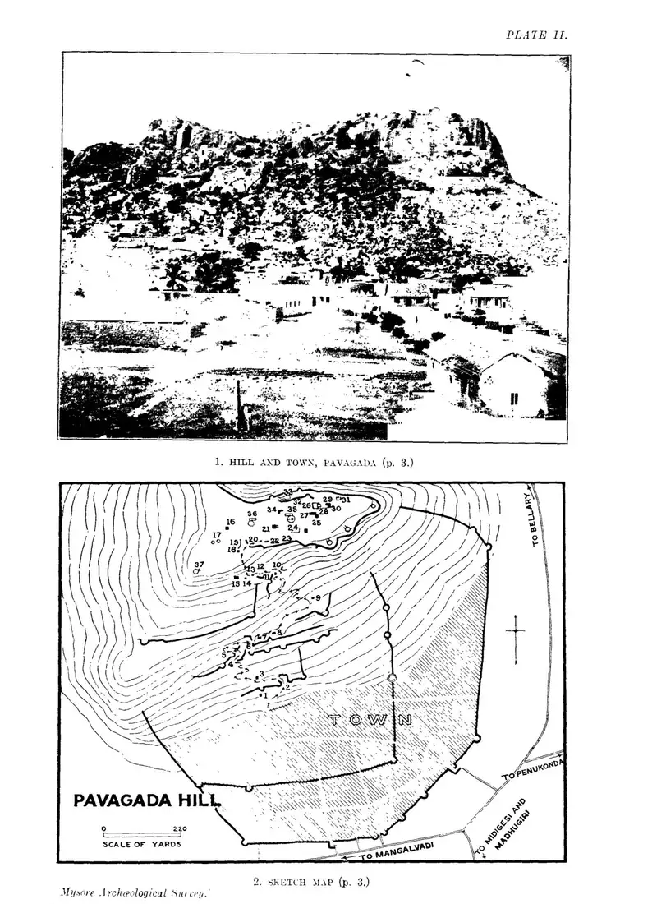
- HILL AND TOWN, PAVAGADA (p. 3)
- SKETCH MAP (p. 3)
in the Bijapur District wherefrom his family claims to have come. The back wall of its manṭapa has two sets of carvings showing four couples, evidently the builder and his relations or ancestors. The pillars also contain similar votive figures rudely carved.
About 50 yards to its east is a stone built tank now used for irrigation purposes.
2. Gaṭḍadaiyana Maṭha.—This is evidently a Śiva temple of the Nāyak period, the linga of which has disappeared.
3. Kālamma temple.—A half-built structure containing a seated image of Kāpālikā Durgā evidently brought from the temple No. 27 on the hill.
4. Kāśi Īśvara temple.—This is a well-built stone structure of the Pāllegār days with three cells, the central one having a linga, the right, Gaṇēśa and the left, a fine seated image of Annapūrnā with a ladle resting on both hands (Pl. V, 1).
5. Hanumān temple.—This is of the Pāllegār period. Its garbhagriha contains a relievo image of Hanumān. By its side stands the figure of a Brahmarishi holding a rosary in his right hand resting on a stick, and a book in his left hand. It is probably Vyāsa. From his left shoulder hangs a bag containing all his belongings.
6. Mirza Hussain Vali Darga.—Near the darga of Hussainshah Vali is a small mosque behind which is a well whose pulley is supported on two black stone pillars, finely carved with bulls on top. These appear to have belonged to the palace well, above the hill.
7. Śrī Rāma temple.—(Pl. III, 2). This is one of the best preserved in the lowest level of the town, known as the Sante Bazaar. It has a long garbhagriha behind the mukhamaṭapa. In the former are engraved on a large boulder some interesting groups, of which the central one consists of Kōdaṇdarāma with Lakshmana. Hanumān and another monkey to the right, and Sītā, Jāmbavān and Garuḍa to the left. Ādiśesha and another cobra are carved below a long panel consisting of the Vaṭagalai caste mark supported by śankha, while above there are chakra, the Sun and Moon, and Nārada and Tumburu playing on vīṇas. A ṛishi ĵblesses a child, while another ṛishi is in yōga. A warrior stands with folded hands. To the west of the Rāma group is a large Āñjanēya in the sitting attitude.
Near the foot of Rāma is kept on the ground a seated bhaktavigraha with joined hands. The date of the sculpture is about the second half of the 16th century.
8. Koṭṭurappana Maṭha.—This is a stone built manṭapa which is more recently used as a gymnasium. It has an earthen platform against its back wall, which is perhaps used as a cot.
9. Stone paved way up the hill.
10. Natural stream.
11. Ruined stone manṭapa.
12. The first fort gateway. The wall is rudely constructed of rough hewn stones and is only about 8 feet high. The gateway is a modest Hindu construction and is called Madhyaraṅgadabāgilu.
13. Vīragal.
14. Spring well.
15. Hanumān temple.
16. Śūlada Vīramma's pits in rocks.—These are natural pits about one half foot deep and almost 1' 9" wide.
17. Second fort gateway called the Vajrada Bāgilu, with a large kīrtmukha of earth covered over with plaster. It is a 17th century construction. The gateway is well constructed with a number of relievo carvings. On the faces of the side platforms ( iaguli ) are carved several figures. Some of them are elephants, horse-drawn chariots, tiger fighting yāh, kūrma, matsya and obscene figures.
18. Path leading to the old town.
19. Path leading to the peak.
20. Gateway of Vīramma's kōṭe.
21. Īśvara temple of the Pāllegār days (about 1600 A.D.). The Linga is absent from its pedestal. A small Nandi is kept in the vestibule.
22. Basavappa's shrine.—The bull is absent. In its back wall is a rudely carved panel of a devotee worshipping a hīnga. The shrine is of the Pāllegār days.
23. Vīrabhadra Shrine.—This is a stone structure facing north with a garbhagrīha containing an image of Vīrabhadra of black stone belonging to the Pāllegār days (Pl V, 2). The building contains a closed vestibule an open vestibule enshrining two Garuḍas and two bulls, and a navaraṅga of four pillars, on the back wall of which are dvārapālas of brick and mortar. There is no mukhamaṇṭapa, but in the yard in front, there stand a granite hīnga, a broken lamp pillar, an iron lamp pillar, etc., of the Pāllegār days. In front of the temple are also placed a large group of nāga stones. By the side of the east door of the navaraṅga stands a relievo group of Śūla-Brahma showing two heroes worshipping the pikes before being impaled. The sculpture is said to have been originally housed in the maṇṭapa opposite the east door. It is of dark trap stone and may hail from even the 14th century.
24. Pārśvanātha Basti.—This is an old late Hoysaļa-Draviđian structure of about 1232 A. D. (Iruṅgoļa II's time). It has a garbhagrīha with a black stone image of Pārśvanātha standing under a multi-hooded cobra with an inscription on the pedestal (E.C. XII No. Pg. 51). The vestibule doorway has rudely carved perforated screens supporting the jambs, while outside the garbhagrīha the walls seem to be made of huge slabs (some times 8 x 5 feet) placed one on another without mortar. The navaraṅga of 9 pillars, the mukhamaṇṭapa of 4 pillars and the pātālānkapa of 4 pillars, show workmanship of the Pāllegār period. Evidently these
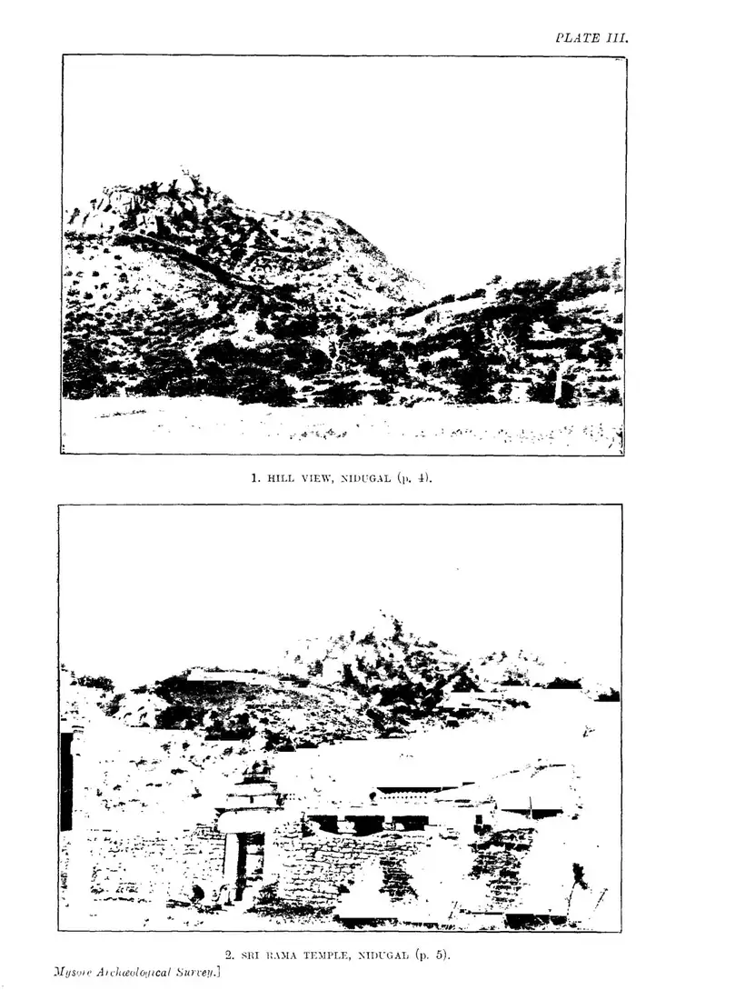
- HILL VIEW, NIDUGAL (p. 4)
- SRI RAMA TEMPLE, NIDUGAL (p. 5)
portions were rebuilt in about 1600 A.D. The Padmāvatī image of the west cell with an inscription on its pedestal and the image of Brahma on horseback which were both noticed by the Director of Archaeology in 1919 have disappeared. These are said to have been taken to Amarapura in the Madakasira taluk by Jain devotees. Removal of an image and, more particularly, of a recorded inscription ought to have been made with permission. It may be ascertained whether permission was obtained. The granite mānastambha, about 30 feet high, stands in front of the temple and is interesting because of the small towered niche constructed above it. This niche is now empty.
25. Viramma's well. This is a large stonebuilt pond.
26. Sīge Bhāvi.
27. Durgā shrine.—This is a small structure which enshrines a seated image of Durgā with all the four arms broken.
28. Ādinārāyaṇa shrine.—Facing north, near the east gateway, stands the one roomed shrine of Nārāyaṇa. In it on a Garuḍa pedestal stands a fine Hoysala image of Nārāyaṇa made of black stone, about 6 feet high including the pedestal. Its workmanship is simpler than in the usual Hoysala images and the god holds in his four hands śankha, pudma, gadā and chakra. On the jambs are carved the God's two consorts. The god wears a four-stepped tiara of evidently Hoysala workmanship.
29. Tippe Rudra temple.
30. East gateway called the Pāvagaḍa gateway.
31. Tirumaladēvara-kaṭte.—This is a small tank to the east of the Pāvagaḍa gateway.
32. Lakshmīnarasimha temple.—This is the largest structure on the hill and is of the Hoysala-Dravidhian type. Its garbhagriha houses a Lakshmīnarasimha group, on the toraṇa of which appear the ten avatārs. In the vestibule are also a small image of Kēśava and a nāga. In the navaraṅga are kept a Sūrya image and a sculptured panel depicting Rāma's coronation. The rebuilding of the navaraṅga and the construction of the mukhamanṭapa appear to have been done in the Pāllēgār period.
33. Next to the above on the west stands the Nagarēśvara temple in whose compound, against the west wall, are kept some inscriptions. There is another inscription on a black stone slab in the navaraṅga, which is dated 1171 Śaka corresponding to 1249 A.D. In the west garbhagriha and the north cell are two images. In the navaraṅga are kept:—
(1) Saptamātṛikas
(2) Nāga stones
(3) A Nandi
(4) Mahishāsuramardinī of Hoysala workmanship, and (5) Kēśava.
34. Sōmēśvara temple :—
This structure which bears on its navaraṅga doorway the date 1280 A.D. evidently belongs to the reign of Narasimha III. It has been well described by Mr. R. Narasimhacharya. Its navaraṅga doorway is elegantly carved. In one of the navaraṅga cells is a good image of Mahishāsuramardinī. while the female figure holding a child is kept in the vestibule. An inscription in the navaraṅga refers to a grant made about the year 1370 A.D.
35. Ruined masjid of Aramane Bābayva with tombs and tank.
36. Cavalier.
37. Kurubara Haṭṭi with about 15 houses.
38. Shrine of Mahishāsuramardinī with a relievo figure called Durgā of the Nāyak days. The temple was rebuilt about two years ago. Behind it, is a small towered structure said to be the tomb of a yōgi.
39. Gateway of the outer fort around the palace.
40. Gateway of the inner fort around the palace.
At the upper end of the inner gateway, facing south, near a ruined shrine is a seated image of soapstone beautifully carved in the Chālukyan style. The deity is Bhairava treading on the body of a beheaded demon. Skeleton-bodied Bhetaśas dance around him. He is eight-handed holding : sword (broken), snake, mace or axe (broken). trident, đamuruga, broken, bowl with demon's head and bow. The tōraṇa, 4' high, is of a flower-laden creeper with a fine lion's head.
To the south of the same gateway stands a soapstone image of Gaṇēśa, 3' high, simple in form and not ornamented like the typical Hoysaśa work.
41. Foundations of numerous buildings.
42. Chennakēśava temple.—This is a temple built of granite, with a brick tower of the Nāyak days and an interesting secret storey in the double roof. The image is now said to be in the village of Beļlibaṭlu to the east of the hill.
43. A deep semi-circular tank with stone steps leading down. This appears to have been the chief source of water-supply to the town.
44. Ēśvara temple.—On the platform to the north of the tank stands a small bu fine granite temple which is mentioned as having been built by Jagadēka-malladēva, son of Irungośa I (circa 1150 A.D.). The temple has a garbhagrīha with the liṅga disappeared and the pīṭha disturbed. The vestibule is open and the navaraṅga has four octagonal bell-shaped granite pillars. There is a lotus in the centra ceiling. Against the walls are ten little cells the deities of which have disappeared. The middle one in the south contains the Saptamātrikā panel having only these seven figures :—Indrāṇī, Brāhmī, Māhēśvarī, Kaumārī, Vaishṇavī, Vārāhī and Chāmuṇdā
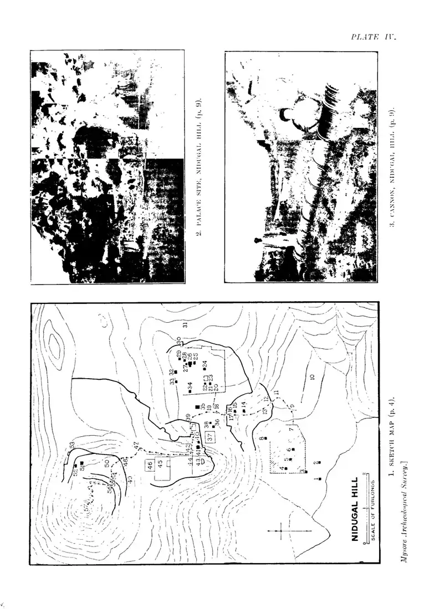
- SKETCH MAP (p. 4)
- PALACE SITE, NIDUGAL HILL (p. 9)
- CANNON, NIDUGAL HILL (p. 9)
(Durgā). Gaṇēśa and Vīrabhadra are absent. Opposite to the temple stands a small maṇṭapa with a soapstone bull.
45. First fortgate of hill top.—In this area (which is back of the hills) stand the high walls of what was once the palace of the Pāllegārs (Pl. IV, 2). The building is entered by an arched gateway between two high balconies and is divided into several compartments. The walls are of rough size stones to about 4 feet and then built of sundried biscuit-shaped bricks. The building very much resembles the palace of the Nāyaks on the Chitaldrug hills. The walls are 5 feet broad at bottom and taper upwards.
46. Durbār Hall.—Behind the palace on a rock stands a high stone structure. There must have formerly stood a hall or room here, probably used for a sate retreat. It is said to have been the durbār hall of the Pāllegārs. Through an arch under a boulder are entered the apartments consisting of the kitchen, the guards' room, etc.
47. On a boulder stands the figure of a prince with folded hands before a linga and a bull. Behind the boulder is a pool from which a drain leads water to the tank near the palace.
48. Second fort gateway of hill top.
49. Cave serving as horse stables.
50. Under a rock shelter is a shrine which appears to have contained a dark stone image of Bhairava. This has now disappeared and is represented by a fragment consisting of his feet, the dog and a Bhētāla. The shrine is popularly known as that of Guligañjamma.
51. Guard rooms and powder magazine. with a pond formed by cutting out rocks around a natural pool.
52. Kālahastīśa temple.—To the north of the above there is a temple of Kālahastīśa of the Pāllegār times, having a garbhagrīha containing a low natural linga, an open vestibule with a small Nandi, a navaraṅga of four pillars of very ordinary workmanship, and a porch of three ankaṇas. In the porch is a black stone slab which has an inscription of the Harati chief Hoṭṭaṇṇa Nāyaka (E. C. XII, Pg. 46). By the side of the northern pillar of the garbhagrīha there is a fragmentary inscription of 3 lines. To the east of the Kālahastīśa temple and other buildings on the fort walls and bastions are found about 3 or 4 pieces of cannons made by welding iron bars and rings. as in the cannon placed to the right of the Government Museum at Bangalore.
53. Wicket gate leading north-east down the hill. To its west on a bastion lies a huge cannon in two pieces, which together give it a length of 19 feet (Pl. IV, 3). The diameter of the hole is one foot. To its west lies a large natural pool of water.
54. Third fort gate of hill top.
2
55. Fourth fort gate of hill top.
56. A rock shelter cave said to have been a powder magazine. It is more probably a temple.
57. A steep zig zag climb on the north-east face of the topmost hill brings us to a large boulder which forms the peak of the hill and is 3,772 feet above the sea level. Here stood an old temple of Nandi. It was constructed by Hoṭṭaṇna Nāyaka in about 1700 A. D. The runned temple and the image of the bull were rebuilt by public subscription in 1928, in memory of which an old Hoysala inscription was rubbed off its slab and a new one inscribed. This inscription and the one on the bull opposite the temple were copied. The lamp pillar of the temple appears to date from the Pāllegār days. From the top a good view is obtained of the various inhabited terraces of the hill and of the country around.
Miđigēsi
Venkaťaramaņasvāmi Temple; Mallēšvara Temple
(Pl. VII. 1).
Midigeši was last visited in 1918 and an account of the hill fort of the place has appeared in the report for that year (p. 8.). The following are the several points of interest :—
(1) Fort wall.
(2) Veňkaṭaramaṇa tempie.
(3) Old palace site. It has high rubble walls surmounted by earthen ones now in ruins. To the south of the palace is a pond called Vokkarape which supplied water to the palace.
(4) Hill fort wall and gateway No. 1—Old Hindu structure.
(5) Hill fort wall and gateway No. 2—Old Hindu structure.
(6) Maṭtapa in ruins—Perhaps a guard house.
(7) Hill fort wall and gateway No. 3.
(8) Hill fort wall and gateway No. 4.
The steps here run through a natural cleft between two vertical faced boulders about 5½ feet apart (Pl. V, 3). The fort walls near by have masonry parapets provided with musket holes and cannon platforms and built with flat thin bricks of the second half of the 18th century. Probably they belong to the days of Hyder.
(9) Hill fort wall and gateway No. 5.—This gateway the stone work of which bears lotuses, fish, etc., is an old structure improved by Hyder or Tipu and provided with pointed arches and vaulted roofs.
(10) Musare-Done.—This is mostly built of brick and most probably belongs
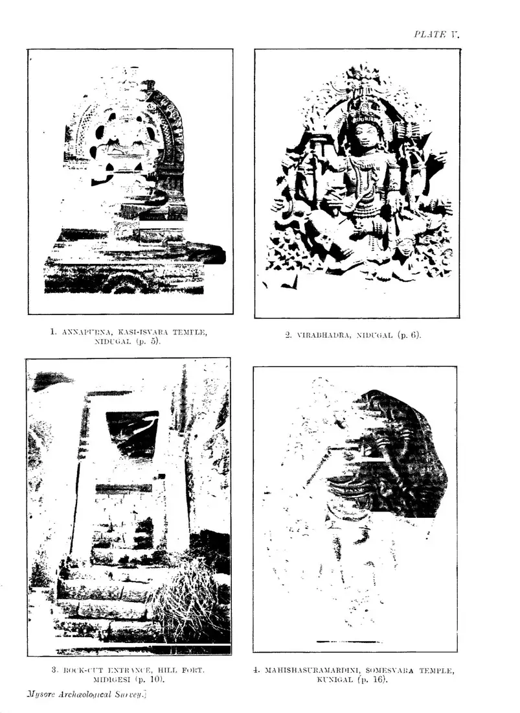
- ANNAPURNA, KASI-ISVARA TEMPLE NIDUGAL (p. 5)
- VIRABHADRA, NIDUGAL (p. 6)
- ROCK-CUT ENTRANCE, HILL FORT MIDIGESI (p. 10)
- MAHISHASURAMARDINI, SOMESVARA TEMPLE KUNIGAL (p. 16)
to Hyder's days. At its west end is a platform for drawing water with a rope.
(11) Powder magazine or secret dungeon close to a watch tower. It is concealed by stone works. It is in a pit and has a passage and two rooms (measuring 20' x 15') and is in a good state of preservation. The trees around it may be cleared and a flight of steps of size stone may be built to lead the visitors to it.
(12) Masjid.—This is a structure of brick and mortar with a hall of about 35' x 20' and with two minarets and a brick and mortar parapet with the wall worked in the shape of lattice work. (Pl. VII, 2).
(13) To the south-west of the above stand the ruins of a building built of rubble walls. It was perhaps the house of the Khazi.
(14) Granaries.
(15) Āñjanēya temple.—This is a small structure of the Pāllegār days with a reliefo of Hanumān in it.
(16) A brick built tank improved in the Muslim days.
(17) Citadel of Palace.—This has two courts, the outer one of which contains granaries. The inner one probably had living rooms. A plaster reliefo of Garuđa in the south wall of the granary suggests that it is a Hindu structure. The destruction of the head and shoulders of the figure might have occurred after some conquest. The outer part is entered by a stone gateway with guard rooms on both sides. The court has a back door leading towards the granaries and the peak. In front of it on the north-west stands an open structure with a verandah which was probably used as the durbar hall.
(18) Store rooms for oil and ghee (?)
(19) Granary.—Rice husk, etc., are still found in six pits. To the north-west of the granary is the trigonometrical station.
(20) Kanyarammana Done.—This is a natural pool on the north-west. It is the chief source of water-supply to the hill top. Near it, facing west, is a small cave of Kanyaramma, and here the goddess is worshipped in the form of a linga-like stone.
The temple which overlooks the town to its east is built on the lower slopes of a high terrace. Its dvāramanṭapa which has a tall
Venkataramanasvami Temple. Draviđian brick tower and lion-bracket pillars, has a Ganēśa in a small cell on the south and Bhairava on the north. Its mukhamanṭapa has a set of fine pillars with ribbed brackets. The garbbagriha appears to be a late Hoysaļa structure.
The Mallēsvara temple is also of the Pāllegār times. Both are kept well and Mallesvara Temple. in a good state of repair.
2'
Koratīgere
(Pl. VII, 3).
A note on the hill fort at Koratigere has appeared in the Mysore Archæological Report for 1918 (P. 3 ff). The several points of interest that we come across as we climb up the hill, are the following :—
1. Fort wall No. 1.
Between the 1st and the 2nd fort gates the path passes over a ground which emits a hollow sound. It is said to be the mint.
2. Fort wall and gateway No. 2.
3. Guard house.
4. Fort wall and gateway No. 3.
Here a branch path leading to the left takes us to an old cave temple of Gavi Timmaiya. It is a large rock shelter cave facing south. In its garbhagrīha stood formerly an image of Timmaiya or Šrīnivāsa. Some conical stones are set up there and an image of Tirumaṅgai Ālyār is found. There is a cave chamber to the east, which is vacant. Possibly another to its west which is said to contain a linga and a pīṭha is now walled up. The doorway of the vestibule with its Vaishṇava dvārapālas, the pillars of the raṅgamaṅṭapa with the relievo carvings of Hanumān, and Garuḍa, the votive images of the Pāllegārs, etc., show that the structure is of the Pāllegār period.
5. Fort wall and gateway No. 4. Just behind is a pond of water.
6. A building used as a reading room built about 30 years ago, now in disuse.
7. Gaṅgādharēśvara temple.--From a fissure in the rock above Gaṅgādharēśvara water drips down on the linga which is placed in a pit of the lower rock. The temple is a cave shrine as at Šivagaṅga. It is said that another linga called Jyotirmahēśvara has been covered up by the wall which is behind Gaṅgādharēśvara and the former's consort is similarly covered up by the wall behind Pārvatī. It is said that 30 years ago the images of Šrīnivāsa and his consorts were set up along with those of the Navagrahas. Two unnoticed images kept in the temple are of interest. One appears to be of Nammālyār with a vīra-rēkhā on his forehead. The other sits in padmāsana and has the hands joined. The reading room building covers the front view of the temple: the sooner it is removed, the better.
Kuņigal
Gaņeša Temple
The Gaṇēśa temple contains an old image of Gaṇapati on a mūshaka-pīṭha. It appears to have been built during the Vijayanagar days in a part of the fortgate
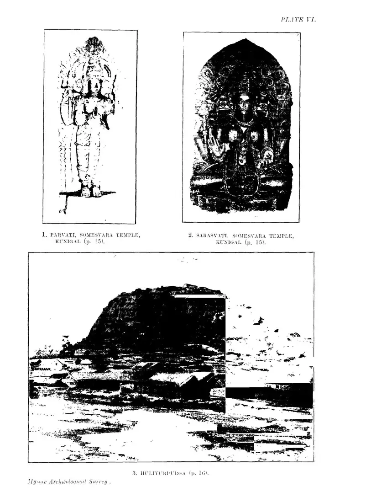
- PARVATI, SOMESVARA TEMPLE KUNIGAL (p. 15)
- SARASVATI, SOMESVARA TEMPLE KUNIGAL (p. 15)
- HULIYURDURGA (p. 161)
which is now partly existing. A new inscription of the Hoysaļa period was copied here on a stone lying adjacent to the Hanuuān temple.
Narasimha Temple
History and General Description; Main Image; other images; Conservation
The Narasimha temple appears to have been built in two or three stages:
The original temple with its garbhagriha, vestibule and navaranga is of the Hoysaļa period. The navaranga built of granite with a now disappeared porch is a structure of the late Hoysaļa period. The garbhagriha contains an image of Janārdana with the ten avātaras on the prabhāvali. The vestibule doorway is finely ornamented with creeper scrolls. The navaranga which has Bālakrīshṇa on the lintel of the doorway and four cylindrical granite pillars as in the Pañchalingēšvara temple at Sōmanāthapur has a shallow dome with a pendant. As in many other temples of this period like the Vaidyēšvara temple at Talkāđ, the navaranga has a door to the south. Two cylindrical pillars of the original porch are now found in the later structure in the north-east corner of the temple. The outer view of the main temple is plain except for its characteristic octagonal cornice and the series of right angled pilasters with biscuit-shaped capitals.
To this original temple a mahādvāra was provided on the east. The southern porch of the main building which is now closed in has sixteen-fluted granite pillars.
In the late Vijayanagar days alterations appear to have been made, viz. , the addition of a mukhamaṇtapa of three ankānas with pillars of cubical mouldings bearing rudely carved sculptures, the addition, in place of the porch of a pātālānkaṇa of four pillars, another mahādvāra, and the construction of two rows of cells facing each other between the two mahādvāras.
The Narasimha temple is so called since the original image appears to have been Narasimha, which was lost in subsequent days. The present Janārdana figure was brought from Huliyūrdurga and installed here.
The Garuđa facing the main image is peculiar since it has four arms holding kalaša, chakra, šankha and sarpa. The figure is interesting, though rudely carved in granite in the late Vijayanagar days. It bears moustaches and tenkalai caste mark.
Other Images.
In the outer set of cells facing east, there are a Kōdaṇđarāma group and a Vishvaksēna placed in front of a stone brindāvana. The significance of the latter is not known.
The temple may be declared 'Protected' and put under Class III.
Conservation.
Padmēšvara Temple
History; General Description; Conservation
The disposition of the several buildings shows that Kunigal was an agrahāra town granted in the late Hoysaļa days, probably about 1250 A. D. In the centre stood the Narasimha temple, while to its north-east, about 150 yards away, was built the Padmēšvara temple, an ornate granite structure in the typical Hoysaļa style.
History. The garbhagrīha of the temple has a medium-seized linga on a fine pedestal. The vestibule is divided into three compartments, of which the north one contained Pārvatī, now disappeared, and the south one. Gaņēša, also disappeared but substituted by a modern one. The navaraņga has four pillars of granite having cubical mouldings and connected by sixteen-fluted shafts with wheel moulding above. The ceilings contain mostly padma domes with pendants. The east door of the navaraņga has no porch, while the south one appears to have had a porch.
General Description. The Narasimha and Padmēšvara temples, though not of extraordinary beauty, still deserve to be preserved. Both of them are in a decaying condition, and particularly the latter, the foundation having sunk at the west end of the navaraņga and the roof become leaky throughout. The Padmēšvara temple is said to have about Rs. 500 at its credit. This may be very well utilised for the preservation of the temple.
The old fort wall separates the area of the temple from the large tank on the north-east.
Šivarāmēšvara Temple
The Šivarāmēšvara temple is a modern structure of little archaeological importance, except for the figure of Mahishāsuramardinī. This image which is said to have been brought from the ruined Kottēšvara temple at Koļtegere is in the typical Gaņga style. It is a relievo carved on a granite slab. The goddess holds a snake, prayōga-chakra, a conch and a trident, and stands on her left foot, treading on the buffalo with the right one. She wears a breast-band, shorts and waist band ( dafti ). The figure is interesting.
Tank
Nīra-Bāgilu Āņjanēya; Sculptures on first gate; Tank Bund; Sculptures on second gate
• About 50 yards to the north-east of the Padmēšvara temple and over the relics of a fort wall of the Vijayanagar period stand the remains of the water-gate with a Hanumān shrine. On the pillars of the gate and on their cubical mouldings are found, among others, the following sculptures:—
Camel with a rider ; anthropoid gaņdabhēruņda standing with lions in its beaks and elephants in its hands ; wheeling acrobats ; and
Sculptures on first gate. musicians playing on Sarasvatī vīņā.
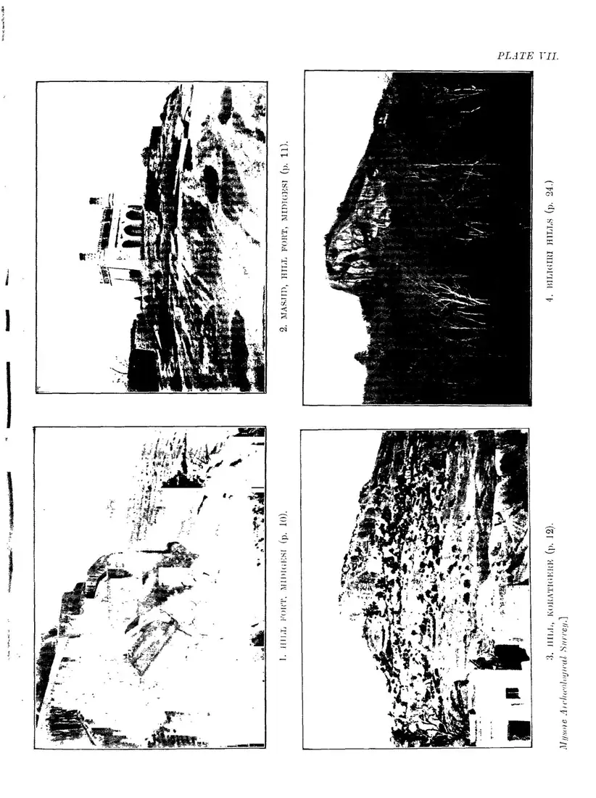
- HILE FORT, MIDGESI (p. 10)
- MASITD, HILE FORT, MIDGESI (p. 11)
- ПИЛ, КОРАТГЕРЕ (p. 12)
- BILGIRI HILES (p. 24)
The lower portions of the tank bund are made up of largish round boulders and are evidently of Hoysala days.
Another water gate leads to the steps of the tank. It is well constructed with numerous carvings on the cubical mouldings of its pillars.
Sculptures on Second Gate. Among these may be noticed: Bhairava, Virabhadra wearing long coat and tiny beard, Jaṅgama-guru holding kamaṇdalu and staff. Dakshiṇāmūrti, Brahma on swan, Kāla-Bhairava and the image of the builder. This person who is dressed like the image of Kempe Gauḍa at Śivagaṅga has no sacred thread. He wears loin cloth, necklets, moustaches, ear-rings and round-topped cap. To his left stands an attendant bearing his sword and betel bag ( haḍapa ).
A pillar in front of the chief is cracked and a timely prop would save the structure from decay.
Sōmēšvara Temple
History and General Description; Liņga; Navaraņga; Porches
The SömĚšvara temple contains a number of buildings built in different times. dating from the Hoysala to the Pāllegār days. It is a granite structure with the original temple having a peculiar plan. The latter contains a garbhagriha with a multi-corniced basement. A pilastered outer wall is now bent to the north and is out of plumb, the basement having sunk.
History and General Description. The SömĚšvara linga which is a naturally rounded stone on a low pedestal appears to date from about the 13th century or earlier.
In front of the vestibule stands a navaraṅga with plain ceilings and four cylindrical granite pillars. In the navaraṅga is kept a fine Hoysala image of Sūrya. This image stands on a pedestal carved with Aruṇa. His horses are supported by the Sun's consorts holding bows and arrows. He holds a padma in each of his two hands and is surrounded by a tōraṇa having yaksha-like figures in the convolutions of the creeper scroll, identified as the nine Grahas or planets.
In addition to the eastern doorway which must have led to the tank, the navaraṅga had a porch on the south with eight cylindrical pillars and a similar one on the north. The north porch appears to have been dismantled in later days to provide accommodation for the shrines of two images. Of these images, one is Pārvatī, (Pl. VI. 1) a slim figure, about three feet in height, of the late Hoysala or early Vijayanagar period as seen from the serpentine tōraṇa and the full length of the sari . The other image is of Sarasvatī (Pl. VI. 2) which is, however, of Hoysala workmanship and is seated in padmāsana, holding rosary, goad, śakti-pāśa and pustaka. Its damaged face has been provided with an ugly nose by some inexperienced modern artist.
Porches.
At the west end of the southern porch a small shrine was added later, perhaps in the Vijayanagar days, for installing a relievo image of Mahishāsuramardinī (Pl. VI, 3). This image is most interesting. It appears to belong to the Gaṅga days even (C. 800 A. D.) On the head of the buffalo whose tongue is protruding from its mouth, the goddess stands with her left leg crossed behind her right. Her body is bent in tribhaṅga and her four hands hold a sword, a discus, a conch and a bow in order. She wears a jewelled kirīṭa, necklets, sacred thread, breast-bands, nāgamuri, kammarband, and shorts, anklets, and bracelets. To her left stands a straight-horned antelope. The image at once reminds us of the Mahishāsuramardinī at Nandi and evidently belongs to the same age. Traditionally it is said to have been installed by Šankarāchārya, though the shrine itself appears to be an accretional structure of the Vijayanagar period.
The outer southern porch with its roughly sculptured granite pillar, the vacant Śiva temple in the south of the compound and the Pañchaliṅga temple on the west of the mahādvāra are all structures of later days.
Part II: Study of Ancient Monuments › Tumkur DistrictHuliyūrdurga
(Pl. VI. 3).
Huliyūrdurga was last visited in 1919 by this Department and a note was published in the Annual Report for that year (para 35, page 16). The fort on the hill must have been formidable during the latter part of the 18th century owing to the great natural advantages. The hill is a solid mass of rock, cup-like in shape and difficult of ascent. The several points of interest to be noted are the following:—
(1) North gateway of the town fort wall with Gaṇeśa and Āṇjanēya temples.
(2) Hill fort wall and gateway No. 1 (Pāllegār structure without mortar).
To its south is a platform lined with stones, where the taluk kacheri is said to have once stood.
Gōpālakrīshņa Temple
History; General Description; Navaraņga pillars; Main image; Lakshmī shrine
It appears to have been built either by Kempe Gauḍa or by his conqueror Chikka Dēvāraja Vađeyar as can be inferred from a stone of the brindāvana lying in the compound which has a Kāliṅgamardana between Šankha and Chakra.
History. The temple has a garbhagriha, a vestibule, a navaraṅga of four pillars, a maṇṭapa of three ankaṇas, a pātālānkaṇa of six ankaṇas and a front porch of one ankaṇa.
General Description. The navaraṅga pillars of granite are well worked having sixteen-fluted shafts with pot and wheel mouldings above them. On the lower parts of the pillars which are square are carved the figures
Navaranga Pillars.
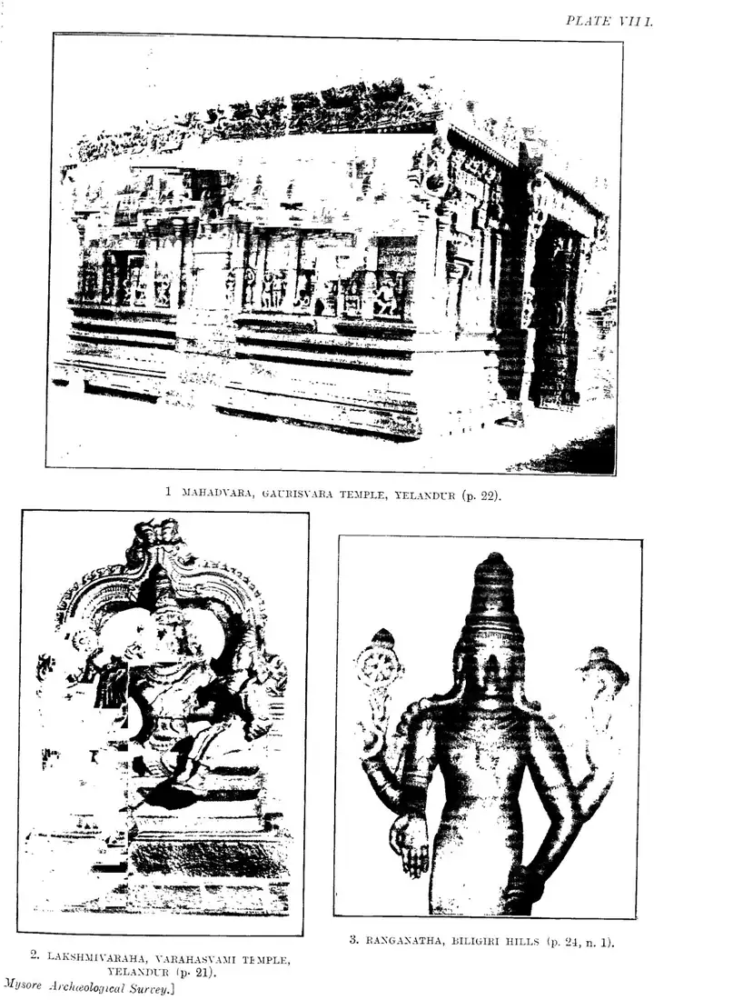
- 1 MAHADVARA, GAURISVARA TEMPLE, YELANDUR (p. 22)
- LAKSHMIVARAHA, VARAHASVAMI TEMPLE YELANDUR (p. 21)
- RANGANATHA, BILIGIRI HILLS (p. 24, n. 1)
of dancers and musicians. The navaranga has two smaller cells on the north and south. These are also vacant.
The original image of Vēnugōpāla belonging to the temple was broken into pieces and the fragments now lie to the north of the temple.
Main Image. To the south of the temple is a smaller shrine of Lakshmī, a fine figure seated in padmāsana, which is also smashed into pieces. The portion from the waist downwards is yet found in the navaranga and does credit to the sculptural work of the time.
(4) Second hill fort wall and gateway.
(5) Ruined buildings.
(6) Third hill fort wall and ruined gate.
(7) Fourth hill fort wall and gate with Gaṇēša. The pathway lies on a steep rock.
(8) Fifth hill fort gate with some dones (water pools).
(9) Sixth hill fort gate.
(10) Granary and grinding stones with done .
(11) Ruins of old buildings, built of bricks (11" × 7" × 2") evidently during the Pāllegār period.
(12) Ruins of observation tower with done and brick platform, said to be Kempe Gauđa's observation tower.
(13) Jyōtirmayēśvara temple.—This temple in the old town, is also a structure of the Pāllegār days. Its manṭapa and pātālānkaṇa have been walled up and used as a Rāma-mandir. The only objects of interest in the temple are the images of Vēnugōpāla and his consorts which are fine. The god is about 16" high and is really a Janārdana image with padma, abhaya, chakra, śankha and gadā—a form generally known as Varadarāja.
Part II: Study of Ancient MonumentsHassan District
Šravaņabelgoļa—Points for Conservation
POINTS FOR CONSERVATION.
Kalyāņi
The Kalyāni pond is finely built. Its steps are intact and no resetting is required. The inlet and outlet are closed. The water must be pumped out and the inlet and outlet opened and provided with shutters. The gōpuras and manṭaps may be cement pointed.
3
Dođdabetťa
The Brahmadēva shrine is a new building, good and intact. The inscription of Rangaiya at its back must be released to the view.
The damaged corners of the second gateway may be covered up. The lichens must be removed by a careful chemical wash.
The third gateway has no special character. The cuttings at the base of the pillars may be cement-pointed.
A part of the fort wall at the fourth gate is out of plumb. It may be reset and the neighbourhood cement pointed. The leaks of the gate may be cemented and the mud walls removed and opened out as far as possible.
The north and east faces of the platform at the Odegal basti are out of plumb and should be rebuilt with concrete filling.
The roof of the manṭapa enshrining the Brahmadeva pillar must be reset. The lichens should be removed and the whole pillar cleaned.
The two trees near Siddha's rock at the fifth gateway may be removed and the flooring reset.
The sixth gateway is probably a construction of the Mysore dynasty. One jamb is out of plumb. The upper brick work may be removed and a separate light parapet put in.
The seventh or last gate is intact.
The flooring of the pradakshiṇā is irregularly settled. A concrete bed would perhaps be the best. All the slabs require resetting and pointing. Outlets for rain water should be given in the walls.
The ugly walls covering the small doorways on the west may be removed and battened wooden doors provided.
The Chāmarāja manṭapa should be rebuilt with the old materials.
The dressed stone pillars of the Guṭlakāyajji manṭapa, etc., should not be covered with white-wash or paint. The pillars are out of plumb and should be reset.
The tree in the parapet of the Siddhara basti should be removed with its root and the cracked ceiling slab near S. B. No. 36 may be supported by a pilaster.
Electric lighting may be brought from Hołenar-ipur which is only 16 miles away.
The pillar at the Vardhamāna basti has a brick top with a cactus tree. The latter should be removed and the brick work rebuilt.
The south wall of the Akkana Basti is out of plumb and should be rebuilt with great care. The east pillars of the porch which are out of plumb should be watched for further bending. All white-wash should be removed.
Gōmatēšvara Image
Left foot. —Portions are peeling off. It is much worse than the upper part of the body, perhaps because abhisheka is performed.
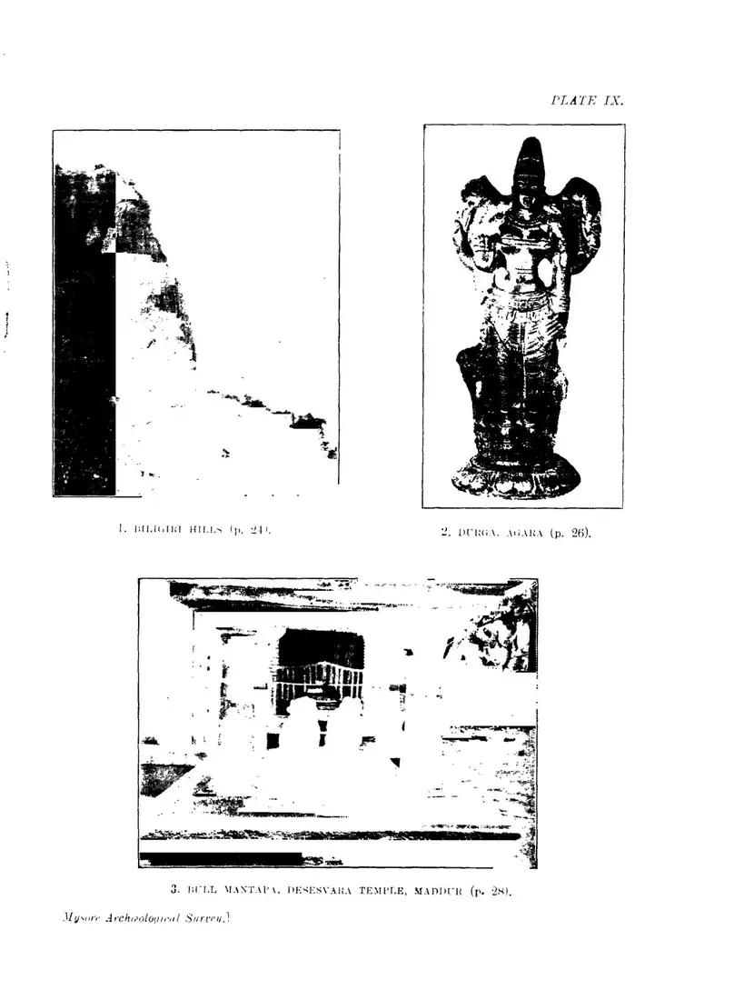
- BILIGIRI HILLS (p. 24)
- DURGA, AGARA (p. 26)
- BULL MANTAPA, DESESVARA TEMPLE, MADDUR (p. 28)
Left leg. —This is pitted in front and a reddish hue appears on the west. Black spots appear on the creeper. They are to be examined.
Left thigh and chest. —Here patches appear. Just outside the right leg is a long vertical crack, about 10 feet long, which should be covered up with some adhesive silicate.
Right hand. —A crack, about a foot long, appears just above the small finger.
Hips. —A very thin crack is developing between the hips.
Left back and right shoulder and arm. —Large patches appear owing to the stone surface having peeled off. No lichens or plants are visible. A microscopic examination may reveal some tiny plants whose roots dislodge the crystal.
Chin and neck. —These are getting covered by dark lichens.
Face. —A crack starting from the right eye is spreading towards the right nostril.
Chikkabeṭta
Inscription rock. —The area of inscriptions should be protected by circumscribing rock-cut channels in the form of arcs on the east and west.
Pāršvanātha Basti. —The granite cornices of the south-wall are disintegrating. Preservatives may be tried here before being applied to the big image.
Mahānavami Maṇṭapa. —The brick tops need replastering. The inscription pillar which is out of plumb may be observed for further settling.
Śāntinātha Basti. —The roof has been repaired with cement. Corners may be pointed with cement.
Bharatēšvara image. —This should be railed off and hitting the image with stones should not be permitted.
Supāršvanātha Shrine. —The south beam has cracked and has been propped up by a pillar. This is all that is needed now.
Chandraprabha Basti. —Two cracked brackets have been propped up. The crack is widening. The load on the roof may be lightened.
Pāršvanātha Basti. —Recently repaired.
Kattale Basti. —The north and south walls of the navaraṅga are re-built of size stones with pierced stone windows. The floor of the pradakshipā requires to be paved. The brick walls are to be rebuilt with size stones and the roof is to be completely remade. The old framework should not be disturbed.
Chandragupta Basti. —The barred windows on the east are out of place. On the fifth window spaces are too wide. Expanded metal could be inserted at the back of the windows, if possible.
Anantanātha Basti. —This is small and intact.
Ādišvara Basti. —This is recently well repaired. The garbhāūkaṇa has to be plastered. Supporting pillars are upside down.
Chāmuṇdarāya Basti. —The walls of granite are peeling off. The navaranga is leaking. The image upstairs is smeared with red lead. This should not be done.
North Ādiśvara Basti. —Props are needed for the western pillars.
Śāsana maṇṭapa. —The north beam should be replaced and the ugly wall removed.
North Śāntiśvara Basti. —The roof is to be replaced.
Maṇṭapas near done. —The damaged ones may be removed.
Jinanāthapura
Sāntinātha Basti; Conservation; Minor Basti; Conservation
ŚĀNTINĀTHA BASTI.
The Śāntinātha Basti is a beautiful building. An approach road may be made. The neighbourhood may be cleared. A compound wall may be put up. The platform should be dug up and reset. The south wall which is out of plumb should be rebuilt carefully as at Haļebīd. The plants in the north wall may be removed. The prop stone against the north wall should be replaced.
Conservation.
MINOR BASTI.
The plants should be removed. The basti is intact. It is a Hoysaļa building with granite pillars.
Conservation.
Part II: Study of Ancient MonumentsMysore District
Seringapatam
Pūrniah's Bungalow
Pūrniah's house is a large building in the European style built probably in 1799 for General Harris. It is situated on the north bank of the south branch of the Kāvērī directly to the south of the Mysore gate. It is surrounded by a large and fine garden.
It was occupied by General Harris for a short time immediately after the fall of Seringapatam and later on by the Officer Commanding, and in 1811 it was given over to Dewan Pūrniah for his dwelling. Since then it has been, along with the garden, in the possession of the Jahgīrdar of Yeļandūr.
The stone inscription reads: "This house was the residence of Lt. Gen. George Harris, afterwards Lord Harris, and subsequently of Purniah, Dewan to the Maharaja of Mysore, 1799-1811".
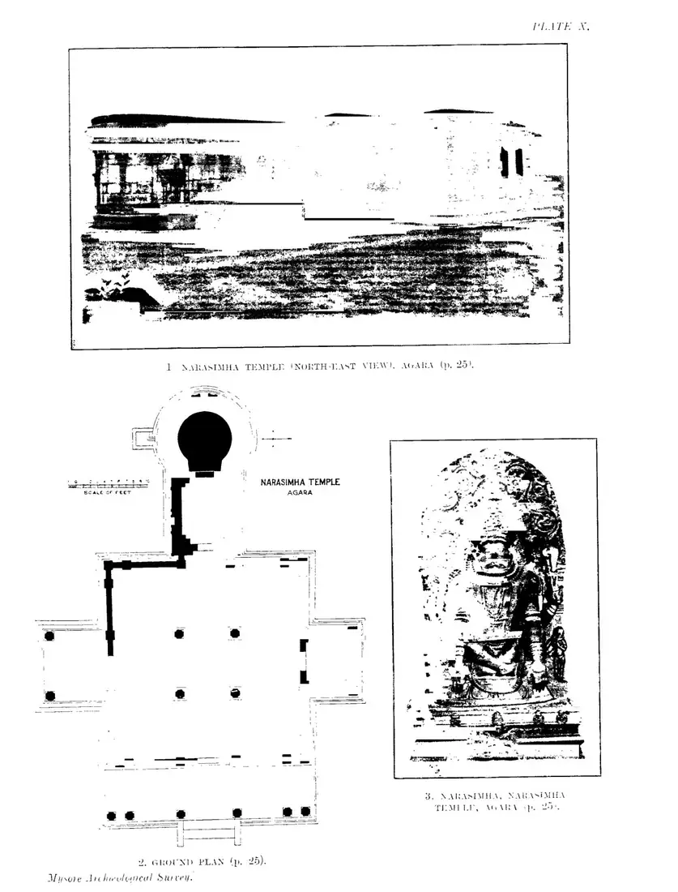
- 1 NARASIMHA TEMPLE (NORTH-EAST VIEW). AGARA (p. 251)
- GROUND PLAN (p. 25)
- NARASIMHA, NARASIMHA TEMPLE, AGARA p. 254
The building is finely built with commodious halls and large rooms, to construct which at modern rates not less than Rs. 50,000 would be needed. It is entirely bereft of furniture and is very badly looked after. The garden has been leased to a retired peon for Rs. 400 a year and this man is expected to look after the building according to the lease terms. The man has no interest and cannot look after it. He says that the Jahgīrdar visits the place about once in a year. But no attempt has been made to repair the building.
The building is generally intact. But its walls have sprung numerous cracks. The south-east room especially has large cracks in its walls and the terrace is so damaged that it leaks in many places. The building is very strong and can be repaired with about three or four thousand rupees and the neighbourhood could also be dressed up with a total expenditure of about Rs. 5,000. It is fully worthy of such expenditure and could be used as an office building, Magistrate's Court, etc. The Jahgīrdar is bound under the Rules of the Ancient Monuments Preservation Regulation to spend the money. Otherwise Government may acquire the building. Thousands of monkeys live here. The building may be examined by the Public Works Department and an estimate prepared.
Part II: Study of Ancient Monuments › Mysore DistrictYelandūr
In the Annual Report of this department for the year 1917 the derivation of the name of Yeļandūr and the history of the place are explained. Here a detailed study of the temples has been made.
Varāhasvāmi Temple
Lakshmī-Varāha Image; Kēśava; Lakshmī; Conservation
There are four shrines in the Varāhasvāmi temple. The central one contains the image of Lakshmi-Varāha (Pl. VIII, 2). The god has Lakshmi-Varaha Image . an anthropoid body and a boar's head and is seated in sukhāsana with Lakshmi on his left lap. His four hands are thus disposed: abhaya, chakra, śankha and around Lakshmi's waist. This group which is generally rare is a fine one. Its well worked drapery, slinness of the body and the tapering kirīṭa remind us of the work of the Chōlā period. The tōraṇa which is in the Draviđian style appears also to be carved out of the same stone.
By the side of the south prākāra wall is enshrined an image of Kēsava or Chennigarāya in standing posture. His hands hold abhaya and padma, śankha, chakra and gadā. It is an image brought from elsewhere and probably belongs, like the Varāha image, to the Chōlā period.
The goddess' shrine on the north contains an image of seated Lakshmi with her hands in abhaya and dāna. It is an image of the Lakshmi . Vijayanagar period.
The only object that deserves special care and attention in the temple is the Varāha group. The temple needs the attention of the Jahgīrdār. The Varāhasvāmi temple which is not a protected monument is architecturally important. It is also in much need of repair, the flooring of the pradakshipā, the parapet walls of the dvāramaṇtapa, etc., being out of repair. Near its north gate lie two jamb pieces bearing very finely worked vertical scroll and other bands rising up from the hands of the river goddesses Gaṅgā and Yamunā standing on makaras and attended by female chauri bearers. The workmanship is very similar to that in the mahādvāra of the Gaurīsvara temple at the place. These pieces may be removed to a safer spot.
The Gauriśvara Temple
Mahādvāra; wall sculptures; Eaves. Parapet; Other Sculptures; Date; Main Shrine; Gaurī shrine; Maṅṭapas
The Gaurīsvara temple comprises now of six buildings situated in front of the Jahgīrdār's bungalow.
The most ornate and interesting of them all is the mahādvāra which resembles similar parts of the temple at Tādapatri (Pl. VIII, 1).
Mahadvara. About four feet of its lower part are now imbedded in the earth so that only the torsos of Gaṅgā and Yamunā are visible. The eastern jambs contain images of dancers, musicians, a monkey eating fruit, etc. There is the figure of Umāmahēsvara on the lintel attended by Īsāna and Vishṇu.
Wall Sculptures. The outer walls have rows of sculptured figures thus—
South East—
Bhairava attended by dancing dwarfs and half-naked women.
South—
(a) Sadāśiva standing. attended by ṛishis, Nandikēsvara, etc. under a relievo turret of the Draviđian style supported on either side by ornamental pilasters.
(b) Veṇkaṭēśa standing with worshippers and attendants.
West—
(a) Vīrabhadra attended by goat-headed Dakshabrahma and sages with Ardhanārīsvara to the left and Rati and Manmatha to the right.
(b) Vēṇugōpāla attended by the Gōpīs.
North—
(a) Śiva seated with Nandikēsvara singing and Gaṇēśa dancing.
(b) Gōpīvastrāpaharaṇa with Kṛishṇa on a tree and the naked girls begging for their clothes.
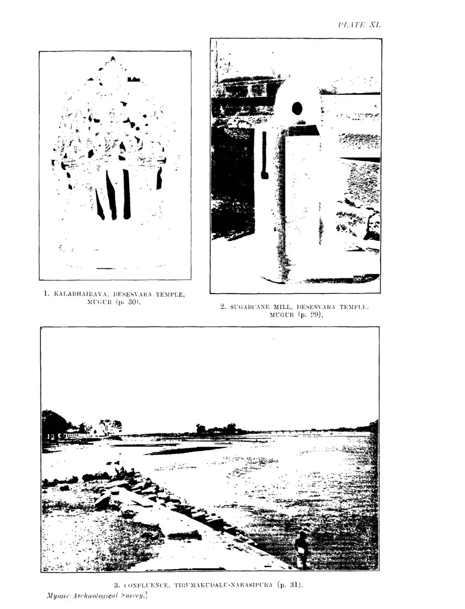
- KALABHAIRAVA, DESESVARA TEMPLE MUGUR (p. 30)
- SUGARCANE MILL, DESESVARA TEMPLE MUGUR (p. 29)
- CONFLUENCE. TIRUMAKUDALU-NARASIPURA (p. 31)
North-east —Śrī Rāma attended by his brothers and with Sugrīva and Hanumān near his feet, Sitā to his left and Vasishṭha to his right.
Around the building run the highly ornate eaves bearing images of dancing gods, etc., under the kīrtimukhas and monkeys in various attitudes.
Eaves.
The parapet has rows of amazons riding on lions, while from the corners of the eaves hang stone chains some of which have four
Parapet.
links with a pendant hanging from a cobra. The eastern kīrtimukha contains a very interesting figure of Yōgā-narasimha in pensive pose with his head supported by the left hand.
The west lintel shows Śiva fighting the Rākshasas with bow and arrow and a trident in his hands.
Inside the mahādvāra stand four pillars bearing interesting sculptures. Some of these are Vāli and Sugrīva fighting, Śiva slaying the
Other Sculptures.
elephant demon, Narasimha in different poses and about ten panels containing well executed relievo images of the Pāllegārs of Hadinād and their families. One of them, probably the single man facing south, is the builder of the structure named Mudda Bhūpāla and there appear to be three other groups, probably those of his ancestors.
The dome has eight turrets with dancing figures and a central padma pendant.
The inner part of the mahādvāra has, facing south, a Mahishāsuramardini group and, facing north, two interesting groups :—
(a) Rāma embracing Hanumān
(b) A huntress getting a thorn removed by a boy.
The date of the structure appears to be similar to that of the Gangādharēśvara temple at Seringapatam and the Tāḍapatri temple, i.e.
Date.
c. 1600.
The shrine of Gaurīśvara has been so completely rebuilt about 40 years ago that it has not much architectural value. However many
Main Shrine.
of its pillars appear to have come from the old temple of the 16th century, excepting only four which contain cylindrical shafts and thus raise a doubt about their origin. They bear inscriptions in Nāgari and Kannaḍa and perhaps come from the dismantled temple of Mūlasthā-nēśvara which is about two miles away. The linga is at present more than four feet below the ground level which perhaps is due to the fact that the debris of the old town have raised the level of the new town. Inside the present navaraṅga there are about a dozen images of stone mostly connected with Śiva Pañchāvatana and carved in comparatively recent times. But the most beautiful of these is a seated Ganēśa close to the door, which is unmistakably a beautiful piece of Hoysaḥa workmanship. Behind the main temple is a Pañchalingēśvara shrine whose pillars are somewhat interesting.
The Gaurī shrine is similar in character to the main shrine. The image of Gauri Shrine . the goddess is of the Vijayanagar period.
The other two buildings are the ratha-maṇṭapa which is in a dilapidated Mantapas condition and the śāsana-maṇṭapa.
Part II: Study of Ancient Monuments › Mysore DistrictThe Biḥigiri Hills
(Plates VII. :; and IX. 1).
The Big Sampige Tree
About 7 miles from the south-west of the Ranganātha 1 temple on the Biligiri-raṅga Hills, two miles east of the motor road to Chāmarājanagar, and about 3 furlongs beyond the Mysore border up to which access is available by a temporary motor road, there is a deep valley through which a pathway leads us to the Attikhan estate where flows a large stream named Bhārgavī. Round about, there are large numbers of sampige or champaka trees along with others and the area is darkened by a dense covering of trees. By the side of a rivulet, on its east bank, stands a gigantic champaka tree which is one of the wonders of the Biligiri-raṅga Hills. Since flood water has washed out the earth over its roots, the latter visibly form a platform close by the side of the water, the length of which is about 70 feet north to south. Above it, the gnarled mixture of trunk and roots of huge dimensions measures about 85 feet in circumference and forms the second platform out of which arises the trunk of the tree which roughly measures about 65 feet. The great branches some of which are 5 feet in diameter emerge at about 5 feet from the ground. But the height is about 130 feet. The tree bears flowers of the usual size and even smaller ones, of both the reddish and yellow types in the jātra season, i.e. , in the month of April. On the east side of the tree on the platform there are more than a hundred round-headed or cone-headed smooth stones which are worshipped as lingas. One or two of them are chiselled ones and the largest of them is about 15" in breadth.
On the north-east corner of the roots of the great tree there is a large entrance into the cave inside the roots of the tree. The entrance measures 4½' by 1½'. It has an outer chamber with an inner one and is said to be the abode of cobras. The tree appears to be several hundreds of years old and is said to be connected with the sage Bhārgava.
1. The image of Ranganātha on the Biligiri hills is not in a reclining posture as at Śiva-sanudram or Seringapatam. It is standing in samabhaṅga with the lower left hand on Kaṭi like Śrīnivāsa. (Pl. VIII. 3).
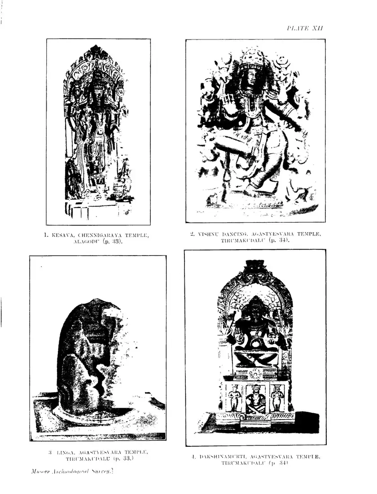
- KESAVA, CHENNIGARAYA TEMPLE ALAGODU (p. 38)
- VISHNU DANCING. AGASTYESVARA TEMPLE TIRUMAKUDALU (p. 34)
- LINGA. AGASTYESVARA TEMPLE TIRUMAKUDALU (p. 33)
- DAKSHINAMURTI, AGASTYESVARA TEMPLE TIRUMAKUDALU (p. 34)
The whole spot is a lovely one full of the beauty of virgin nature. On any early morning the road and pathway leading to the tree would offer the most interesting study for trackers. The road is full of the foot-prints of the denizens of the forest passing through it during the night, including (as was actually observed) elephants, both herds and rogues, bison in herds and single ones, sambar, deer, jungle sheep, wild swan, bears, leopards, jungle fowl, porcupine, wild dog, pythons and cobras. Varied birds perch on the tree tops. But fruit trees, monkeys and crows are rare. The insects have a world of their own. As for the trees, it is their home.
Mr. Morris of Attikhan estate has a permanent makan put up in the large clearing with a pool in its centre about half a mile inside the Mysore border.
Part II: Study of Ancient Monuments › Mysore DistrictAgara
Narasimha Temple
Situation; Mahādvāra; Garbhagriha; Navaraṅga; Main Image; Conservation
(Pl. X, 1).
Agara is a small village in the north-east of Yeļandūr Taluk. It has three chief temples of which the most important is that of Yōgānarasimha. It is situated to the west of Agara.
Curiously it faces west direct; while its mahādvāra faces north. The mahādvāra consists of three ankāpas with an inner and outer porch, the inner pillars being of the round cylindrical type, while the cubical bases have the nāga heads in the corners.
The porch pillars, however, have sixteen-sided shafts.
The main building consists of a garbhagriha and a vestibule, both of which appear to belong to the Chōla days. The garbhagriha has a most unusual shape, being round as in the temples of modern Travancore (Pl. X, 2). It has nothing ornamental.
The navaranga has a western and a northern porch and appears to have been rebuilt about 40 years ago with old materials. Its four pillars are sixteen-sided and bear sculptures on the cubical bases.
The central ceiling has three sets of corner stones with a fine pendant lotus hanging at the top.
The image of Yogānarasimha in the garbhagriha is very beautiful (Pl. X, 3). It is seated with its legs tied by a band in the yōga posture. The two front hands are freely hanging down while resting on the knees. The two back hands hold a fine chakra and a śankha, and the tōrana over the head is formed of a row of
4 creepers. The image, though open mouthed and showing the tongue and fangs, is in a peaceful mood. It has also a small Lakshmī image on its right breast. It has the third eye on its forehead. Nārada is playing on the vīṇā on the lett and Prahlāda stands to the right. The pedestal has a Garuḍa seated in padmāsana.
The image needs to be firmly fixed with ashṭabandhana . The leaking roof needs repair. The stone flooring should be cement-pointed. It is highly desirable to give the temple a compound wall.
Conservation. The Lakshmī shrine is below the ground level and is in a bad state of preservation. The image is in a good condition but smeared over with oil and coated with wax. The shrine requires to be rebuilt similar to the Narasimha shrine, though it is smaller in dimensions.
It is understood that the temple has large funds at its credit.
The Durgā Temple
Age of Temple; Outer view; Navaraṅga; Main Image; Conservation
The temple of Durgā is one of the oldest and most interesting buildings in the village. It bears all the marks of a Chōla temple of the time of Rāja Rāja the Great.
Age of Temple.
Its outer wall which is right-angled like the great temple of Tanjore has a large round cornice above which runs a frieze of horned lions with makara heads in the corners. The upper part of the walls have the usual pilasters and niches, while the octagonal tower has ornamental horse-shoe arches.
The navaranga of the temple has cylindrical granite pillars.
Navaranga.
The image in the garbhagrīha represents Durgā standing in samabhaṅga as Vaishṇavī with a lion behind her legs and an elephant head on the pedestal. The image is a fine one with thickish lower lip, a norrow waist, and large rounded breasts tied by a breast-band (Pl. IX. 2).
Age of the Temple.
The temple tower is in a precarious condition. The whole structure deserves to be carefully rebuilt in view of its antiquity and its inscriptions which almost cover up its walls.
Rāmēśvara Temple
Age of Temple; Pārvatī Image; Conservation
The Rāmēśvara temple, as usual, is to the north-east of the village. It is an old structure of the Chōla times, to which additions seem to have been made by the Hoysaļas.
Age of the Temple.
The chief figure of interest here is Pārvatī who stands in a small shrine to the left of the main shrine. She is in samabhaṅga with her hands thus disposed: abhaya and rosary, ankuṣa,
Parvati Image.
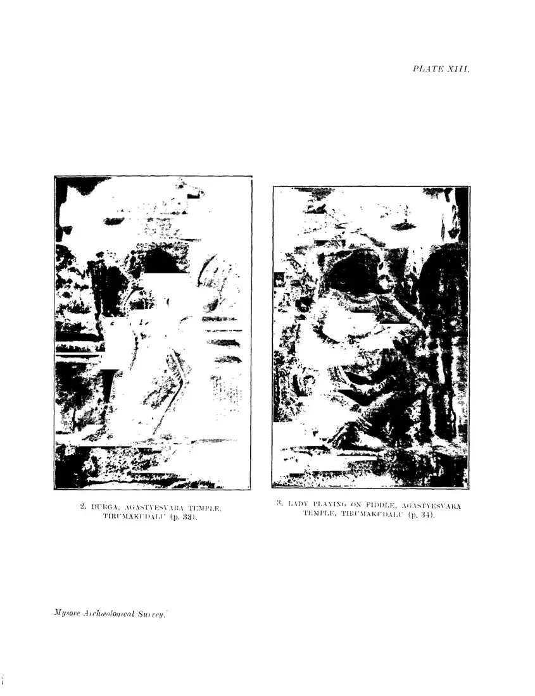
- DURGA, AGASTYESVARA TEMPLE TIRUMAKUDALU (p. 33)
- LADY PLAYING ON FIDDLE, AGASTYESVARA TEMPLE, TIRUMAKUDALU (p. 34)
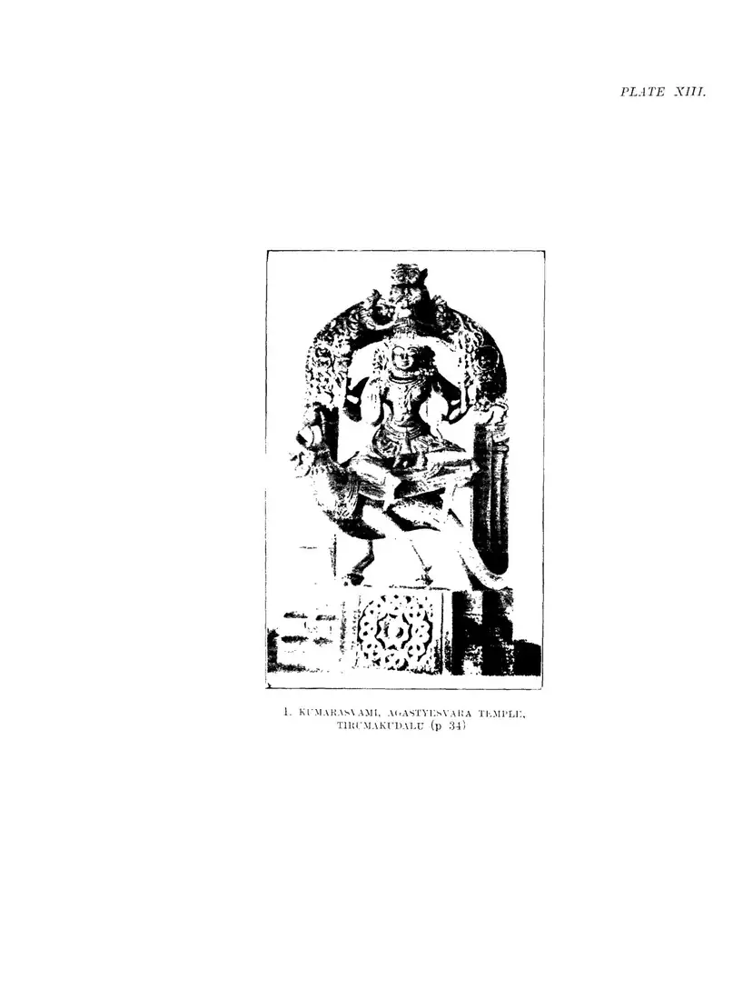
- KUMARASVAMI, AGASTYIESVARA TEMPLE TIRUMAKUDALÜ (p 34)
padma and dāna. She has no breast bands but wears a lower cloth in the Chōļa style.
The temple is badly out of repair. Perhaps it would be safer to put out of danger such parts of its walls as are out of plumb.
Conservation. In the place of the mahādvāra stand four granite jambs.
Evidently it would be difficult to find funds for repairing all the temples of the town. But something may be done to save them from ruin.
Part II: Study of Ancient Monuments › Mysore DistrictMaddūr
Chakrapāṇi Temple
History; General Description; Hall; Main Image; Conservation
About two furlongs to the west of the village stands a granite temple of
History. Chakrapāni whose garbhagrīha, vestibule and navaranga with its four cylindrical pillars are clearly the work of the middle of the 13th century as seen by the inscriptions. A new Tamil inscription was discovered on the octagonal cornice of the outer wall of the vestibule.
On the outer walls of this portion are found the ornamental pilasters and niches.
General Description The front hall called the pātālānkaṇa in the previous reports has six fluted pillars of granite with serpent-headed corners, sixteen-fluted shafts and imitation ribbed
Hall. On the west wall of the hall is a long Kannađa inscription of Vīra Bukkarāya dated Šaka 1292 (1370
A. D.). In front of the hall is a porch whose pillars have on their cubical mouldings rough relievos of gods and dancers.
The original image of the temple appears to have disappeared. It has been substituted by a much smaller one of Vishṇu, called Main Image. Nambi-Nārāyaṇa.
The temple is in a very dilapidated condition. Many portions of the outer
Conservation. wall have come down: while the inner wall on the north side is partly out of plumb.
Old Dēśēśvara Temple
History; Navaraṅga; Bull Maṅṭapa; Inscription; Conservation
At the eastern extremity of the village of Maddūr stands the old temple of Dēšēśvara which, according to Yelandūr 41 now kept
History. behind the Vīrabhadra shrine, was constructed in Šaka 904 or 982 A.D., evidently in the Ganga period. All traces of the Ganga times have now disappeared except the linga stone in whose damaged spherical top are identified Gaṇapati, Šiva and Pārvati.
The navaranga has four pillars of the round cylindrical type which bear Tamil inscriptions. It has a porch on the south, perhaps of the Navaranga . Pālļegār times. The navaranga ceiling is an old piece consisting of a flat slab divided into nine panels with Tānđavēšvara in the centre and the Dikpālakas around, and dancing Yakshas on the corner stones.
The most interesting architectural portion of the temple is the small bull manťapa facing the navaranga (Pl. IX, 3). It has four short pillars of which the south-east one bears a Tamil inscription. The pillars are from the bottom to the top cubical, octagonal with flower petals, and cylindrical with beaded hangings having interesting sculptures in the inter-spaces. Above a floral band is a vase-shaped moulding with real ribbed brackets as in the Chōļa period. This appears to be probably a Chōļa contribution.
A new inscription was discovered on the octagonal cornice of the temple to its north. It is about 30' long and is in late Hoysaļa Kannađa characters.
The temple was rebuilt with soapstone walls about six years ago. It has a good fund at its disposal. The Dēšēšvara shrine is leaky and water collects inside, since its sōmasūtra is choked up. The flooring and the roof all need to be repaired. The flooring of the prākāra is also out of repair. The towers and walls have a large number of plants growing up. These need to be removed.
Part II: Study of Ancient Monuments › Mysore DistrictMūgūr
Mūgūr contains about half a dozen temples of which three appear to be of importance, namely:--
1. Dēšēšvara.
2. Tripurāmbā.
3. Nārāyaṇa.
Dēśēśvara Temple
Histcry; Śānkarēśvara shrine; Later Improvements; Old Pillars; Porch; Wooden doorways
As usual this temple is situated at the north-eastern end of the town and has now a large enclosure.
It appears to have been constructed in four different stages. The original shrine of Dēšēšvara appears to have been a small architecturally insignificant building of one aňkaṇa built over the low natural linga of Dēšēšvara in the Chōļa times.
History.
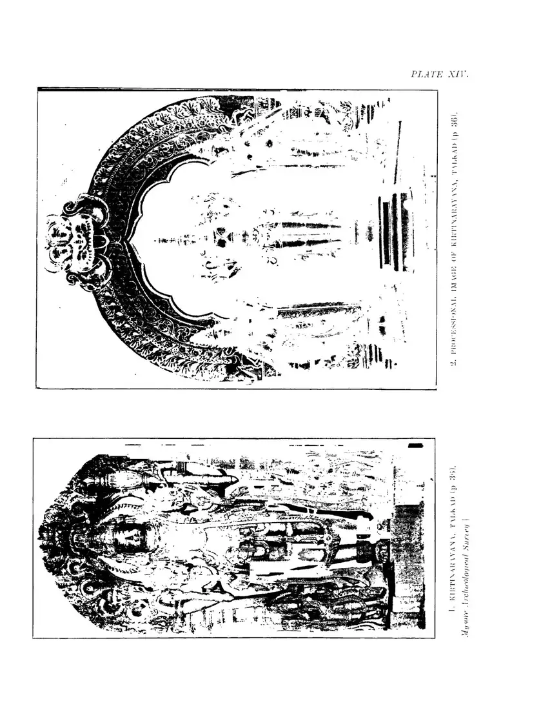
- KIRTINARAYANA, TALKAD (p. 35)
- PROFESSIONAL IMAGE OF KIRTINARAYANA, TALKAD (p. 361)
Cited in the text: p. 36 ↩
In the late Hoysaļa period, perhaps during the days of Narasimha III, the whole town must have been converted into a big agrahāra with the Dēšēšvara temple improved and enlarged by the addition of a large granite structure of Šankarēšvara built in close proximity to Dēšēšvara, which in later times was given a doorway connecting it with the navaranga of Šankarēšvara.
The Šankarēšvara shrine which bears on its octagonal cornice a long Kannađa inscription of Hoysaļa Narasimha III has on the outer wall the usual right angled pilasters with the vase and loaf-shaped mouldings and the beaded hangings with the three usual niches surmounted by boat-shaped šikharas. In the shrine stands a largish linga about one foot in diameter which is called Šankarēšvara. The navaranga contains several unimportant images, among which are Sūrya, Vishnu, Saptamātrikās, etc. The navaranga piliars are of the cylindrical type and an additional ańkaņa has been added in later times on the north side.
In the Vijayanagar period during the times of Krishṇarāya and Achyutarāya large improvements appear to have been made by the Later Improvements. Hadinād Pāllegārs and their subordinates. Among these improvements are the following:—
(1) The construction of the prākāra wall, the donor's image being carved on the south wall opposite to the south porch of the main temple.
(2) The gōpura with its mahādvāra showing about four portrait statues of local chieftains.
(3) The Garuđagamba, etc.
(4) The pañchalinga shrine with its finely carved pilasters and jambs ornamented with scroll work.
(5) The Pārvatī shrine with its standing image of Pārvatī (abhaya, padma, padma, dāna).
The oldest objects in the compound are six pillars, two near the Hanumān shrine and four in front of the kitchen. These are Chōļa pieces with the following parts: cubical base, sixteen-fluted shaft, octagonal shaft and vase-shaped moulding. Probably these belonged to the original Dēšēšvara shrine and the maņtapa in front of it.
Against the outer wall on the south side of the shrine there is a stone sugarcane mill (Pl. XI, 2).
The front porch of Šankarēšvara has been, probably in later times, extended by two ańkaņas so as to include the bull maņtapa.
Porch.
The wooden doorways of the yāgaśālā and pañchalinga shrines are finely carved pieces of the Vijayanagar period bearing various šiva lilās.
Wooden Doorways.
Kāla-Bhairava
No heading in the body: this section starts at its printed page (30).
Behind the compound in a smaller enclosure stands a small shrine containing a beautiful image of Kāla-Bhairava (Pl. XI, 1). It has a fine floral tōraṇa. The image which is about three feet high is one of the most elaborately carved in the place. It represents the god standing naked in a graceful tribhanga with a cobra girdle. His hands hold: broken sword, drum, trident and broken kapāla. The Gaṇas surround him, four on each side. There is a finely carved hound in the group. The latā tōraṇa with Yakshas in the convolutions has a lion face on top and is supported on brackets having elephants, men, yālis and makaras.
Part II: Study of Ancient Monuments › Mysore District › MūgūrTripurāmbā Temple
History; Main Image; Popularity
About a hundred yards to the north of the Dēšēsvara temple stands the temple of Tripura-sundarī, which must have originally consisted of the garbhagriha and its appurtenant portions built in the later Hoysala days.
The navaraṅga, the mukhamaṇṭapa, the mahādvāra with its Pāllegār images and the prākāra are mostly of the Vijayanagar period, rebuilt and repaired probably early in the 19th century. The gōpura has disappeared.
The main image is a standing figure of Vaishṇavī (abhaya, chakra, śankha and dāna), with the prabhāvalī carved in the same stone.
This temple, the worship of which is in the hands of Vīraśaivas, is exceedingly popular with the non-Brahmin communities and Arasus. Vīraśaivas and Vokkaligas generally dedicate particular girls to this temple so that it is an important source for the supply of dancing girls.
Opposite to the mahādvāra is built a swing manṭapa of brick and mortar which is a structure of the 19th century in the European style.
Early in the 19th century the inner parapet walls of the temple were decorated with more than a hundred turrets bearing stucco images of various deities which have been described by Mr. R. Narasimhachar 1 . These deserve close examination from the point of view of iconography and restoration like those at Nañjangūd.
Nārāṇaṇasvāmi Temple
General Description; Conservation
The temple of Nārāyaṇa stands to the west of the town.
It has a garbhagriha with pilastered outer walls, outer niches bearing tree-shaped towers, a very broad and short vestibule, and a navaraṅga of four pillars with a one-aṅkaṇa porch in front. All the pillars are mostly of granite and are cylindrical.
General Description.
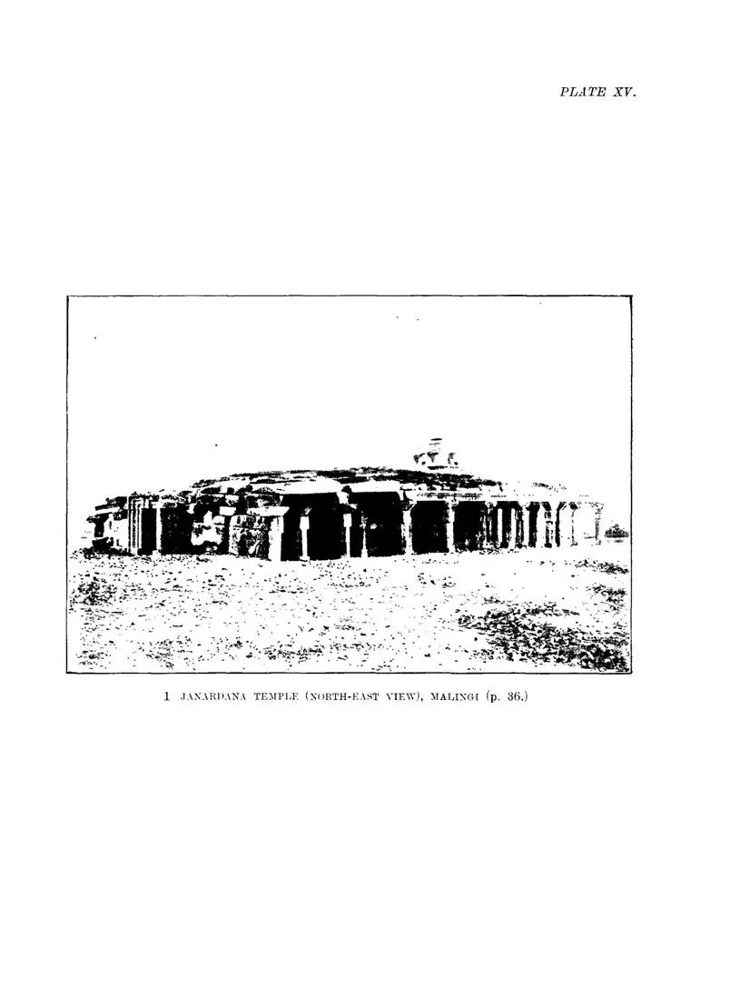
- 1 JANARDANA TEMPLE (NORTH-EAST VIEW), MALINGI (p. 36)
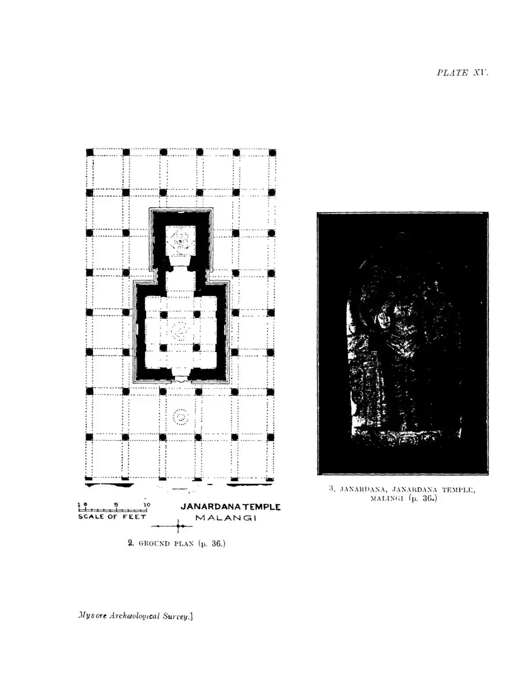
- GROUND PLAN (p. 36)
- JANARDANA, JANARDANA TEMPLE MALINGI (p. 36)
There is nothing extraordinary in this temple ; but the plan is typical of the late Hoysaļa period.
The roof is leaky and the prākāra walls of brick and mortar have cracked in many places.
Conservation.
Jain Temples
Pāršvanātha; Ādinātha; Old pillars; New Inscriptions
About a hundred yards to the south of the Tripurāntēšvarī shrine stand two ruined Jain temples dedicated to Ādinātha and Pāršvanātha.
Pāršvanātha is a fine standing image, about 4' high, with a seven-hooded cobra over his head. On his pedestal a new Kannađa inscription of early Hoysaļa times was discovered.
Parsvanatha.
The Ādinātha image is also about 4' high and is seated cross-legged. On its pedestal also a new inscription was discovered.
Adinatha.
The pillars of both the temples are of the Narasamangala variety with a cubical base and over it an octagon, a roughly shaped bell, a vase and a loaf, all in granite. Such pillars may be of the very early Hoysaļa period or even earlier.
Old Pillars.
To the south of Mūgūr on the Sante-Mārahaļli road between the 7th milestone and the Ađdahaļla crossing the road stands a vīraga
New Inscriptions. facing east with the top Kailāsa panel visible. Above it there is a five-line Kannađa inscription, about 15 inches in width and 3 feet in length. The language and letters are of about the 14th century.
Another Kannađa inscription of the same Hoysaļa period was discovered on two pieces of a rough stone slab lying in the south-east revetment at the corner of the road and the bridge. It contains 26 lines. The stone slab measures about 5' × 1½'.
Two other slabs in the revetment are said to contain inscriptions on their lower faces. Inscription stones are valuable and should not be thus misused.
Part II: Study of Ancient Monuments › Mysore DistrictT-Narsipur
(Pl. XI, 3.)
Mūlasthānēšvara Temple
History; Old Pillars; Conservation
The Mūlasthānēšvara temple is a structure of about 1300 A.D. rebuilt with old materials in the 19th century.
History.
The only interesting architectural pieces in the temple are four of the eight pillars of the navaraṅga, which have interesting shafts connecting their cubical mouldings. These shafts bear various shapes: 1 a) tooth wheel shape and thirty-two pointed (b) tooth wheel shape and sixteen pointed. 2. Thirty-two fluted with a band. 3. Thirty-two fluted with a rope band and independent connecting drops at the corners. 4. Sixteen-sided with minor pillars at the corners.
The temple is in a good state of preservation but owing to its weak foundation some of the pillars appear to have sunk. They require to be watched for further sinking. One beam of the mukhamaṇtapa is cracked and is supported by a wooden prop.
Gunjā-Narasimha Temple
History; Main Image; Conservation
The temple of Guñjā-Narasimha is a structure of about the middle Vijayanagar period, the earliest inscription being of the days of Krishṇarāya. It has been added to by the Mūgūr Arasus and by Krishṇarāja III.
The main image is a small one of Lakshṇinārasimha and not extraordinary in workmanship.
The temple is in a bad state of repair. The floods of 1924 have shaken it greatly; particularly the prākāra walls and the kaisāle verandah including the Āṇdāl shrine, are in a dangerous condition, being much out of plumb. The brick parapet is heavy as at Nañjangūd. The flooring inside the temple needs to be completely remade.
The building is not an ancient monument, but since it is an important place of worship, it deserves the attention of the Muzrai authorities, particularly because of the danger of its collapse.
Part II: Study of Ancient Monuments › Mysore DistrictĀlagōdu
Alagodu is a village about a mile to the south of T.-Narsipur. It has two temples which have both been rebuilt in the Pāllegār days with the materials of older temples and contain fragmentary inscriptions misplaced by the renovators.
Siddhēšvara Temple
The Siddhēśvara temple which faces south has an image of Bhairava which has taken the place of the damaged old linga and another of Kālī, both of the Pāllegār days. But one of the Gaṇēśas at least and probably also Mahishāsuramardinī and
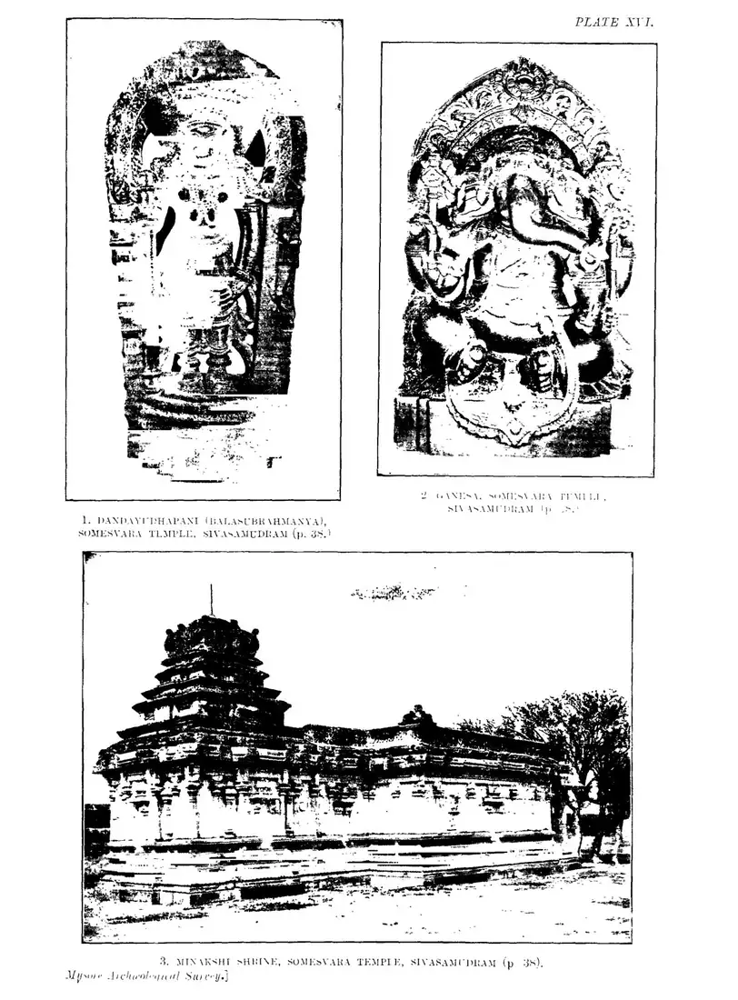
- DANDAYUDHAPANI (BALASUBRAHMANYA) SOMESVARA TEMPLE, SIVASAMUDRAM (p. 38)
- GANESA, SOMESVARA TEMPLE SIVASAMUDRAM (p. 38)
- MINAKSHI SHRINE, SOMESVARA TEMPLE, SIVASAMUDRAM (p. 38)
the four round pillars of chiselled granite with rows of hanging garlands, all belong to the Hoysala times.
Near the Durgā shrine doorway there are two inscriptions in Kannađa. One of them which is of the time of Śripurusha Gaṅga has been read by Mr. R. Narasimbachar. A new Kannađa inscription was discovered on the basement of the east wall and another of the Gaṅga times, in the ceiling of the south-east of the hall.
The temple is in a bad condition.
Chennigarāya Temple
The Chennigarāya temple which faces east is also a rebuilt one as seen by the misplaced pieces of a long Kannađa inscription on the basement cornice.
The navaraṅga and the small mukhamanṭapa have lathe-turned pillars whose bell shaped moulding has not yet fully developed. The image of Kēśava is of the usual Hoysala type and stands about 5 feet high (Pl. XII, 1).
The walls of the temple are falling fast. Both the temples are leaking and are in a bad condition.
Part II: Study of Ancient Monuments › Mysore DistrictTirumakūdlu
Agastyēšvara Temple
Linga; History of Temple; Main Temple; Outer Navaranga
The Agastyēśvara temple is perhaps the oldest temple in the neighbourhood of Tirumakūđlu. The chief object of worship is a linga said to have been consecrated by sage Agastya. It is of sandstone with its front face much worn out by water oozing up to its head and trickling down its face (Pl. XII, 3). This has now created three cup-like depressions in which water collects and overflows.
The temple has been built in at least three stages: The garbhagriha, the vestibule and the inner navaraṅga form the original Linga.
Their outer walls have the octagonal cornices, and the right angled pilasters with beaded hangings. The inner navaraṅga pillars are Main Temple. round and are of the Narasamaṅgala type. The building is very probably of the C'hōla times.
To this building the outer navaraṅga hall appears to have been added with its outer wall similar to the original walls and its square planned Draviđian pillars bearing many interesting sculptures. Among these may be mentioned the following:—
Durgā holding trident and kalaśa, wearing long coat, and dancing, (Pl. XIII, 2) accompanied by a moustached drummer wearing shorts and long braid.
5
Women dancing and playing on musical instruments like the rudra-viṇā. One lady is playing on the south Indian fiddle with a bow (Pl. XIII, 3). With this we may compare the figure of a violinist noticed at the Arkēśvara temple in Hale-Ālur 1 . This discovery of the Indian fiddle is highly important to the history of Indian musical instruments.
Arjuna shooting at the fish, etc.
On a platform to the west of the hall which appears to have been built in the Vijayanagar period are kept the following images :
Kumārasvāmi seated on a fine peacock with a peculiar design on the pedestal (Pl. XIII, 1).
Gaṇēśa with a broken trunk.
Two large dvārapālas—moustaches and muscles of the belly showing as at the Vaidyēśvara temple at Talkāđ.
Mahishāsuramardinī—a fine Hoysaļa group.
A similar Mahishāsuramardinī of the Chōļa or even of the Gaṅga period. Sūrya of rude workmanship.
A special room to the north of this hall contains the utsavamūrti. On the floor of this room a new inscription of 1399 Śaka or 1477 A.D. was discovered.
To the north-west of the main temple stands the shrine of Pārvatī. This and the other structures surrounding the main temple including the mahādvāra, belong to the Pāllegār period or the
Later Structures
Mahādvāra; Conservation
Nandi and Bali pīṭha opposite to the east door. On the octagonal cornices of the pedestal were discovered two new Tamil inscriptions of the time of Hoysaļa Viranarasimha.
In the south prākāra—
Vishṇu dancing with eight arms—abhaya (thumb broken), daṇđa, gadā. śaṅkha, chakra, padma, daṇđa (?), lamba-hasta (Pl. XIII, 2). There is a drummer on each side. The image is Hoysaļa.
Dakshiṇāmūrti, seated against the south wall of the main temple, in yōgāsana with the knees tied together (Pl. XII, 4). The workmanship seems to be of the early part of the 19th century.
Gaṇapati with trunk to right.
Chaṇđikēśvara.
Kānākshī—stone image.
Manōnmaṇidēvī—a copper image, two feet high, presented by Dalvoy Kaļale Nañjarājiah.
Vishṇu standing : abhaya, chakra, śaṅkha, dāna. (Poor work.)
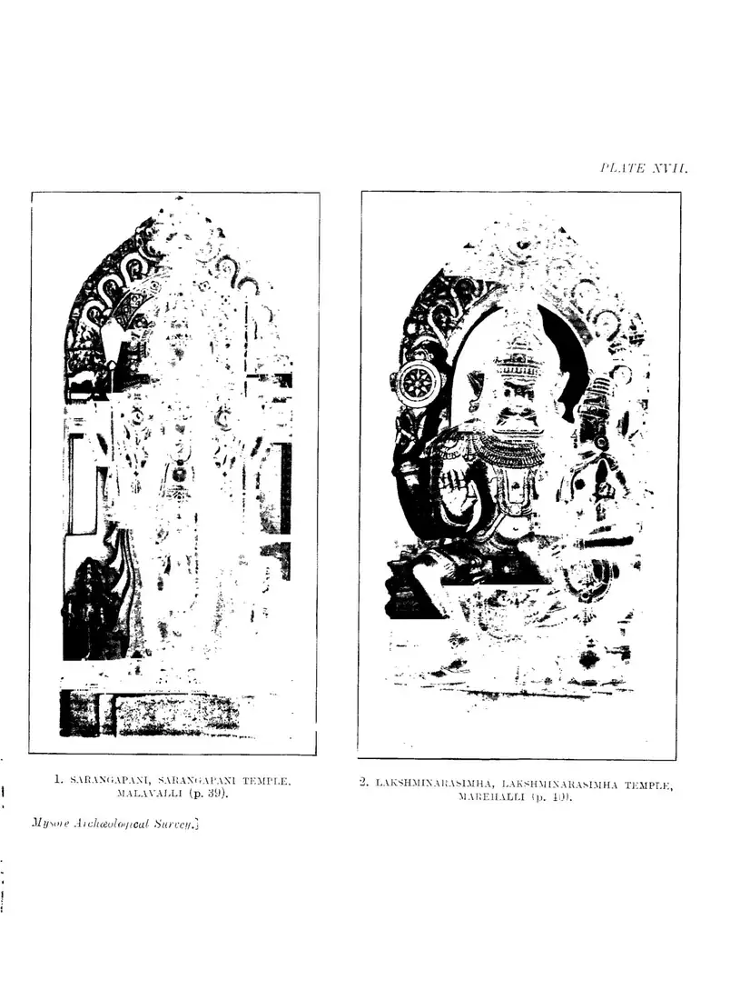
- SARANGAPANI, SARANGAPANI TEMPLE MALAVALLI (p. 39)
- LAKSHMINARASIMHA, LAKSHMINARASIMHA TEMPLE MAREHALLI (p. 40)
A small Gaṇeśa—fine Hoysaļa work.
The north mahādvāra is a large structure with a dvāramanṭapa sheltering a large bull and a Hoysaļa Gaṇeśa. In front of the dvāramanṭapa is a large tōraṇa or arch and a lamp pillar. A new inscription has been set up in the verandah of this manṭapa to commemorate the founding of a Šivakūṭa by Mr. Hāsige Sūrappa of Talkāđ in the year Prabhava which is wrongly shown as Šaka 1949 instead of 1849. The stone was laid by Sir Mirza Ismail.
This temple is an ancient structure with a famous linga and a number of valuable sculptures. It deserves to be declared an ancient monument, protected and put under Class III.
The walls have been covered over with thick coatings of chunām which should be removed. The question of lighting up the temple with electricity may be considered.
Other Interesting objects
Flight of steps; Confluence; Interesting sculptures; Vyāsarāya-mutt
Directly opposite to the Agastyēśvara temple on the left bank of the Kāvērī is a fine flight of steps leading up to a small temple of Bhikshēśvara.
The confluence of the Kāvērī and the Kāpilā is one of the most beautiful spots in the State with the temples at the three angles, the bridges spanning, and the broad river and the sand banks in between. The flights of steps all around may be reset and the revetment extended as far as possible.
In the verandah of the Gaṇeśa shrine to the north of the old peepul tree or Aśvatthanārāyaṇa-vṛiksha and above inscription No. 66 Interesting Sculptures. (revised) there is an interesting row of sculptured objects including sceptre with spiral top, bow, arrow, bent sword, buckler, straight sword or goad, flywhisk, umbrella over trident-like object, trident, a sword, fly-whisk, lamp stand.
The Vyāsarāya mutt contains three bṛindāvanas or tombs of Raghunātha Vyasaraya Mutt. Tīrtha (about 250 years old), Šrīnātha Tīrtha and Vidyāvallabhasvāmi.
In the pākaśālā is a stone group of Agni with his consort riding on a ram and a fine creeper tōraṇa with flowers overhead.
Part II: Study of Ancient Monuments › Mysore DistrictTalkād
The temples at Talkāđ have been noticed in detail in the Annual Report of this Department for the year 1932 (pp. 3-16). The beautiful Hoysaļa image of Kīrtinārāyaṇa and the processional image of the same god are both illustrated in this Report (Pl. XIV, 1 and 2).
Mālingi
Janārdana Temple
Tower; Janārdana; Later structures; Conservation
(Pl. XV, 1).
Mālingi appears to have been a Chōla agrahāra (C. 1004 A.D..). The Janārdana temple seems to have been built in two stages (Pl. XV, 2).
The original Chōla temple consists of a garbhagriha, an open vestibule and a navaraṅga of four octagonal pillars. The outer walls have octagonal cornices and pilasters with hangings and niches with non-Hoysala arches. One has a kalaśa supported by two lampstands. By the right side of the navaraṅga doorway stands an elephant.
The tower is all of granite stone and has a kīrtimukha with a tall neck and a flat square-shaped stone kalaśa.
Tower.
The main image is that of Janārdana with no consorts, with drapery showing and conical kirīṭa. His hands hold: abhaya, prayōga-chakra, thin tall śankha and gadā (Pl. XV. 3). In the same stone is carved the tōraṇa bearing a creeper scroll without figures.
Outside the temple and connected with it has been put up, later on, probably by Perumala Daṇṇāyaka. a manṭapa with one aūkaṇa all round and two on the east. The sides are open except on the east.
Later Structures.
This temple is a genuine Chōla monument dedicated to Vishṇu before the Hoysala days. It could be put into form with very little expenditure. The villagers are willing to subscribe. The temple deserves to be preserved since it is a monument of the time of Rāja Rāja Chōla. It is a pity that no pūjā is offered. The inscriptions prove the existence of Śrīvaishnavas in the place long before Śrī Rāmānuja's time.
Conservation.
Mahalinga Temple
This temple is badly damaged and almost impossible to repair.
Mallikārjuna Temple
The temple of Mallikārjuna is a Chōla structure originally of one aūkaṇa only with a large liṅga. Additions to the temple have been made in a later, probably Hoysala, period.
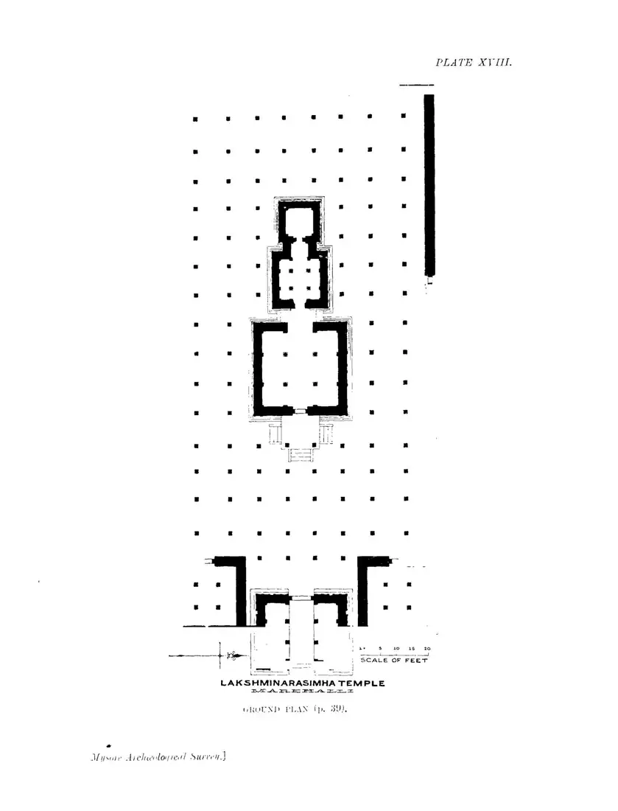
- GROUND PLAN (p. 39)
Cited in the text: p. 39 ↩
The Talkad sahukar Mr. T. S. Sadasiva Murthi is in occupation of the temple and its surroundings. He may vacate them and put them into repair.
Part II: Study of Ancient Monuments › Mysore DistrictVijāpur
Arkēšvara Temple
Situation and History; Sūrya shrine; Main Temple
About three miles east of Talkāđ is a small village called Vijāpūr near which is an old mud fort. Here, close to the road, stands the temple of Arkēšvara. It contains a large natural linga (15" in diameter) which is one of the five sacred lingas visited during the Pañchalinga festival. The original temple appears to have belonged to the Chōļa period.
Two pillars of the time, which are of black stone, stand near the Sūrya shrine which is constructed of inscription stones collected from the neighbourhood and one Hoysaļa bell-shaped pillar. Surya Shrine. The image of Sūrya is about 2 feet high and is carved along with low relief prabhāvali of one stone.
Behind the Sūrya shrine and facing the main temple is a row of four modern shrines containing four lingas of different sizes.
The main temple is a rebuilt structure of all manner of worked stones including a Gaṅga inscription in the back wall. The pillars of the navaraṅga are plain and octagonal and the small bull in the vestibule is without ornamentation except for one necklet. Main Temple.
The temple has lost its archæological character except for its inscriptions.
Part II: Study of Ancient Monuments › Mysore DistrictŚivasamudram
The island of Šivasamudram has since about 1805 been under the administration of the Jahagūrdar of the place. It contains two important temples, namely, the Raṅganātha temple to the west of the old town and the Sōmēšvara temple to the north-east.
Sōmēšvara Temple
History; Mahādvāra; Main Shrine Rebuilt; General Description; Images; Porch; Mīnākshī Shrine; Maṅṭapas
On the octagonal cornice of the basement of the Sōmēšvara temple is a long Tamil inscription of the days of Ballāļa II. History.
The Sōmēšvara temple contains a large compound enclosed by a high wall with an eastern walled up mahādvāra and a western one which is in use. The latter is more elaborately worked and resembles in workmanship the great mahādvāras of Mahadvara.
Chidambaram and elsewhere with their round and fluted pilasters, their ornamented niches and the vertical stone bands rising up above multi-storied turrets. Neither mahādvāra has the brick tower, but has, instead, a couchant bull on top which is, of course, a 19th century work.
The shrine of the god has been completely rebuilt in later times so that the basement inscription on the octagonal cornice is greatly disturbed, while the walls of the navaraṅga, particularly, are built of brick and mortar.
General Description. The building contains a garbhagriha with a large linga, a vestibule with a short horned bull, a navaraṅga of Draviđian pillars and a porch of one ankāṇa in breadth and three ankāṇas in length with Draviđian pillars.
Images. There are kept the images of Sūrya and Chandra, a beautiful figure of Ganēśa (Pl. XVI, 2) of the Hoysalā period, and some other images including a fine stone image of Bālasubrahmaṇya as Daṇāyudhapāṇi (Pl. XVI, 1).
The flight of steps to the porch in front is supported by two lion heads from which gigantic creepers are emerging.
Minakshi Shrine. A well preserved original structure is the temple of Mīnākshī (Pl. XVI, 3) whose walls have round and other cornices of the Chōlā type and ornamental pilasters and niches.
Mantapas. On the way from the Sōmēśvara temple to that of Raṅganātha there are two manṭapas one of which is octagonal and the other, square. The former could be restored with little cost.
Raṅganātha Temple
History; Raṅganātha; Other Images; Conservation
The Raṅganātha temple which must also have been built in the days of the Hoysalās is a disappointing structure which appears to have been almost completely rebuilt in the 18th or 19th century.
Ranganatha. The Raṅganātha image which is about eight feet long is reclining in the sleeping pose on a conventionalised Ananta figure with seven hoods and has a small image of Kāverī near his feet. The god's image is a good one, though not as good as that at Seringapatam. (Pl. I Frontispiece)
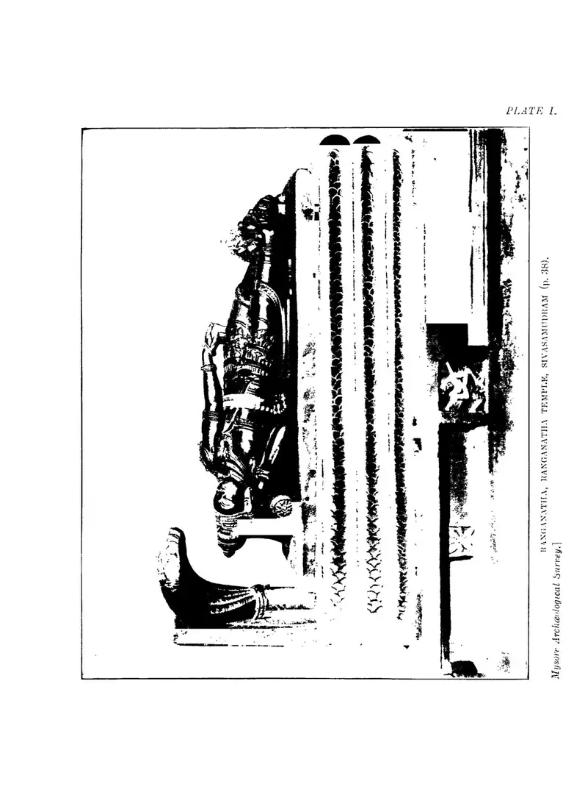
- RANGANATHA, RANGANATHA TEMPLE, SIVASAMUDRIAM (p. 38)
Cited in the text: p. 38 ↩
Other Images. The other images in the navaraṅga are Takshaka, the serpent king, a Rāma group, the Ālvārs, Rāmānujāchārya, etc. In the compound of the Rāṅganātha temple are kept the images of the first jahagīrdār and his lady, two portrait
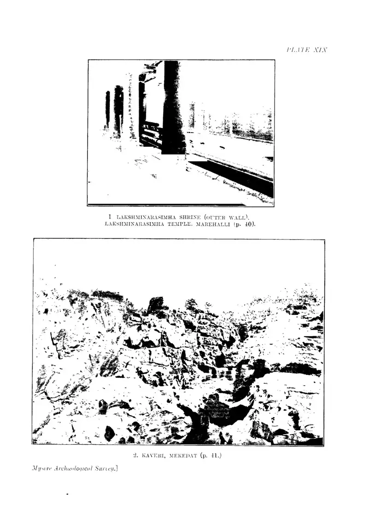
- 1 LAKSHMINARASIMHA SHRINE (OUTER WALL) LAKSHMINARASIMHA TEMPLE. MAREHALLI (p. 40)
- KAVERI, MEKEDAT (p. 41)
images which do not do credit to the artist who executed them. To the south-east of the Raṅganātha temple stands a large stone relievo image pointed out as Sugrīva, while to its south is an image of Hanumān.
The temple is in a bad state of repair. A beam above the garbhagrīha doorway and one above the vestibule doorway are cracked.
Conservation. The latter needs immediate support. The walls are mostly of brick and it is difficult to surmise where the old stone walls have gone. Both the manṭapas in front are damaged and could be set right with little cost. The flooring is being repaired.
It is understood that the Government of Mysore have donated three villages viz. , Pūrigāli, Kaggalīpura and Honagaļī and that the accumulated funds of the temples are said to amount to a lakh of rupees. With this amount available for permanent improvements and the large income for annual expenditure, both the temples and the whole neighbourhood could be greatly improved and the place made fit for the visits of the pious public.
Part II: Study of Ancient Monuments › Mysore DistrictMalavaļli
Šārṅgapāni Temple
Situation and History; Main Image; Other Images
In the fort of Maļavaļī town stands the temple of Šārṅgapāni, an old Hoysaļa structure of which only the inner walls of the garbhagrīha and the vestibule remain. All else is rude work of the Vijayanagar period.
Over the lintel of the vestibule doorway is a Paṭṭābhirāma group in stucco. The chief image (5 feet high) is a fine one in samabhanga
Main Image. and holds: conch, arrow, unstrung bow and chakra. Srī and Bhū stand on either side of him. Over his head is a serpentine tōraṇa with the ten avatārs around. (Pl. XVII, 1)
In the navaraṅga are kept the images of Nammāļvār and Šrī Rāmānuja. In the north cell are several metallic images one of which is
Other Images. Varadarāja, the utsavamūrti of the Narasimha temple at Mārēhaļī.
Part II: Study of Ancient Monuments › Mysore DistrictMāreha!ļli
Mārēhaļī appears to have been an old agrahāra town built in the days of Rāja Rāja Chōļa and subsequently endowed by Hoysaļa and Vijayanagar rulers.
Lakshmī-Narasimha Temple
Description; History; Main Image; Conservation
The original temple appears to have consisted of a garbhagrīgha, an open shallow vestibule a four-pillard navaraṅga, a narrow
Description. passage with flights of steps to north and south and a mukhamanṭapa. (Pl. XVIII)
The basements of these structures contain inscriptions referring to Rājāśraya identified by Mr. R. Narasimhachar with Rāja Rāja.
History. An endowment made by Vishṇuvardhana Hoysaļa is recorded on the round cornice. The outer wall has a large round cornice as at the Rājarājēšvara temple at Tanjore, garlandless pilasters and a cornice bearing lions (Pl. XIX, 1). The original short Chōļa pillars are still found in the vestibule. Others of their set have been used for the small Šiva temple.
The present navaraņga and mukhamaņtapa with their cylindrical pillars as also the pātāļānkaņa with its more than twenty similar pillars and the old navaraņga porch appear to belong to the late Hoysaļa days. This Hoysaļa restoration corresponds with the construction of the Amṛitēšvara temple.
To this Hoysaļa structure was added the prākāra and mahādvāra by Vijaya Bukka Rāya (II) of Vijayanagar and in the later Vijayanagar days the other structures round about were built, including perhaps the pond, etc. The small liņga shrine to the north of the tank, however, contains early Chālukyan pillars.
The main image of Lakshmīnarasimha is a beautiful figure (Pl. XVII. 2). The tōraņa and image are both of one stone and the former is of the serpentine type with the ten avatārs of Vishṇu on the edge. The image is seated in sukhāsana with Lakshmī on his lap. Though the mouth is open, the face is peaceful. The god's hands are thus disposed: abhaya, chakra, šankha and holding Lakshmī's left arm. Only short drapery is worn by both. Lakshmī holds a lotus in her left hand and a kalaša is placed near her foot which rests on a padma. The god has a small knob on his forehead, which perhaps represents the phālāksha. It is not certain if this image could be a Chōļa piece. If it is not, what happened to the Chōļa image? If it is, then the Hoysaļa sculptors inherited their traditions largely from the Chōļas.
This temple is a large and old one fit to be included as a protected monument and put into Class III for conservation. The roof and floor are in need of renewal. Electric lighting may also be installed and the approach improved. Many of the votaries are said to be rich and may be able to contribute towards the restoration.
Amrītēšvara Temple
Situation; Description; Outer wall
The Amṛitēšvara temple which stands close to the main road appears to be a Hoysaļa-Draviđian structure of granite.
Situation.
It has a garbhagrīha with a medium sized liņga, a vestibule, and a navaraņga of four cylindrical granite pillars. There is a
Description.
Sūrya image in the navaraņga. There is a doorway to the south.
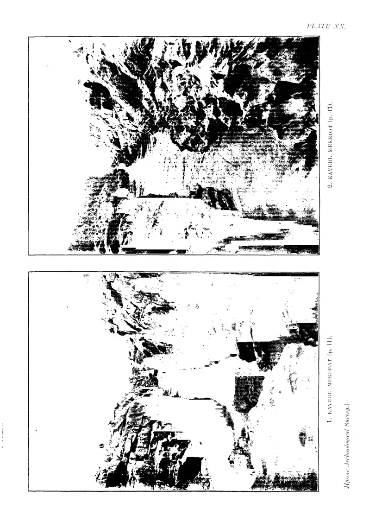
- KAVERI, MEKEDAT (p. 11)
- KAVERI, MEKEDAT (p. 41)
Cited in the text: p. 41 ↩
The outer walls have the octagonal cornice, the garlandless square pilasters and the niches with lotuses in the canopies above them.
Outer Wall.
Part II: Study of Ancient Monuments › Mysore DistrictMēkēdāt
Confluence; Šiva Temple; The Kāvēri at Mēkēdāt; Pits in Rocks
About 15\frac{1}{2} miles to the south of Sātanūr in the hilly country bordering on the Salem District, the Arkāvatī and the Kāvērī have their confluence or saīgam . The Arkāvatī with its sandy bed offers a contrast to the rocky bed of the Kāvērī and looks tiny by its side. There is a Third Class Travellers' Bungalow with a vegetarian kitchen.
To the south of the kitchen stands a small temple of Šiva built of flat thin bricks of the 18th century over a smallish linga. There is nothing archaeologically remarkable about the temple. In front of it near a headless bull stand a number of lingas and other images like Sūrya, etc.
A pathway leads from the saīgam across the Arkāvatī and by the left bank of the Kāvērī east and then south to Mēkedāṭ which is about three miles away. Here the Kāvērī (Pl. XIX, 2) has cut for herself a way through a hard rocky basin (Pl. XX, 1 and 2). In the middle of the basin a long natural canal has been cut which is between 25 and 40 feet wide and perhaps more than 50 feet deep in many places. In one place a rock projects over the stream almost to its middle from the left bank. It is said that on the opposite bank too there was, some years ago, another projecting rock and that even goats could leap across. Hence the name Mēkedāṭ. Now only one half of this wonderful sight remains.
It is also remarkable that the water flowing fast has drilled by means of pebbles pits in the hard rocky bed by scores and even to the depth of 15 or 20 feet. Sometimes the rushing water has found an outlet through a side wall giving the pit the appearance of a kaṇaja . From the overhanging rocks bee-hives hang, while pigeons and larks have their nests in the clefts. This is a very interesting natural scene and would come as a surprise to many who see the Kāvērī as a slow flowing stream in the Madras Presidency. The overhanging rock and the boulders to its north are reached with some difficulty. It is advisable that sure footed people only should attempt the descent to the basin.
Pits in Rocks.
Kabbāl
The hill fort
(Pl. XXI, 1).
The numbers given below refer to the points of interest that we come across as we climb up the hill of Kabbāldurga (Pl. XXI, 2).
1. Path from Kabbāl village.
6
2. Kōtīšvara temple—This is an old Chōła building, greatly dilapidated, the outer wall having almost fallen out. A round lamp pillar stands in front.
3. First fort wall and gate. The wall is made up of size stones and rubble with no masonry. The bastions are right-angled. The earthen parapet walls still stand in a few places. The first gateway is a small one with only two pillars and a lintel piece.
4. Ruins of the second fort wall. The gateway has now disappeared. It appears to have been of bricks measuring 9" × 5" × 2". The pathway here is paved with irregular stones.
5, 6. Third fort wall—Nearby are about a dozen steps cut in a single rock.
7. Water tank—It is now dried up. The inner face of the tank is of bricks and the outer face is of stone.
8. About 200 roughly cut steps lead up the side of the south-eastern tail. The steps are fit to be negotiated with only bare or rubber-soled feet.
9. Fourth fort wall—This has a small diddi-gate or sally port supported by a wall on either side. Just behind it is a hollow in the rock for collecting the water.
10. The pathway leads up the bare stepless face of a rock at an incline of about 45°. It is a wonder that in the days past even royal prisoners and their families who were intended for imprisonment on the hill were led up this rock.
11. Fifth fort wall and gate.
12. Totṭalu metṭalu—This is a flight of about 30 large steps cut out of solid rock, perhaps for the use of the dōļi-bearers.
13. Sixth fort wall made up of thin bricks and mortar.
14. Granary—This is a building constructed of flat broad bricks (9" × 6" × 1½"). The walls about 60' long and 50' broad are plastered and the roofs have fallen in. The building was the granary for storing in rāgi. By its side is another similar building with troughs for storing in ghee and oil. Near it is a natural pool of water between the rocks.
15. About 50 yards to the west of the granary is an underground cleft covered over with stone slabs and converted into a narrow and high drain which overlooks a precipice more than about 600' in height. It is said that in the rude old days a yāta or swing board or see-saw was kept here from the end of which prisoners and corpses were hurled down the precipice.
16. On the way to the temple on the left stands an old magazine built of flat broad bricks whose vaulted roof is supported by four arches.
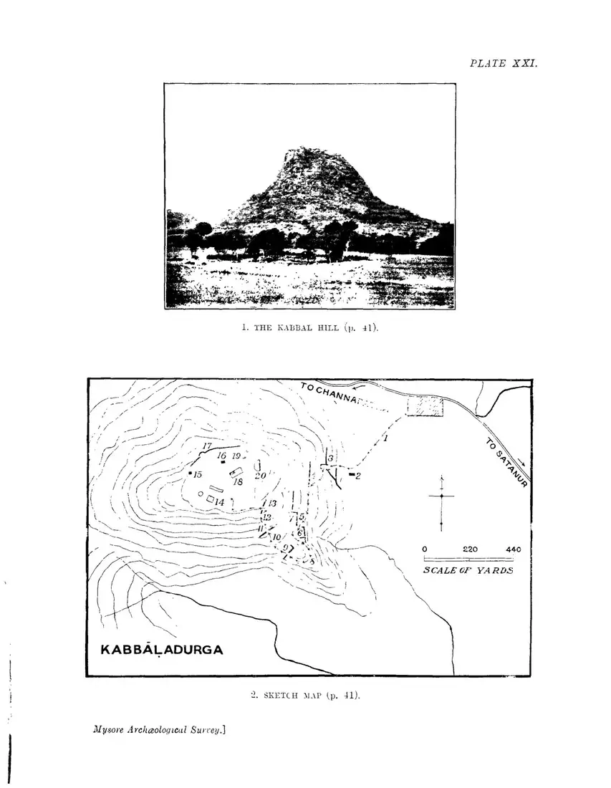
- THE KABBAL HILL (p. 41)
- SKETCH MAP (p. 41)
The building was perhaps also a guard room. It was probably built during Hyder's days.
17. To the west of the above extends a stone fort wall (seventh) across a small valley, perhaps built for guarding access to the top from the west.
18. To the south of the temple and close to it is a large compound (about 200 \times 100 yards), the lower part of its wall being of rubble and the upper part, of earth. In its centre are the ruins of a structure which must have been the palace.
19. At the peak of the hill stands a small and architecturally insignificant temple of Bhimēṣvara. The old structure of granite slabs and pillars consisted of a garbhagrīha containing an oval-topped broken linga and two later images of Gaṇēṣa and a navaraṅga of four roughly chiselled octagonal pillars whose rudely executed ribbed brackets suggest the late Vijayanagar days. In later days, perhaps in the 18th century, the walls were repaired with flat broad bricks and the west anikaṇa of the navaraṅga was walled in to make a vestibule whose doorway was adorned with a lion faced arch bearing a vīrarekha and a pair of plaster dvārapālas. A cylindrical lamp pillar lies in front of the temple. It perhaps belongs to the temple porch.
20. Close to the temple to the north-east is a small rocky trough which was the source of water supply to the temple. To its east is a large rocky pond about 40 yards in diameter which was the chief source of water supply to the hill.
By the side of the brick wall on the way to the right, is a large cave full of the bones of cattle and buffaloes. Probably all waste bones were thrown here in the Muslim days. A large quantity of these bones are said to have been removed by a party of Tamilians about 7 or 8 years ago.
Kabbālammā temple
Situation; History; Kāli; Inscription
By the road side near the village of Kabbāl and just behind the Village
Situation. Pañchāyet hall stands the temple of Kabbālammā mentioned in the inscriptions as Kālīkādēvi.
It is a stone structure of the Pāllēgār days, the last addition being the stone door-frame of the garbhagrīha which bears the date 1929 A. D.
The image of Kālikā is a modern one, holding a sword in one of the hands. To
Kali. its left, facing south, is a rude stone image of the same goddess which appears to be the older one.
Directly behind the temple and also to its west stand a number of vīragals
Inscriptions. some of which bear inscriptions.
6 4
Part II: Study of Ancient Monuments › Mysore DistrictKānkānhaļli
Ranganātha Temple
Description; Navaranga; Minor shrines; Main Image; Metallic Images
The temple of RaŃganātha is a structure of medium size and of the time of Jagadēvarāya with a garbhagrīha (without pradakshiṇā), a vestibule, an additional aŋkaṇa in front of it and a four-pillared navaraṅga.
Description.
On the cubical mouldings of its octagonal pillars, in the navaraṅga, are to be found carvings of Narasimha, Vālī, Sugrīva, Krishṇa, etc.
Navaranga.
The stone images of Vishyaksēna and the Ālyārs and a metallic set of Kōdaṇdarāma, Lakshmaṇa and Sitā are kept in the navaraṅga. The mukhamaṇtapa has pillars of almost the same character.
To the right of the main shrine is a small independent shrine which contains a poorly worked image of Padmanābha called RaŃganātha
Minor Shrines.
which was prepared by Venkatappa of Dēvanaha!li about 30 years ago. In the shrine on the left is the image of Lakshunī which is in a seated posture. The workmanship of this image is also poor.
The main image in the RaŃganātha temple is a poorly carved figure of Śrīnivāsa. The pedestal is a long one indicating that there was originally an actual RaŃganātha image. Evidently it has disappeared.
Main Image.
There are a number of metallic images consisting of a Śrīnivāsa group, a
Metallic Images.
Varadarāja group (Janārdana) and a Kōdaṇdarāma group.
There is nothing of archæological importance in the temple.
Part II: Study of Ancient Monuments › Mysore DistrictMoļagālu
Mahadēvēšvara Temple
Situation; General Description; History; Garbhagriha; Importance
Directly to the east-north-east of Kānkānha!li on the left bank of the river stands the little village of Molagālu in which is built the temple of Mahadēvēšvara.
Situation.
The structure contains a garbhagrīha, a closed vestibule, an open vestibule and a navaraṅga of square-planned plain pillars and a narrow mukhamaṇtapa.
General Description.
Evidently the temple belongs to the 14th century as suggested by an inscription of about 1360 A.D. standing opposite to the temple.
History.
In the garbhagriha is an oval topped linga of medium size which is out of position. It needs to be reset. Here also are kept the images of Tāṇdavēśvara, Chandraśēkhara and Pārvatī. The last is an image of the late Vijayanagar period in a standing posture and holding : abhaya, padma, padma and dāna.
This is the only Śiva temple in Kānkānhaļli. There is nothing archæologically noteworthy except the two inscriptions standing in front of the temple.
Importance.
Part II: Study of Ancient Monuments › Mysore DistrictMysore City
Mural Paintings at the Jaganmohan Palace
Situation; General Description
The western wing of the second floor of the Jaganmohan Palace, Mysore, consists of a large central hall measuring about 45' × 25' and two rather narrow rooms, one to the north and the other to the south, each measuring about 25' × 10'. The eastern walls of the two side rooms and all the four walls of the main hall have paintings of varied description and evidently belonging to about 1861 A.D. when the palace was constructed by His Highness Krishṇarāja Wađeyar III.
Situation. The middle panel of the western wall of the hall has the painting of the Santānāmbuja or Lotus Progeny which details in an artistic device the genealogy of the Mysore dynasty of kings. To the right and left of this panel are painted the portraits of Indian and foreign rulers, contemporary and otherwise, as also those of the nearest relatives and some of the notable officers under the employ of the Mahārāja Krishṇarāja Wađeyar III, with descriptive legends in Kannađa. The upper sections of the north, east and south walls represent in a long frieze the Jambūsarāri procession of the Vijayadaśami festival. The lower extreme sections of the east wall have paintings of the sacred cows of the state and of two well decked damsels of whom the one on the north is called Sarvvachittaraṇjini and the other on the south Sarvāṅgasundarī. The lower middle section of the same wall has some hunting scenes painted on it. The lower sections of the south and north walls contain besides a few portraits of Mysore officers, several illustrations of the Indian chess puzzles with appropriate labels in each case. The eastern wall of the northern room details in a ' Kalpadruma ' or 'Tree of Plenty' device the large family of the Mahārāja, while the corresponding wall of the southern room depicts a highly interesting Vasantōtsava or colour splashing festival.
The Paintings
The Lotus Progeny
At the bottom of the middle panel of the west wall is painted a two-handled kalaśa or nectar vase which has a crescent-shaped mouth significant of the Lunar race from out of which the Mysore dynasty is shown as springing in the form of a highly variegated and single-leafed lotus plant full of filigree decoration and arabesque against a blue background and consisting of as many buds as the number of the rulers, the buds being linked one to another by brown leafy indicators in the order of the succession of the kings. Where the leaf terminates three horizontally running circular panels are drawn representing Chāmuṇdā, the patron deity of the dynasty, in the middle panel, flanked on the right by a human-faced linga and on the left by the god Krīshṇa as a baby on a banian leaf afloat on the 'Milky Ocean.' In the right upper field is Sūrya and in the left one, Chandra ; while on either side are Gandharvas either playing on musical instruments or showering flowers on the Lotus Progeny.
The wall is pierced by four windows, a pair on each side of the Santānāmbuja. The space between each pair has paintings of standing figures of the soldiers consisting of swordsmen and musketeers in different costumes. On either side of the kalaṣa are groups of heralds and bearers of the Mysore royal insignia symmetrically arranged as follows:—
Boar, Garuṇadhvaja, Hanuunadhvaja, Matsya, Vyāla (trunked lion), Makara, Gaṇḍabhēruṇḍa, Sālṣva, Paraṣu, Sūryadhvaja, Sūryapāne, Lion, Ankuśa, Chakra on the right and Śankha on the left, Chatra, Chāmara, and a pair of Ēṭupāvaḍe.
On the right lower end is the third royal elephant Vijayadhvaja ( ಭನೆಯ ಪಟ್ಟದ ಅನೆಯ ವಿಜಯದ್ವಜ ) and on the left lower end is the sixth royal horse Jayamārtāṇḍa ( ೬ನೆಯ ಪಟ್ಟದ ಕುದುರೆ ಜಯಮಾತರ್ಗಾಂಡ ), each standing under a white royal umbrella.
The heralds hold two kinds of staves: (1) Long, with knobbed head like the Maṇia's staff (2) Short with bent head like the hockey bat. The latter is called kaṭṭige . All the figures are dressed in the Moghul fashion with differently coloured long coats, dāvali , kammarband and pāgu . Some of the figures are in reverential attitude with crossed hands.
The crescent mouth of the kalaṣa has the following inscription in Kannaḍa characters and Sanskrit language :—
1. ಶ್ರೀ ಚಾಮುಂಡಾವಿಷ್ಠುಶಿವ | ಸರ್ವಸಿರತ ಚೇತನಾಂ | ಶ್ರೀ
2. ಮತ್ಸರ್ನಾಟ ರಾಜ್ಯಶ್ರೀ | ಮಕ್ಷೀಶೂರ ಮಹೀಧುಜಾಂ | ಚಂದ್ರವಂಶ
3. ಯದು ಕ್ಷೃಾದ್ಯ | ತ್ಯುರಾಂಭೋಢಿ ಕಿಮತ್ಸಿಷಾಂ | ವಸುದೇವಾದಿ ಧುಷಾನಾಂ
4. ಸಂತಾನ ಸರಸೀರುಹೆ | ಜಗನ್ಮೋಹನ ಬಂಗರ್ಯಾಂ | ಸುಧಾಸೌಧ ಸರೋವರೆ | ಅಸುಧಾರಾಡ್ಯ ಸೇನಾಂಗ ಭಾವ ಚಿತ್ರಂ ವಿರಾಜತೆ||—
Among the portraits on the Santānāmbuja the conspicuous one depicting Krīshṇarāja Waḍeyar III is singularly drawn and unlike others, in an ornamental square the frame whereof is worked with leaf decoration interspersed with pellets at the corners and rosettes in the middle of the sides.
All the other portraits are worked in more or less the same way with Kannaḍa legend in each case. There are 42 portraits in all painted, of which No. 55 depicting Vasudeva is the earliest. The right half of the progeny lotus contains figures of the Paurāṇic rulers of the dynasty up to No. 74 which is the figure of Rājadēvarāya. Number 75 Ādi-Yadurāya begins the list of historical personages in the middle of the lowermost row of the lotus buds. The succeeding rows are arranged in boustrophedonic rows proceeding from the bottom upwards. Descriptive legends in Kannaḍa regarding the figures are given in the fields opposite the seated king and below.
The posture represented is the same for all the figures excepting only for No. 56 which depicts Lord Kṛishṇa sitting on his throne embracing his two queens. When we look at these figures, we are reminded of Mughal paintings. Most of the kings sit with rose in one of their hands, the other hand resting either on the couch or on the cushiou. Numbers 75, 83 and 86 are seated with swords in their right hands, perhaps to indicate that they were the real founders of the kingdom. The chāmara-bearers, two in each portrait, invariably stand behind the throne, attending upon the kings. The head-dress of the kings from No. 90 onwards is different from that used for the earlier kings. The latter terminates in a knot at the back of the head. All the kings are dressed alike with spotted long coats and decked with the same ornaments in the conventional way. Only the whiskers they wear are, here and there, introduced with some variety.
The list of the rulers immediately connected with the Mysore dynasty as given here from No. 55 to 74 closely follows the traditional genealogy given in the Bhāgavata and is as follows commencing from the right hand top.
55. Vasudeva.
56. Dark-complexioned Kṛishṇa.
57. Pradyumna.
58. Aniruddha.
59. Vajra.
60. Pratibāhu Rāja.
61. Subāhu.
62. Ugrasēna.
63. Śrutasena.
64. Yaduvīra.
65. Bhadrasēna.
66. Sahasrajitu.
67. Bṛihatsēna.
68. Bṛihadbhanu.
69. Aparājit.
70. Pradyōtanarāja.
71. Sumitrarāja.
72. Vasumitrarāja.
73. Bhadrāsyarāya.
74. Rājadēvarāya.
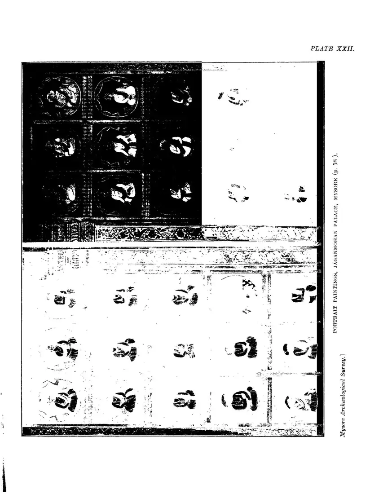
- PORTRAIT PAINTINGS, JAGANMOHAN PALACE, MYSORE (p. 58)
75. This begins the list of historical rulers.
King Ādi-Yadurāya is seated in vīrāsana to right.
Kannaṇa legend—Right field :—
1. ೧ನೆ ಪಟ್ಟ ||
2. ರಾಜದೇವಪುತ್ರ
3. ಯದುವಂಶಜ ಅದಿ
4. ಯದುರಾಯರು || ಶಾಲಿ
5. ವಾಹನ ಶಕ ೧೨೯೩ನೆ ಸಾ
6. ಧಾರಣ ಸಂವತ್ಸರದ
7. ಮಾಘ ಶು ಬಿಲ್ಲು ಜನ
8. ಸಿ ದ್ಯಾರಕಿಯಿಂದ ದ
9. ಕ್ಷಣ ದೇಶಕೆ ಬಂದು
10. ೧೩೨೨ನೆ ಪ್ರಮಾಧಿ ಸಂ।
Lower field:—
11. ವೈಶಾಖ ಶು ೫ ಸೋಮವಾರದಲ್ಲು ಶ್ರೀಚಾಮುಂಡಾ ಶ್ರೀಕಂಠೇಶ್ವರ
12. ಪ್ರಸಾದವಂ ಪಡೆದು ಶತ್ರುಗಳಂ ಜೈಶಿ ಮಹಿಶೂರು ಸಂಸ್ಥಾನದೊಳ್
13. ಪಟ್ಟಾಭಿಷಿಕ್ತರಾಗಿ ಅನುಜ ಕೃಷ್ಣರಾಯರೊಡನೆ ಅನೇಕ ಧ
14. ಮರ್ಗಗಳಂಮಾಡಿ ಅಳಿಕೆ ವರುಷ ೨೪ ಮಾಸ ೩ ದಿ
15. ನ ೫ ಪತ್ನೀರು ೨ ಪುತ್ರರು ೨
Note. —Only one queen and two sons are mentioned in the Annals of the Mysore Royal Family.
76. King Hiri Beṭta Chāmarāja Vaḍeyar seated to left.
Kannaṇa legend—Left field :—
1. ೨ನೇ ಪಟ್ಟ ||
2. ಅದಿ ಯದು
3. ರಾಯ ವಡೆಯ
4. ರ ಪುತ್ರರು ಹಿರೀ
5. ಬೆಟ್ಟ ಚ್ಯಾಮರಾ
6. ಜ ವಡೆಯರು ಶ
7. ಕ ೧೩೩೧
Lower field:—
8. ನೆ ನರ್ವಧಾರಿಸಂ | ಮಾಘ ಶು ೬ಲ್ಲು ಜನಿಶ ೧೩೪೬ನೆ ಶೇಳಭಕ್ತತುಸಂ।
9. ಶ್ರಾವಣ ಶು ೧೦ಲ್ಲು ಪಟ್ಟಾಭಿಷಿಕ್ತರಾಗಿ ಅಳಿಕೆ ವರುಷ ೩೫
10. ಮಾಸ ೫ ದಿನ ೧೮ ಪತ್ನೀರು ೪ ಪುತ್ರ ೧
Note. —Only one queen and one son are mentioned in the Annals of the Mysore Royal Family. The term Vaḍeyar is affixed to the names from this number.
77. King Thimmapparāja Voḍeyar I.
7
Kannada legend—Right field :—
1. ಖನೆ ಪಟ್ಟ || ಹಿ
2. ರೀ ಬೆಟ್ಟ ಚ್ಯಾಮರಾ
3. ಜ ವಡೆಯರ ಪು
4. ತ್ರ ವಂಮಡಿ ತಿಂಮಪ
5. ರಾಜ ವಡೆಯರು
6. ಶಕ ಗ್ರಹಿಸಿನೆ ಪ್ರ
Lower field:—
7. ಮಾದೀಚ ನಂ | ಅಶ್ವೀಜ ಬ ಸಿಲ್ಲು ಜನಿಶ ಗ್ರಹಿಗಾನೆ ಬಹುಧಾನ್ಯ
8. ನಂ | ಮಾಪ ಬ ಸಿಲ್ಲು ಪಟ್ಟಾಭಿಷಿಕ್ತರಾಗಿ ಅಳಿಕೆ ವರುಷ
9. ಗ್ರಹ ಮಾನ ೨ ದಿನ ೨೮ ಪತ್ನೀರು ೩ ಪುತ್ರ ೧
Note. —Only one queen and one son are mentioned in the Annals.
78. King Hiri Châmarājarasa Vađeyar seated to left.
Kannada legend—Left field :—
1. ೪ನೆ ಪಟ್ಟ || ವಂ
2. ಮಡಿ ತಿಂಮಪ್ಪರಾ
3. ಜವಡೆಯರ ಪು
4. ತ್ರ ಹಿರೀ ಚಾಮರಾ
5. ಜರನ ವಡೆಯ
6. ರು ಶಕ ಗ್ರಹಿಸಿ
Lower field:—
7. ನೆ ನ್ಯಥಾನುನಂ ಜೈೇಷ್ಠ ಶು ೬ಲ್ಲು ಜನಿಶ ಗ್ರಹಿಗಾನೆ ವಿಳಂಬಿನ | ಜೈೇಷ್ಠ
8. ಶುದ್ಧ ಸಿಲ್ಲು ಪಟ್ಟಾಭಿಷಿಕ್ತರಾಗಿ ಅಳಿಕೆ ವರುಷ ೩೪ ಮಾನ
9. ಗ್ರಹ ದಿನ ೧೪ ಪತ್ನೀರು ೨ ಪುತ್ರ ೧
Note. —The number of queens mentioned in the Annals is one only.
79. King Hiribeṭachâmarāja Vađeyar seated to left.
Kannada legend—Left field :—
1. ಸಿನೇ ಪಟ್ಟ || ಹಿರೀ
2. ಚಾಮರಾಜರನ
3. ವಡೆಯರ ಪುತ್ರ ಹಿ
4. ರೀ ಬೆಟ್ಟ ಚ್ಯಾಮರಾಜ
5. ವಡೆಯರು ಶಕವರು
6. ಷ ಗ್ರಹಿಗಾನೆ ಪರೀಧಾವಿ
Lower field:—
7. ನಂ | ಅಶ್ವೀಜ ಶು ೮ಲ್ಲು ಜನಿಶ ಗ್ರಹಿಗಾನೆ ಶ್ರೀಮುಖ ನಂ | ವೈಶಾಖ ಶು ೩
8. ಲ್ಲು ಪಟ್ಟಾಭಿಷಿಕ್ತರಾಗಿ ಅಳಿಗೆ ವರುಷ ೩೯ ಮಾನ ೯ ದಿ
9. ನ ೨೨ ಪತ್ನೀರು ೩ ಪುತ್ರರು ೪ ಪುತ್ರೀರು ೪
Note. —In the Annals of the Mysore Royal Family only three sons and three daughters are mentioned.
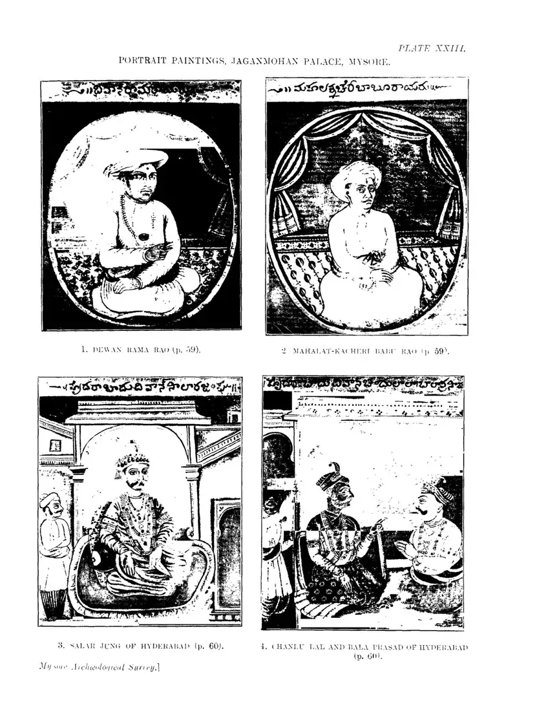
- DEWAN RAMA RAO (p. 59)
- MAHALAT-KACHERI BABU RAO (p. 59)
- SALAR JUNG OF HYDERABAD (p. 60)
- CHANLU LAL AND BALA PRASAD OF HYDERABAD (p. 60)
80. King Thimmapparāja Vađeyar II seated to right.
Kannađa legend—Right field :—
1. ಓನೇ ಪಟ್ಟ || ಹಿ
2. ರೀ ದೆಟ್ಟ ಚ್ಯಾಮ
3. ರಾಜ ವಡೆಯರ
4. ಪುತ್ರ ಯಂಮಡಿ ತಿಂ
5. ಮಪ್ಪ ರಾಜವಡೆಯ
6. ರು ಶಕ ೧೪೩೪ನೆ ಪ್ರ
Lower field:—
7. ಜೋತ್ಪೃತ್ತಿ ನಂ| ಧಾದ್ರಪದ ಬ ನಂಲ್ಲು ಜನಿಶಿ ೧೪೭೫ನೆ ಪರೀಧಾವಿ
ನಂ| ಫಾಲ್ಗು
8. ಐ ಶು ನಿಲ್ಲು ಪಟ್ಟಾಭಿಷಿಕ್ತರಾಗಿ ಆಳಿಕೆ ವರುಷ ೧೮ ಮಾನ ನಂ
9. ದಿನ ೪ ಪತ್ನೀರು ೫ ಪುತ್ರ ೧
81. King Bōłachāmarāja Vađeyar seated to left.
Kannađa legend— Left field :—
1. ಓನೇ ಪಟ್ಟ || ಯಂ
2. ಮಡಿ ತಿಂಮಪ್ಪರಾಜ
3. ವಡೆಯರ ಅನುಜ ||
4. ಭೋ|| ಚಾಮರಾಜವ
5. ಡೆಯರು ಶಕ ೧೪೪೧
6. ನೆ ಬಹುಧಾನ್ಯ ನಂ| ವೈ
Lower field:—
7. ಶಾಖ ಶು ಓಲ್ಲು ಜನಿಶಿ ೧೪೯೪ನೇ ಪ್ರಜೋತ್ಪೃತ್ತಿ ನಂ| ಮಾಘ ಶು
8. ೫ಲ್ಲು ಪಟ್ಟಾಭಿಷಿಕ್ತರಾಗಿ ಆಳಿಕೆ ವರುಷ ೪ ಮಾನ ೪ ದಿನ ೧೯
ಪತ್ನೀರು ೪ ಪುತ್ರರು ೪ ಪುತ್ರೀರು ೪
Note. —Only two queens and three daughters are mentioned in the Annals.
82. King Beṭṭachāmarāja Vađeyar seated to right.
Kannađa legend—Right field :—
1. ೮ನೇ ಪಟ್ಟ || ಭೋ ಡಾ
2. ಮರಾಜ ವಡೆಯರ ಪು
3. ತ್ರ ದೆಟ್ಟ ಚಾಮರಾಜ
4. ವಡೆಯರು ಶಕ ೧೪೭೨
5. ನೆ ಸಾಮ್ಯನಂ|ಫಾಲ್ಗು
6. ಐ ಬ ನಂಲ್ಲು ಜನ
Lower field:—
7. ಶಿ ೧೪೯೯ನೆ ಧಾತುನಂ| ಅಪಾಡ ಬ ೨ಲ್ಲು ಪಟ್ಟಾಭಿಷಿಕ್ತರಾಗಿ
8. ಆಳಿಕೆ ವರುಷ ೧ ಮಾನ ೯ ದಿನ ೨೭ ಪತ್ನೀರು
9. ನಿ ಪುತ್ರರು ೫ ಪುತ್ರೀ ೧ ನಹಾ
Note. —Only five queens, two sons and one daughter are mentioned in the Annals.
83. King Rājādhirāja Vađeyar seated to left.
Kannađa legend—Left field :—
1. ೯ನೆ ಪಟ್ಟ || ದೆ
2. ಟ್ಟ ಚ್ಚಾಮರಾಜ ವ
3. ಡೆಯರವರ ಅನುಜ ರಾ
4. ಜಾಧಿರಾಜ ವಡೆಯರವರು
5. ಶಕ ೧೪೭೫ನೆ ಪರೀಧಾವಿಸಂ।
6. ಜೈಷ್ಠ ಶು ೭ ಮಂಗಳವಾರದಲ್ಲು
7. ಜನಿಶ ೧೫೦೧
8. ನೆ ಬಹುಧಾನ್ಯ
9. ಸಂ। ವೈಶಾಖ
10. ಶು ೧೫ ಶುಕ್ರ
11. ವಾರದಲ್ಲು ಮ
Lower field:—
12. ಹಿಶೂರು ರಾಜ್ಯಧಾರವಂ ವಹಿಶ ಶತ್ರುಗಳಂ ವಿಷವಂ ಸಹ ಜೈಶಿ
ದ ಮಹರಾಜ ಸಿಂಹಾಸನವಂ
13. ಸಾಧಿಶ ಶಕ ೧೫೩೩ನೇ ಸಾಧಾರಣ ಸಂ। ಚೈತ್ರ ಶು ೭ಲ್ಲು ಶ್ರೀರಂಗ
ಪಟ್ಟಣದಲ್ಲಿ ಸಿಂಹಾಸನದೊ
14. ೪' ಪಟ್ಟಾಭಿಷಿಕ್ತರಾಗಿ ರಾಜಮುಡಿ ಪೊದರಾದ ಧರ್ಮಗಳಂಗೈದು
15. ಅಳಿಕೆ ವರುಷ ೩೯ ಮ್ಲಾ ೧ದಿನ ೧೩ ಪತ್ನೀರು ೮ ಪುತ್ರರು ೫
16. ಪುತ್ರೀ ೧ ಸಹಾ||
Note. —The date of the annexation of Seringapatam as given in the Annals of the Royal Family is Saumya sam. Māgha ba. 10 Thursday. Five queens, six sons and one daughter are mentioned.
84. King Chāmarāja Vađeyar seated to right.
Kannađa legend—Right field :—
1. ೧೦ನೆ ಪಟ್ಟ ||
2. ರಾಜಾಧಿರಾಜವ
3. ಡೆಯರ ಪೌತ್ರರಾ
4. ದೆ ಚಾಮರಾ
5. ಜವಡೆಯರು
6. ಶಕ ೧೫೨೯ನೆ [ಪರಾಭವ ಸಂ।]
Lower field:—
7. ಅಪಾಧ ಬ ೬ಲ್ಲು ಜನಿಶ ೧೫೪೦ ಪೈಂಗಳಸಂ।ಅಪಾಡ ಶು ೧೦
8. ಲ್ಲು ಪಟ್ಟಾಭಿಷಿಕ್ತವಾಗಿ ಅಳಿಕೆ ವರುಷ ೧೯
9. ಮಾಸ ೧೦ ದಿನ ೮ ಪತ್ನೀರು ೬೫
Note. —Here the cyclic year of the installation is omitted. Only five queens are mentioned in the Annals.
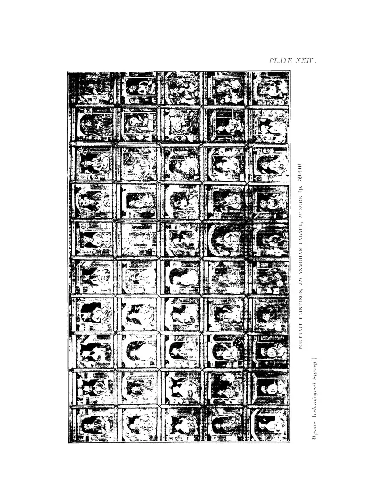
- PORTRAIT PAINTINGS, JAGANMOHAN PALACE, MYSORE (p. 59-60)
85. King Raja Vaḍeyar II seated to left.
Kannaḍa legend—Left field :—
1. ೧೧ನೇ ಪಟ್ಟ ||
2. ಚಾಮರಾಜ
3. ವಡೆಯರ ಟಿ
4. ಕೃ ತಂದೆಯಾ
5. ದ ಯಂಮಡಿ
6. ರಾಜವವಡೆಯ
Lower field:—
7. ರು ಶಕ ೧೫೪೦ನೆ ಪೈಂಗಳ ಸಂ| ಮಾರ್ಗಶಿರ ಬ ಸಿಲ್ಲು ಜನಿಸಿ
೧೫೬೦ನೆ ೮
8. ಶೈರ ಸಂ| ವೈಶಾಖ ಶು ೧ಸಿಲ್ಲು ಪಟ್ಟಾಭಿಷಿಕ್ತರಾಗಿ ೮
9. ೪ಕೆ ವರುಷ ೧ ಮಾನ ೪ ಪತ್ನೀರು ೧೯
Note. —Only 2 queens are mentioned in the Annals.
86. King Rapadhira Kanṭhirava Narasimharāja Vaḍeyar seated to right.
Kannaḍa legend—Right field :—
1. ೧೨ನೆ ಪಟ್ಟ ||
2. ಯಂಮಡಿ ರಾಜವಡೆ
3. ಯರ ಪುತ್ರ ರಣಧೀರ ಕಂಠೀ
4. ರವ ನರಸಿಂಹರಾಜವಡೆಯರವರು
5. ಶಕ ೧೫೩೮ನೆ ರಾಕ್ಷಸ ಸಂ||
6. ವೈಶಾಖ ಶು ೧೪ನೆ ಸೋಮವಾರ
7. ದಲ್ಲು ಜನಿಸಿ ೧೫೬೧ನೆ
Lower field:—
8. ಬಹುಧಾನ್ಯ ಸಂ| ಕಾರ್ತಿಕ ಶು ೨ಲ್ಲು ಪಟ್ಟಾಭಿಶಿಕ್ತರಾಗಿ ನೃಸಿಂಹ ದೇವತಾ ಪ್ರಸಾದದಿಂ ಧು
9. ಜಬಲ ಪರಾಕ್ರಮದಿಂ ಶತ್ರುಗಳಂ ಜೈಶಿ ತಂಮ ನಾಮಾಂಕಿತ ಕಂಠೀರಾಯಿ
10. ನಾಣ್ಯಮೊದರಾದ ಕೀರ್ತಿಯಂ ಪಡದು ಅಳಿಕೆ ವರು
11. ಪ ೨೦ ಮಾನ ೯ ದಿನ ೨೧ ಪತ್ನೀರು ೧೮೨ ಪುತ್ರರು ೩
Note. —Kanthirava Narasarāja Vaḍeyar was the elder cousin of Rāja Vaḍeyar II, not his son as stated here. In the Annals of the Mysore Royal Family he is stated to have had 10 queens, one son who predeceased him and one adopted son.
87. King Doddadēvarāja Vaḍeyar seated to left.
Kannaḍa legend—Left field :—
1. ೧೩ನೇ ಪಟ್ಟ || ರ
2. ಐಧೀರ ಕಂಠೀರವ
3. ನರಸಿಂಹರಾಜ ವ
4. ಡೆಯರ ಪುತ್ರ ದೊಡ್ಡ
5. ದೇವರಾಜ ವಡೆ
6. ಯರು ಶಕ ೧೫೫೦
7. ನೆ ಪ್ರಧವ ಸಂವ Lower field:—
8. ತ್ವರದ ಜೈಷ್ಠ ಬ ಸಿಲ್ಲು ಜನಿಸಿ ಗಸರ್ವನೆ ವಿಕಾರಿ ನಂ!
ಭಾದ್ರಪದ ಶು ಗಂಬ್ಲು ಪ
9. ಟ್ರಾಭಿಷ್ಕರಾಗಿ ಅಳಿಕೆ ವರುಷ ಗೊ ಮಾನ ಸಿ ದಿನ ೬ ಪ
10. ತ್ನೀರು ಸಿ ಬಿ ಪುತ್ರರು ೮ ಪುತ್ರೀರು ೩ ನಹಾ
Note. —The king is said in the Annals to have had only 3 queens, 2 sons and two daughters.
While the thrones from No. 55 to 82 appear to be hexagonal in shape without the lion ornamentation which would entitle them to be called 'simhāsana,' those from 83 onwards are rectangular or square in form, No. 84 and the rest, having the lion ornamentation on either side of the throne. We may therefore well surmise that this was because the kingdom came to be really recognised from the time of Rāja Vaḍeyar who was the real founder of the enlarged kingdom. Thrones No. 84 onwards have also other ornamentations besides that of the lion motif. viz. , the galloping horse and sāḥva motifs at the lower corners.
88. Chikkadēvarāja Vaḍeyar seated to left bearded. There is a short green coloured object held up in the left hand. It must be noted that the genealogy, as represented here, does not mention Dēvarāja Vaḍeyar who immediately preceded Chikkadēvarāja.
Kannaḍa legend—Left field:—
1. ಗಳನೆ ಪಟ್ಟ||ದೇ
2. ಡ್ಯ ದೇವರಾಜ ವಚೆ
3. ಯರ ಪುತ್ರ ಟಿಕ್ಕದೇ
4. ವರಾಜ ವಡೆಯರು ಶ
5. ಕ ಗಸ್ತಲನೆ ಪಾರ್ಥಿವ ನಂ!
6. ಅಶ್ವೀಜ ಶು ಗಲ್ಲು
7. ಜನಿಶಿ ಗಸರ್ವನೆ
8. ಪರೀಧಾವಿನ||ಪಾಲ್ಗು
9. ಐ ಬ ಗಲ್ಲು ಪಟ್ಟಾ
Lower field:—
10. ಭಿಷ್ಕರಾಗಿ ದಿಳ್ವಿಯಿಂದ ರಾಜಾ ಜಗದೆವುಯಿಂಬ ಶಿಖಾ
ಮೊಹರು ಬಿರುದು ಮೊದ
11. ರಾದುದಂ ಪಡೆದು ಗಲ ಚಾವಡಿ ಮೊದರಾದ ಅಮುಕಟ್ಟು
ಗಳಂ ನಿ
12. ನೈರ್ವಿಶಿ ಅಳಿಕೆ ವರುಷ ೩೧ ಮ್ನಾ ೮ ದ್ವಿ ೩ ಪತ್ನೀರು ೨೨
ಪುತ್ರ ೧ ಪುತ್ರಿ ೧
Note. —In the Annals of the Mysore Royal Family only ten queens, one son and one daughter are mentioned.
89. King Kanṭhīrava Mahārāja Vaḍeyar seated to right.
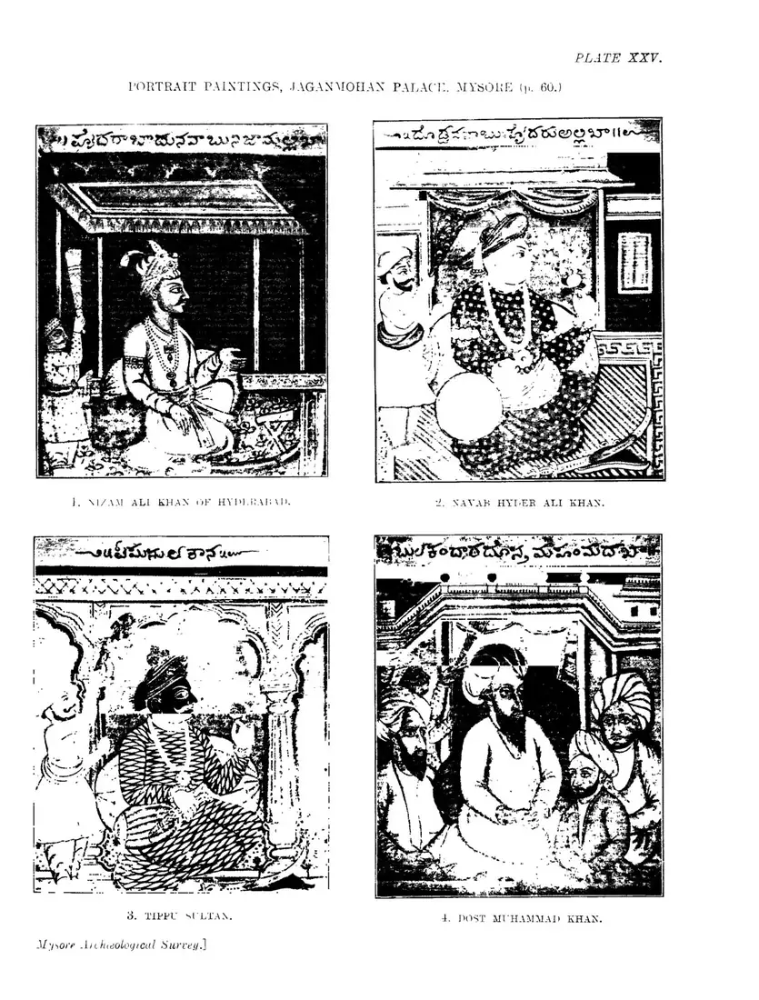
- PORTRAIT PAINTINGS, JAGANMOHAN PALACE, MYSORE (p. 60)
- NIZAM ALI KHAN OF HYDERABAD
- NAVAB HYDER ALI KHAN
- TIPPU SULTAN
- DOST MUHAMMAD KHAN
Kannaḍa legend—Right field :—
1. ೧೫ನೆ ಪಟ್ಟ ॥
2. ಟಿಕ್ಕ ದೇವರಾಜ
3. ವಡೆಯರಪುತ್ರ
4. ಕಂಠೀರವ ಮ
5. ಹಾರಾಜ ವಡೆ
Lower field:—
6. ಯರು ಶಕ ೧೫೫ನೆ ಪರೀಧಾವಿನಂ|ಪುಷ್ಪ ಬ ೪ಲ್ಲು ಜನಿಶಿ
೧೬೨೭ನೆ ತಾ
7. ರಣನಂ|ಮಾರ್ಗಶಿರ ಶು ೧೫ಲ್ಲು ಪಟ್ಟಾಭಿಷಿಕ್ತರಾಗಿ
8. ಆಳಿಕೆ ವರುಷ ೯ ಮಾನ ೩ ಪತ್ನೀರು ೩ ಪುತ್ರರು ೫
Note. —Only two queens and two sons are mentioned in the Annals.
90. King Dodda Krishnarāja Vaḍeyar I seated to left.
Kannaḍa legend—Left field :—
1. ೧೬ನೆಪಟ್ಟ ॥ಕಂ
2. ಠೀರವ ಮಹಾರಾ
3. ಜ ವಡೆಯರ ಪು
4. ತ್ರ ವಂಮಡಿ
5. ದೊಡ್ಡ ಕೃಷ್ಣ
6. ರಾಜವಡೆಯ
Lower field:—
7. ರು ೧೬೨೫ನೆ ಟಿತ್ರಭಾನುನಂ|ಚೈತ್ರ ಶು ೧ಲ್ಲು ಜನಿಶಿ
೧೬೩೬ನೆ ವಿಜಯನಂ|
8. ಪಾಲ್ಗುಣ ಬ ೧೩ಲ್ಲು ಪಟ್ಟಾಭಿಷಿಕ್ತರಾಗಿ ಆಳಿಕೆ ವರುಷ
೧೭ ಮಾನ
9. ೧೧ ದಿನ ೨೩ ಪತ್ನೀರು ೪೫ ಪುತ್ರರು ೨
Note. —Nine queens and three sons are mentioned in the Annals.
91. King Chāmarāja Vaḍeyar seated to right.
Kannaḍa legend—Right field :—
1. ೧೭ನೆ ಪಟ್ಟ ॥
2. ವಂಮಡಿ ದೊಡ್ಡ
3. ಕೃಷ್ಣರಾಜ ವಡೆ
4. ಯರ ಪುತ್ರ
5. ವಂಮಡಿ ಚಾ
6. ಮರಾಜ ವಡೆ
Lower field:—
7. ಯರು ಶಕ ೧೬೫೪ನೆ ವಿರೋಧಿಕೃತುನಂ| ಪಾಲ್ಗುಣ ಬ ೭
ಮಂಗ 8. ೪ವಾರದಲ್ಲು ಪಟ್ಟಾಭಿಷಿಕ್ತರಾಗಿ ಆಳಿಗೆ ವರುಷ ೨
9. ಮಾನ ೨ ದಿನ ೨೮ ಪತ್ನೀರು ೩
Note. —No date of birth is given. From the Annals we learn that the king was born in Śaka 1627, Tāraṇa.
92. King Krīshṇarāja Vađeyar II seated to right.
Kannađa legend—Right field :—
1. ೧೮ನೆ ಪಟ್ಟ ||
2. ವಂಮಡಿ ಚಾಮರಾ
3. ಜಾನುಜ ಯಂಮಡಿ ಕೃ
4. ದ್ಗರಾಜ ವಡೆಯರು
5. ಶಕ ೧೬೫೪ನೆ ಪಿರೊ
6. ಧಿ ಕೃತುನಂ|ಆಶ್ವೀಜ
Lower field: —
7. ಬ ೪ ಶುಕ್ರವಾರದಲ್ಲು ಜನಿಶಿ ೧೬೫೭ನೆ ಅನಂದ ನಂ|
ಜೈದ್ಧ ಬ ೧೦ಲ್ಲು ಪಟ್ಟಾ
8. ಭಿಷಿಕ್ತರಾಗಿ ಆಳಿಕೆ ವರುಷ ೩೧ ಮಾನ ೯ ದಿನ ೨೧ ಪತ್ನೀರು
9. ೮ ಪುತ್ರರು ೫ ಪುತ್ನೀರು ೪ ನಹಾ
Note. —The Annals mention that the king was born in Ś 1651, Kilaka and was adopted by the queen of Krīshṇarāja Vađeyar on the date given above, viz. , Ś 1654. Virōdhikrīt, Āśvayuja ba. 4. We also learn that the king had three wives, three sons and three daughters.
93. King Nañjarāja Vađeyar seated to left.
Kannađa legend—Left field :—
1. ೧೯ನೆ ಪಟ್ಟ ||
2. ಯಂಮಡಿ ಕೃದ್ಗ
3. ರಾಜವಡೆಯರ
4. ಪುತ್ರ ನಂಜರಾ
5. ಜವಡೆಯರು
6. ಶಕ ೧೬೮೫ನೆ
Lower field: —
7. ಚಿತ್ರಭಾನುನಂ|ವೈಶಾಖ ಶು ಸಿಲ್ಲು ಜನಿಶಿ ೧೬೮೯ನೆ
ವೃದು
8. ನಂ|ನಿಜ ಜೈತ್ರ ಬ ೧೩ಲ್ಲು ಪಟ್ಟಾಭಿಷಿಕ್ತರಾಗಿ ಆಳಿ
9. ಕೆ ವರುಷ ೪ ಮಾನ ೩ ದಿನ ೧೨
94. King Beṭtachāmarāja Vađeyar II seated to left.
Kannađa legend—Left field :—
1. ೨೦ನೇ ಪಟ್ಟ ||
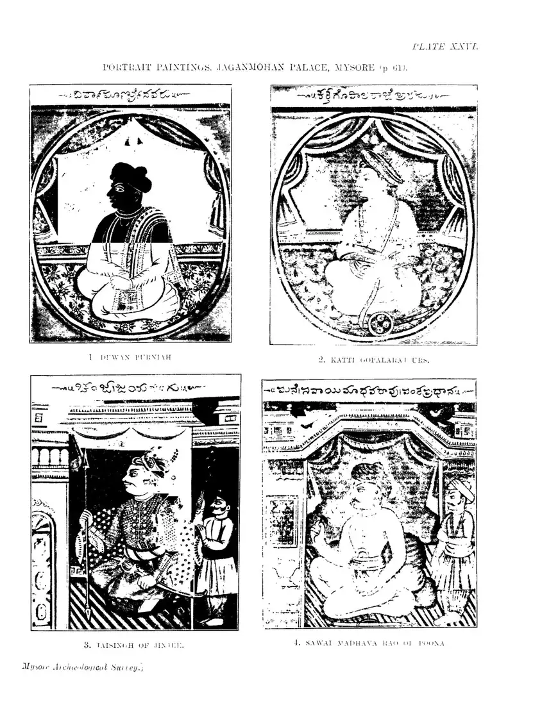
- PORTRAIT PAINTINGS. JAGANMOHAN PALACE, MYSORE (p. 61)
- DEWAN PURNTAH
- KATTI GOPALAKAI URS
- LAISINGH OF JINUEE
- SAWAI YADHAVA RAO OF POONA
2. ನಂಜರಾಜಾ
3. ನುಜಯಂ
4. ಮಡಿ ದೆಟ್ಟ
5. ಚಾಮರಾಜ
Lower field:—
6. ವಡೆಯರು ಶಕ ರಾಜರಾಜನೆ ಪ್ರಮಾಢ ನಂ| ಭಾದ್ರಪದ
ಶುದ್ಧ ಸಿಲ್ಲು
7. ಜನಿನಿ ರಾಜಕಿನೆ ವಿಕೃತಿ ನಂ| ಶ್ರಾವಣ ಬ ರಂಬ್ಲು ಪಟ್ಟಾಭ
8. ಪಿಕ್ತರಾಗಿ ಆಳಿಕೆ ವರುಷ ೬ ಮಾನ ೧ ದಿನ ೮
95. At the termination of the lotus leaf, King Chāmarāja Vaḍeyar III seated as above.
Kannada legend—Left field :—
1. ೨೧ನೇ ಪಟ್ಟ|ಯಂ
2. ಮಡಿ ದೆಟ್ಟ ಚ್ಚಾಮ
3. ರಾಜಾನುಜ ಮುಂಮಡಿ
4. ಚಾಮರಾಜೇಂದ್ರ ವಡೆಯ
5. ರು ಕರ್ತರು
6. ಶಕ ರಾಜರಾಜನೆ
7. ವಿಜಯ ನಂ| ಫಾ
8. ಬ್ಲೂ ಬ ೨ ಸೊ
9. ಮವಾರ ಹಸ್ತನ
Lower field:—
10. [ಕ್ಷತ್ರದಲ್ಲ] ಜನಿಶಿ ರಾಜಕಿನೆ ದುರ್ಮುಖ ನಂ| ನಜಭಾದ್ರಪದ ಶುದ್ಧ ರಾಸಿಲ್ಲು ಪಟ್ಟಾಭಪಿಕ್ತ
11. [ರಾಗಿ] ಶ್ರೀಚಾಮುಂಡಾ ಶ್ರೀಕಂಠೋಪಾನಕ ಶಿವ ಪೂಜಾಧುರಂಧರ ಕೋಟಿ ಪಂಚಾ
12. [ಕ್ಷರಿ] ಪುರಶ್ಚರ್ಯ ಪೂರ್ವಕ ಪುತ್ರಕಾಮೇಷ್ಠಿಯಂ ಮಾಡಿ ಆಳಿಕೆ ವರುಷ ರಾಜ
13. ಮಾನ ೬ ದಿನ ೨ಸಿ ಪತ್ನೀರು ೧೦ ಗಂಡುವುಕ್ಕಳು ೪
Note. —In the Annals, seven queens and four sons are mentioned.
96. Below No. 95 in an ornamental panel a bigger and more elaborate throne is painted. In addition to the usual chāmara-bearing attendants, two princes are represented as standing beside the throne, one on the left and the other on the right.
Kannada legend—Right field :—
1. ೨೨ನೆ ಪಟ್ಟ|ಶ್ರೀಮಹಾವಿಷ್ಣಾದಿ ೯೬ನೆ ನಂ
2. ತಾನ ಯದುವಂಶೋದ್ಭವ ಆದಿಯದುರಾಯಾ
3. ದಿ ೨೧ನೆ ಮುಂಮಡಿ ಚಾಮರಾಜೇಂದ್ರವಡೆ
4. ಯರು ಕರ್ತರಿಂ ಮಾಡಲ್ಪಟ್ಟ ಕೋಟಿ ಪಂಚಾ
5. ಕ್ಷರೀ ಪುರಶ್ಚರಣಿಯಿಂದ ಧರ್ಮಪತ್ನಿ ಕೆಂಪನಂ
6. ಜಮಾಂಬಾ ಗರ್ಥನುಧಾಂಬುಧಿಯಲ್ಲ ಪು
8
Left field:—
7. ತ್ರರಾಗಿ ಶ್ರೀಚಾಮುಂಡಾವರಪ್ರಸಾ
8. ದೋದ್ಧವ ಶ್ರೀಕಂಠೇಶ್ವರ ಪದಾರ್ಚಿತ ಶಿ
9. ವಪೂಜಾಧುರಂಧರ ಶ್ರೀಮತ್ನಮಸ್ತಧೂ
10. ಮಂಡಲ ಮಂಡನಾಯಮಾನೇತ್ಯಾದ್ಯನೇಕ ಬಿರುದಾಂ
11. ಕಿತ ನಂಜರಾಜಾಭಿದ ಮುಂಮಡಿ ಶ್ರೀಕೃಷ್ಣ
12. ರಾಜೇಂದ್ರಸಾರ್ವಭೌಮವಡೆಯರಾದ ಕರ್ತರು
13. ಶಾಲೀವಾಹನ ಶಕ ೧೭೧೭ನೆ ಅನಂದ ಸಂ| ಅಪಾ
14. ಥ ಬ ೨ ಸೋಮವಾರ ಶ್ರವಣ ನಕ್ಷತ್ರ ಕನ್ಯಾಲಗ್ನಾ
15. ಭಿಜನ್ಮುಹೂರ್ತದಲ್ಲಿ ಅವತರಿಶಿ ೧೭೨೨ನೆ ಸಿ
16. ದ್ರಾರ್ಥಿ ಸಂ| ಜೈಷ್ಠ ಬ ೧೩ ಭಾನುವಾರ ರೋಹಿಣಿ
17. ತಾರಾಕಲಿತ ಕನ್ಯಾಲಗ್ನದಲ್ಲಿ ವಿರಾಯಿತಿ ಕಿಂಗ್ಜಾ
18. ಜರ್ ಪಾದಷ್ಟಹಾರ ಆಜ್ಜೆಯಿಂದ ಶತ್ರುಸಂಹಾ
19. ರ ಪೂರ್ವಕ ಪಟ್ಟಾಭಿಪಿಕ್ತರಾಗಿ ಉದುಪೆಸು
20. ಬ್ರಹ್ಮಣ್ಯಾದಿ ದೇವಕಾದರ್ಶನವಂಗೈದು ಸಮು
21. ದ್ರಾದಿ ಅನೇಕ ತೀರ್ಥಸ್ಥಾನಗಳಿಂ ಪರಿಶುದ್ಧಮನ
22. ಸ್ಮರಾಗಿ ಪಿರಣ್ಯಗರ್ಧ ತುರಾಭಾರಾದಿ ದಾನಗಳಿಂ
23. ದೇವಾಲಯ ವಾಪೀ ಕೂಪ ತಟಾಕಾಗ್ರಹಾರಾದ್ಯನೇಕ
24. ಧರ್ಮಗಳಿಂ ಗೈದು ಶ್ರೀತತ್ವನಿಧ್ಯಾದ್ಯನೇಕಗ್ರಂಥ
25. ಗಳಂರಚಿಶಿ
Below the panel, on a rectangular band:—
26. ಪಟ್ಟಾಭಿಷೇಕಾದಿ ೬೦ನೆ ವರ್ಷವೃದ್ಯ
27. ಭಿಷೇಕವಂ ಗೈಕೇಂದು ವಿಲಾಮಿತಿ
28. ಕುಯಿಣ ವಿಕ್ಟೋರ್ಯ ಮಹಾರಾಣಿಯಿಂದ
29. ಪ್ರೀತಿ ಪುರಸ್ಕರಮಾಗಿ ದಮಾಪಾಲಿದ ಅವರ
30. ಭಾವಚಿತ್ರ ಪ್ರತಿಮೆಯಿಂದೊಡಗೂಡಿದ ಆಯು
31. ಧದಿಂಸನ್ಮಾನಿತರಾಗಿ ಪತ್ನೀರು ೨೦ ಪುತ್ರ ಪಾತ್ರ ಪ್ರಪಾತ್ರ
32. ದೌಯಿತ್ರಾದಿಗಳಿಂ ವಿರಾಜಿಸುತ್ತ ಸುಖ ಸಾಂದ್ರಾಜ್ಯದಿಂ
33. ಪ್ರಕಾಶಿಸುತ್ತಲಿದಾರೇ||
Other portrait paintings on the western wall
The upper section of the western wall on either side of the Santānāmbuja contains, as already stated, the portraits of Indian rulers, not always contemporary, and some of the notables of the Mysore State. These portraits are arranged on either side in two groups, the groups being divided, one from the other, by a floral and scroll design. The outer group on the right side has 50 portraits of Muhammadan rulers and that on the left has the same number of Hindu rulers. These portraits are perhaps copies from originals. They are thus valuable from a historic as well as the artistic point of view. The inner groups on either side contain each
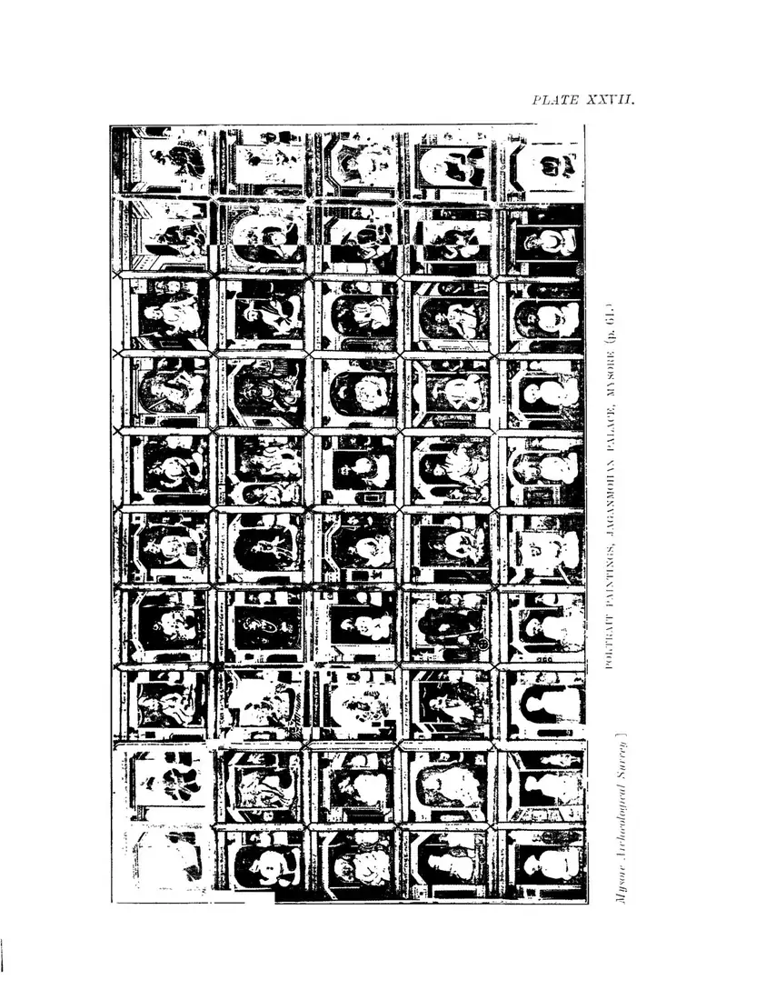
- POLITHAIT PAINTINGS, JAGANMOH AN PALACE, MYSORE (p. 61)
15 portraits of the chief personages connected with the royal household and the several departments of government.
All the portraits are drawn in profile facing the Santānāmbuja ; those on the left are turned to right and those on the right to left.
The inner group on the right side contains the following portraits arranged in this order :—
ಬಾನಾ ಅಳಿಯ
ದೇವರಾಜೆ ಅರಸು ಬಾನಾ ಅಳಿಯ
ರಂಗರಾಜೇ ಅರಸು ಬಾನಾ ಛಾವ ಮೈದ ಮಾವನಳಿ,
ರಂಗರಾಜೇ ಅರಸು
ಬಾನಾ ಅಳಿಯ
ನುಬ್ಬರಾಜೇ ಅರಸು ಬಾನಾ ಅಳಿಯ
ಕೃಷ್ಣ ಅರಸು ಬಾನಾ ಅಳಿಯ
ನಂಜರಾಜೇ ಅರಸು
ಬಾನಾ ಅಳಿಯ
ನುಬ್ಬರಾಜೆ ಅರಸಿನ ಕೊಮಾರು
ದ್ಯಾವರಾಜೇ ಅರಸು ನರ್ವಾಧಿಕಾರ
ದೊಡ್ಡ
ಬಾಳೆ ಅರಸು ಬಾನಾ ಅಳಿಯ
ನಂಜರಾಜೇ ಅರಸಿನ ಕೊಮಾರು,
ದೌಹಿತ್ರ ಸಿದ್ದರಾಜೇ ಅರಸು
ದಿವಾನ್
ರಾಮರಾಯರು ಮಹಾರತ್ನಚೇರಿ
ಬಾಬೂರಾಯರು ಕಂದಾಚಾರ ಕಚೇರಿ
ಭಕ್ಷಿ ಚಲುವೆಅರಸು
ಗೋಪಾಲ
ರಾಜೇ ಅರಸು ತೋಷೀ ಖಾನೆ
ಶಿದ್ದರಾಜೇ ಅರಸು ಬಾರಿಗಾಟು
ಭಕ್ಷಿ ಭದ್ರಪ್ಪನವರು
The persons mentioned here sit in padmāsana against pillows, with their palms crossed downwards on laps. The officials sit on their bent knees with their hands disposed in the same way but with no pillows.
The portraits of the Muhammadan rulers, contemporary and otherwise, are arranged in the following order with a descriptive legend at the head of each portrait :—
ರುಸ್ತು ಂಪಾದಷಾನ
ಮಗ |
ಸೊಹರಾಬು ಅಜ್ಜಂ ದೇಶದ ಪಾದಷಾ|
ಜಂಷೆ ತ್ರಿಯದು|
ಜಾಮೆ ಜಹಾನುಮಾ ಶಾಂದೇಶದ
ಪಾದಷಾ |
ಕ್ರೈಕಾಮುಸು|| ದುರಾನಿ ದೇಶದ
ಪಾದಷಾ||
ನಾದರ್ಷಷಾ|| ಯರಾಢ
ಪಾದಷಾ |
ಫತಅಲ್ಲೇಷಾ
ರೂಂ
ಪಾದಷಿಹ
ಯಸ್ಮಾಯ್| ಯರಾಢ
ಪಾದಷಾ|
ಷಾಯ ಅಬ್ಯಾಸು ಯರಾನ್
ಪಾದಷಾ . .
. . . ದಿಳ್ಳಿ
ತ್ರಿಮುರಷಾ
ಪಾದಷಾ ದಿಳ್ಳಿ ಅಕಬರು ಪಾದಷಾ |
ವಜೇರು
ಬರಬಲ್ಲು ಸಹಾ
ಆರ್ಕಾಡು
ನವಾಬು|
ದಾವುದಷಾ ಆರ್ಕಾಡು
ನವಾಬು |
ಮಹಮದಲ್ಲೇಬಾ|| ನವಾಬು
ಸಾ
ತುಲ್ಲಾಖಾ ನವಾಬು
ಅವೈವ
ಜಖಾ ಲಕನೂರು
ನವಾಬು |
ಸುಜಾಯಿದ್ದಿರಾ||
ನವಾಬು
ಆ
ಜಂಮ್ಮ ದಾರಾ
ಸೋಕಿ
ಪಾದಷಾ [ಶಾ] ದುದರ್ಷಾ
ಪಾದಷಾ| ಲಕಂಣ|
ಮಾದಂಣಸಹಾ ಆರೆಂಗಿರಿ
ಪಾದಷಾಹ ಯವನ್ ದೇಶದ
ಪಾದಷಾ
ಕೈತುಲ ನ. ಶ್
ನವಾಬು|
ಯುಬರಾಯಿಂ
ಬಾಧಂಸಾ ನವಾಬು|
ಶ್ರವಣೂರು
ಹಕೇಂ ಬಾ ಚಂನಪಟ್ಟದ
ನವಾಬು|
ಗುಲಾಂಮಹಂಮದು ಚಂನಪಟ್ಟದ
ನವಾಬು|
ಆಜಮುದ್ದಾರಾ ಚಂನಪಟ್ಟ
ನವಾಬು|
ವಾರಾಜಾ||
ನವಾಬು|
ಮುತವಸ್ಸಿ
ಲಬಾ ನವಾಬು| ಕಡಪಾ|
ಅಬ್ದುರ್|
ಸರಾಬಾ ನವಾಬು ಕಡಪಾ
ಅಬ್ದುರ್
ಮಜೀದಿಬಾ ನವಾಬು|
ನಾಸರ
ಜಂಗು ಸಾರಾಬು
ಸರಾಬುತ
ಜಂಗು
ಹೈದರಾಬಾದು
ದಿವಾನ್ ಸಾರಾರ
ಚೆಂಘ ಹೈದರಾಬಾದು
ದಿವಾನ್ ಚಂದು ಲಾರಾ|
ಬಾರಾ ಪ್ರಸಾದು ಹೈದರಾಬಾದು
ದಿವಾನ್
ಮೀರಾಲಂ|| ಹೈದರಾಬಾದು
ದಿವಾನ್
ಪುರಸರಮುಲಕು ಹೈದರಾಬಾದು
ನವಾಬು|
ರೊಷ್ಟೆ ಬಹದರು
ಹೈದರಾಬಾದು
ನವಾಬು
ನಾಸರುದ್|ರಾ ಹೈದರಾಬಾದು
ಗೋಲಕೋಂಡೆ
ನವಾಬು ಹೈದರಾಬಾದು
ನವಾಬು
ಶಿಕಂದಂಬಾ ಜಂಗು ಹೈದರಾಬಾದು
ನವಾಬು
ಸಜಾತುಲ್ಲಬಾ ಹೈದರಾಬಾದು
ನವಾಬು
ಆಸಫಜ ಹಾಬಾ
ಮುಸಾಹೇಬ
ಆಲಂಬಾ
ಬಕ್ಷಿ || ಅವಲ್ ಬಾರ
ಕಚೇರಿ
ಹಿಂಮತ್ಕಾರಬಾ ದುಯಂಬಾರ್
ಕಚೇರಿ ಭಕ್ಷೇ
ರಾಜಾಬಾ ಟೇಪ್ಪ
ಸುಲ
ತಾನ|| ದೊಡ್ಡ
ನವಾಬು|
ಹೈದರಾ ಅಲ್ಲಬಾ
ಬಾಂದಾ
ನವಾಬನ
ಮಗ|| ಬಂಗಾಳಾ ನವಾಬು ನವಾಬು
ಸೈಯದು
ಬೈಗಂ ಜಂಗು ಕಾಬೂರ್
ಕಂದಾರ ದೊಸ್ತ
ಮಹುಮದಬಾ ನವಾಬು
ಸೈಯದು
ಅಬ್ದುಲಬಾ
Portraits on the inner left group :—
ಮದನ ವಿರಾಸ ತೊಟ್ಟ
ಪುಟ್ಟ ಸಾಮಿಯವರು ಪೇನಾಪತಿ
ಚಾಮರಾಜ ಬಹದರು ಲಕ್ಷ್ಮೀ ವಿರಾಸದ ಪುಟ್ಟ ಸ್ವಾಮೀಯವರು
ಯವರಾಜ ನಂಜರಾಜ
ಬಹದರು ಟಿ|| ಭು|| ಯವರ
ಕೊಮಾರ್ರು
ದೇವಪಾರ್ಥಿವ ಬಹದರು
ಮ|| ಪು|| ೧ನೆ
ಕೊಮಾರ್ರು ಪೇನಾಪತಿ
ನಂಜರಾಜ ಬಹದರು ಮ|| ಪು|| ೨ನೆ
ಕೊಮಾರ್ರು
ದೇವರಾಜ ಬಹದರು ಮ|| ಪು|| ೩ನೆ ಕೊಮಾರ್ರು
ಕೇಪಿನ
ಚಾಮರಾಜ ಬಹದರು
ಮ|| ಪು|| ೪ನೆ
ಕೊಮಾರ್ರು ಸಂಮುಖ ತೊಟ್ಟ
ದ್ಯಾವರಾಜ ಬಹದರು ಚಾಮೆ ಅರಸು ಬಹದರು ಚಾಮೆ ಅರಸು ಬಹದರ
೧ನೆ ಕೊಮಾರ್ರು
ಕೃಷ್ಣೆ ಅರಸು
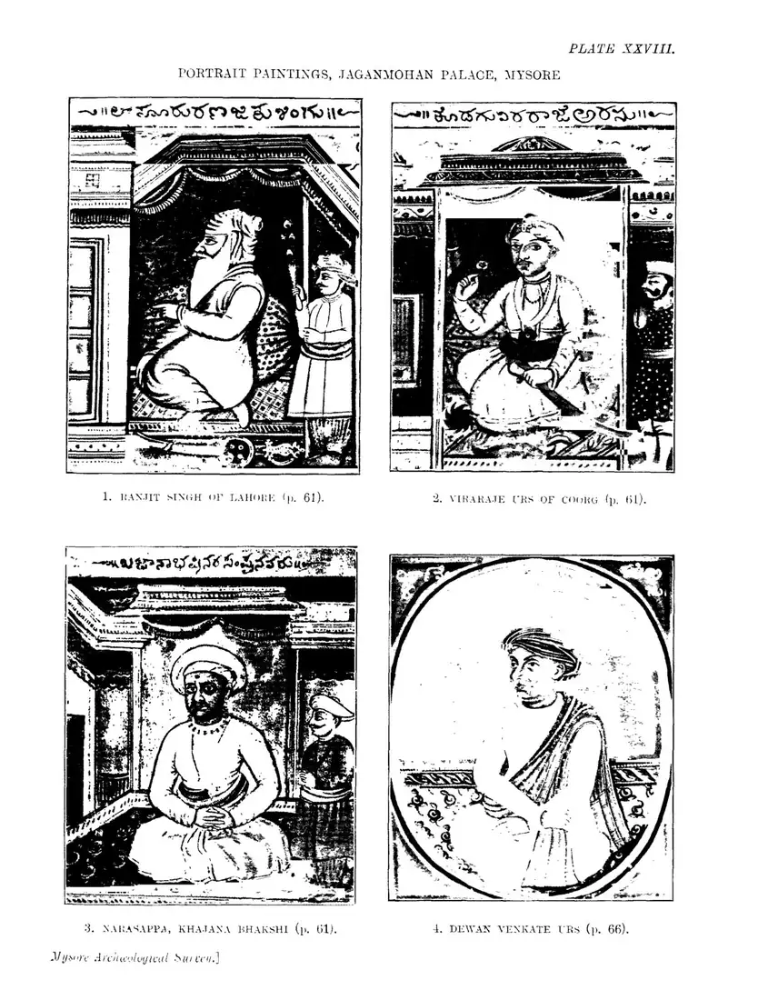
- RANJIT SINGH OF LAHORE (p. 61)
- VIRARAJE URS OF COORG (p. 61)
- NARASAPPA, KHAJANA BHAKSHI (p. 61)
- DEWAN VENKATE URS (p. 66)
ಚಾಮೆ ಅರನು
ಬಹದರ ೨ನೆ ಕೊಮಾರು,
ಚಮಾಲು ನಂಜರಾಜೆ ಅರನು ಚಮಾಲು ನಂಜರಾಜೆ
ಅರನಿನ ಕೊಮಾರು,
ಚಾಮರಾಜೆ ಅರನು ದಿವಾನ್ ಪೂಜ್ಯಾನವರು
ಜಿರೋ
ಕಚೇರಿ ಭಕ್ಷಿ
ಚಾಮಪ್ಪಾಜೆ ಅರನು ಮೂಗೂರು ಅರನು ಕತ್ತಿ
ಗೋಪಾಲ ರಾಜೆ
ಅರನು
Portraits on the outer left group :—
ಅನಂತಶಯನದ
ಕಿರೀಟ
ರಾಮರಾಜು ಅನಂತಶಯನ
ದ ಕುಲಶೇಖರ
ರಾಮವರ್ಮ ಅನಂತಶಯನದ
ಕುಲಶೇಖರ
ಮಾರ್ತಾಂಡ ವರ್ಮ ಗದ್ದಾಲು
ಸೋಮ
ಭೂಪಾಲ ಗದ್ದಾಲು
ಸೀತಾರಾಮ
ಭೂಪಾಲ
ವಿಜಯ
ನಗರದ
ಸೀತಾರಾಮರಾಜ ವಿಜಯ
ನಗರದ
ನಾರಣಬಾಬು ಸುರಪುರದ
ವೆಂಕಟಪ್ಪ
ನಾಯಕ ಸುರಪುರದ
ಚಿಕ್ಕ
ವೆಂಕಟಪ್ಪನಾಯಕ ರಾವೂರು ವೆಂಕಟಗಿರಿ
ಬರಿಗಾರುಯಾ
ಚಮನಾಯ [ಕ]
ತಂಜಾವೂರು
ಪ್ರತಾಪಸಿಂಹ
ಮಹಾರಾಜ ತಂಜಾವೂರು
ತುಳಜಾ
ಮಹಾರಾಜಾ ತಂಜಾವೂರು
ಅಮರಸಿಂಹ
ಮಹಾರಾಜ|| ತಂಜಾವೂರು
ಶರಥೋಜಿ
ಮಹಾರಾಜ ತಂಜಾವೂರು
ಶಿವೋಜೀ
ಮಹಾರಾಜ
ದಳವಾಯ
ಕರಾಚೂರಿ
ರಂಗೈಯ್ಯ ತಿರಿಚನಾಪಲ್ಲ
ವಿಜಯ ರಂಗ
ಚೊಕ್ಕನಾಥ ಪುದಿಕೊಟೆ ಅರನು
ರಾಮಚಂದ್ರ
ತೊಂಡಮಾನ ಕೊಟ್ಟಿ
ಅರನು
ರಾಮವರ್ಮ ಕಚ್ಚ
ಬುಕು|
ಅರನು ಚಂಜೀ|
ಜಯ
ಶಿಂಗು
ಸಾತಾರಿ |
ಶಾಹೋಜಿ
ರಾಜು ಪುನೆ | ದೊಡ್ಡ
ನಾನಾರಾವು
ಪಂತಪ್ರಧಾನ|| ಪುನೆ|
ನಾರಣರಾವು|
ಪಂತ ಪ್ರಧಾನ|| ಪುನೆ|
ಸದೊಖಾ|
ಪಂತ ಪ್ರಧಾನ ಪುನೆ |
ಸವಾಯ ಮಾದವ ರಾವು|
ಪಂತ ಪ್ರಧಾನ||
ಪುನೆ | ನಾನಾ
ಪಂಣೇಸು |
ದಿವಾನ್|| ಗೋರೇರ್ |
ಮಾಜೀ
ಶಿಂಧ್ಯ|| ನಗಪುರಿ
ಜಾನೋಜಿ
ಭೂಸರಾ ಬರ್ಕ
ಶಿವನ
ರಾವೂ ಬಾರಗಿರ್|
ದು | ಮುನಷಿ
ರಾಮರಾಯರ್ಯು|
ರಾಹೂರು
ರಣಜಿತ
ಶಿಂಗು ರಣಜಿತು
ಶಿಂಗನ ಮಗ
ಪೇರಶಿಂಗು ರಾ| ಶೇರ
ಶಿಂಗನ ಮಗ
ಪ್ರತಾಪಶಿಂಗು ರಾ|| ಪ್ರತಾಪ
ಶಿಂಗನ ಮಗ
ಹೀರಾಶಿಂಗು ನೇಪಾಳ
ರಾಜಾನ
ಮಗ
ಮಾರುವಾಡೀ
ಅರನು |
ಮಕ್ಕಳುಸಕಾ ಕೊಡಗು |
ವೀರ
ರಾಜೇ ಅರನು ಕೊಡಗು
ಲಿಂಗರಾಜೇ
ಅರನು ಕೊಡಗು
ವೀರರಾಜೇ
ಅರನು ಖ್ಯಾ ಮುನಷೀ|
ಭಾಗವತ
ನಾರಣಪನವರು
ಮುಸಾಹೇಬು |
ಗಂಗಾಧರ
ರಾವು ಮುಸಾಹೇಬು ವ್ಯಸಾರಾವು ಮುಸಾಹೇಬು|
ಕಿರ್ತ್ತೆ ಕಚೇರಿ
ತಿಪೆ ತ್ತಿಯನವರು ಮುಸಾಹೇಬು|
ಅಣೆ ರಾಮಾ
ರಾಯರು ಬಜಾನಾ
ಭಕ್ಷಿ
ನರಸಂಪ್ರನವರು
ಸವಾರ ಕಚೇರಿ
ಭಕ್ಷೇ
ಭೇಮರಾಯರು ಸವಾರ
ಕಚೇರಿ ಭಕ್ಷಿ |
ಅಂಣಾಜೀರಾಯರು ಪಾಗಿರ್ದ ಪೆಷು
ಕಚೇರಿ ಭಕ್ಷಿ |
ಅಂಣಾಜೀರಾಯರು ಬಾರ ಕಚೇರಿ
ಭಕ್ಷಿ | ಹಾಗೂಬ್ಯಾಳಿ
ರಾಮರಾಯರು ಕಂದಾಚಾರ
ಕಚೇರಿ | ಭಕ್ತಿ
ಜೀವೇಣರಾಯರು
The extreme sides of the lower section of the west wall have the plantain tree decoration with a deer painted in the pose of rearing against it.
The Jambusavari Procession
The Jambū-savāri or procession of the Mahārāja Krishṇarāja Wađeyar III on the Vijayadaśami day of the Navarātri festival is painted in a long frieze running, as already stated, along the upper sections of the north, east and south walls of the hall. At the western end of the upper section of the north wall two symmetrically drawn elephants, one with the Mahārāja's flag marked 'ಕ್' and the other with the Sūryadhvaja, are represented as leading the procession. Just behind the elephants four ridden camels follow. The riders have muskets, bows and quivers containing arrows. Following behind are a pair of Khañjari (?) players on each side, between whom are painted four horn blowers in action, facing the procession. Next we see marching in single file, on either side, a troop of musketeers with green-coloured drapery and head-dress. Between them proceed three rows of horse, one behind the other, with riders. The front row has a set of bandsmen. The second row depicts riders with black trousers, red military coats and black elongated caps. They have all their swords drawn. The third row represents again a band of musicians.
The musketeers with green coats are followed by foot-soldiers bearing javelins in their left hands and twisted rods in their right. These rods are sometimes so curved as to resemble cobras held up. In one or two places a mace or a sword is carried instead of the rod. At the termination of the rows of javelin bearers march, the bearers of the Mysore royal birudas which, being in duplicates, are arranged on the two sides more or less symmetrically. The birudas are as follows, from the front backwards:—Garuđadhvaja, Hanumadhvaja, Chatra, Sūryadhvaja, Lion, a pair of fan-like dhvajas with the figure of Añjanėya in striking attitude drawn in centre, Varāha, Gaṇđabhēruṇđa, Vyāla, Sāļva, Matsya, Makara, Paraśu, Ankuśa, Šańkha and Chakra. The bearers of Ētupāvađe, three on each side, are arranged on the inside where the birudas end.
Between the two rows of the javelin-bearers on the north wall and led by the three rows of horse riders already described as consisting of bandsmen, a tusker elephant mounted by howdah proceeds, being followed in succession by:—
1. One row of khañjari (?) and drum players.
2. Two rows of green flag bearers.
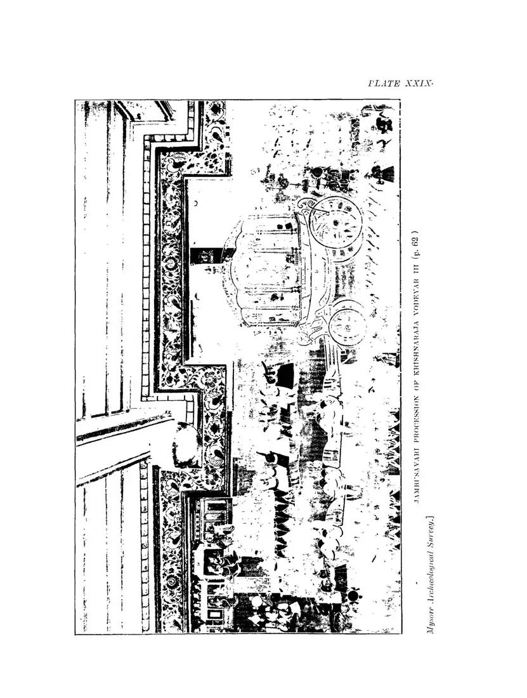
- JAMBUSAVART PROCESSTON OF KRISHNARAJA VODEYAR III (p. 62)
3. Three rows of bandsmen.
4. Four rows of musketeers on foot.
5. Four rows of similar musketeers, but differently dressed.
6. An elephant mounted by a howdah.
7. On either side of the musketeers and the howdah a row of four unridden horses.
8. Immediately behind the horsemen, palace pipers and drummers.
9. Dancing girls with the himməla or accompaniment behind them consisting of violinists and muridanga and vīnā players.
10. Between the bearers of the birudas two horn-blowers proceed towards the state carriage in which the Mahārāja is seated.
The state carriage of the Mahārāja is drawn by three pairs of elephants in front of which stand four persons with baskets of plantains for presentation to the Mahārāja. To the right of the state carriage and facing it are two groups of heralds with their right hands raised in the attitude of proclaiming the Maharāja's titles. Behind the carriage is a group of chāmara (discs) and chatra bearers followed by a company of spearmen.
The Mahārāja is the central figure in the procession. He is represented as sitting in state inside the state carriage which is surmounted at the top by five kalaśas and the state flag with the letter '☞' inside the disc of the sun. He is seated well adorned on a chair in the middle of the carriage, while his chief courtiers and relations either squat or stand around him.
On the right wing of the celebrations the subjects of the Mahārāja stand in respect. They are all depicted as being loyal and quite eager about the procession. On the terraces of the buildings in the background are groups of females admiring the festivities and partaking of the gaiety.
The procession of the cavalry is painted behind the state carriage. On the southern wall can be seen in order the state vehicles, like the pañcha-kalaśa carriage drawn by four pairs of horses, the open and square palanquins, elephants mounted by the nagāri drummers and differently shaped carriages drawn by either bullocks or horse.
The buildings painted in the background offer a variety of design. In the vacant spaces between them are painted cocoanut and other trees.
Paintings on the lower section of the east wall
The lower section of the eastern wall of the hall is pierced by two windows and two doors, the latter in between the former. The wall on all the four sides of the windows and between the doors is divided into several panels of painting.
(1) East Wall-North Side. —To the north of the window the narrow panel is painted with a plantain tree against which a deer rears.
Above the window there are four small panels painted with the portraits of the state cows with Kannaḍa legends above them :
(1) Prasanna Pārrati. (3) Sarvamaṅgalā.
(2) Duraduṇḍi. (4) Jagadambā.
The wall south of the window has been divided into three rows of vertical panels. The larger central panel consists of the principal figure of the whole group of paintings which is called Sarvachittaraṇjini (ಸರ್ವಚಿತ್ರರಂಜನ).
East Wall-South Side. —The paintings on the four sides of the window on this side, are similar to those on the north side. Above the window are four panels painted with the figures of state cows. From right to left the names written over the figures of these cows are as follows :—
1. ೧ನೆ ಪೂಜೆ ಚಾಮುಂಡಿ 3. ೩ನೆ ಪೂಜೆ ವರ ಚಾಮುಂಡಿ
2. ೨ನೆ ಪೂಜೆ ಚಲುವ ಚಾಮುಂಡಿ 4. ೪ನೆ ಪೂಜೆ ಪುಟ್ಟ ಚಾಮುಂಡಿ
To the north of the window, as on the north side of the wall, similar vertical rows of panels, three in number, are drawn with figures of admiring visitors of either sex in different attitudes and with floral decorations on alternate panels. The larger central panel of the group has the figure of Sarvāṅgasundari (ಸರ್ವಾಂಗ ಸುಂದರಿ).
East wall-middle. —The central portion of the lower section of the east wall, that is, between the two doors, is painted with scenes of the royal hunt in illustration of the Mahārāja's love of chase. The wall here is divided into five panels. Each panel depicts a hunting scene in a particular and noted forest of the state, and each scene is labelled.
1. Left side-Upper. —'Tiger hunt near Kittūr. (ಕಿತ್ತೂರುಬಳ ಹುಲಿಕಾರಿ.)
2. Left side-Lower. —Hunting scene is near Chatṭnahalli. (ಚಟ್ನಹಳ್ಳಿ ಬಳಿಯಲ್ಲಿ ಹುಲಿ ಕಾರಿ.)
3. Right side-Upper. —Hunt of tiger and wild buffalo and boars in the forests of Kottāgāla (ಕೊತ್ತಾ ಗಾಲದ ಬಳಿ ಕಾರಿ).
4. Right side—Lower :— The capture of the State elephant Kempanaṇjiah in the forests of Chāmarājanagar (ಚಾಮರಾಜ ನಗರದಲ್ಲಿ ಕೆಂಪನಂಜೈಯಾನೆ ಕಾರಿ).
5. The central panel is named ಬಂಗಡಿ ಕಾರಿ. Two successive wide rings or enclosures are formed, one of high palisade work and the other of double columns of trees. Into the latter enclosure the gateway of the former protrudes half way, gradually widening outwards. Paths lead from various directions into the outer enclosure of
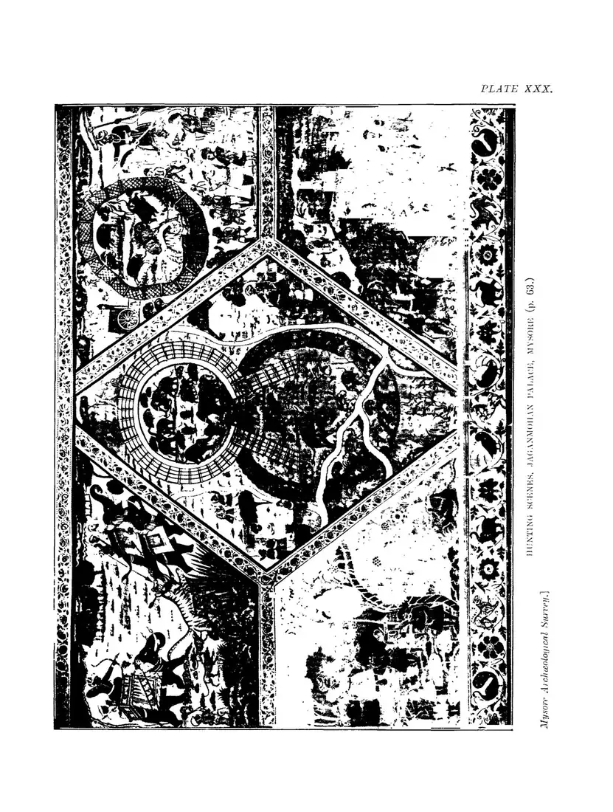
- HUNTING SCENES, JAGANMOHAN PALACE, MYSORE (p. 63)
the trees. At close intervals on the outside of the two rings people stand on guard with their weapons mostly consisting of muskets. Along the various paths the elephants have been driven and thus on to the outer enclosure of the trees in the first instance, and thence into the circular area, through the passage which gradually narrows inwards. On either side of the passage and behind the projecting arms of the gateway stand people to prevent the elephants from straying away from the passage.
The Mahārāja sits on a chair under a tree in proximity to his tent. He is waited upon by his retinue, one of whom reports to him with folded hands the progress of the operations. On the other side an officer labelled ಪಾಗಿರ್ ಪೇಪಾಕಚೇರಿ ಬಕ್ಷ ಅಂಗಾಜೀರಾವು is engaged in instructing the people with a view to prevent the already inveigled elephants from escaping. The musketeers are firing through the outer enclosure evidently to put the beasts to confusion and thereby precipitate their entering the inner enclosure through the passage. Some others mounted on tamed elephants are in the attitude of signalling the entry of the elephants into the enclosures. The outer ring of the inner enclosure is also guarded, here and there, by people, well armed with muskets and spears.
The confused and desperate situation of the elephants is well worked in the panel. In the outer enclosure a tusker trumpets in despair of having been trapped. Several others in the middle of the passage are shown as dashing into the inner enclosure in the fond hope of finding some outlet for freedom there. But inside of the latter are already as much confused elephants some of whom have formed to the right a phalanx. Just near the gateway a baby is being tossed to and fro, as if in cradle, by his parents who have taken him up into the air on their interlocked trunks.
Paintings on the lower sections of the north and south walls
The lower sections of the north and south walls, on either side of the doorways which are pierced through them, have been painted mostly by geometrical designs and animal and bird figures, drawn on the principle of 'Aśvagati' across the squares of two kinds of the Indian chess board consisting respectively of 144 and 64 houses. The squares occupied by the designs, are all numbered. The starting square numbered 1 is different in each case and has depended on the design intended to be represented. Krīshṇarāja Wođeyar III is well known as an expert in the game. His love of the chess was no less than his love of the chase. He has even invented several games. It is understood that the various chess puzzles depicted in the paintings on the walls, etc., have their keys at the Jagan Mohan Palace.
9
We may group these chess puzzles under four classes—two on the north wall and two on the south. Each class occurring to one side of the doorway, is worked into panels on the same principle, though consisting of different designs.
The rectangle in the centre has an oval panel inside it, which is painted with the picture of a galloping horse called by the name written above it.
On the four sides of the central panel, 12 smaller panels are arranged, four on each side, which consist of geometric designs on the sides and animal or bird designs at the corners of the central panel, there occurring thus eight geometric designs, two on each side and four animal or bird designs, one at each corner of the central panel.
On either side of this outer enclosure panels are painted eight panels of the same size, four on either side, representing in their inner oval panels the portraits of the Mysore Officers with descriptive legends in Kannađa in the upper two corners.
On the four outer sides of the aggregate group of panels abovementioned, are drawn 18 bigger panels, 6 on the upper and lower rows and 5 each on the two other sides. The corner panels represent couples. The central panels on the sides, 2 each in the upper and lower ones and one each on the left and right, consist of animal or bird designs.
There are also the Kalpavṛiksha tree and the Pushpaka chariot. In the eastern section of the north wall there is the vyūha.
The rest of the panels consist of geometrical and floral designs, varṇamālas, or some instructive sayings. Only in one case, that is, in the western section of the north wall, there is a sarpa .
The names of the horses and portraits in these paintings are as under :—
North wall, western section.—
Horse—ವಿಜಯರತ್ನ.
Portraits—Left side :— Right side :—
1. ಮಹಾಲತ್ಯಚೇರಿನಾರಣರಾವು 5. ಕಂದಾಚಾರ | ಮೀರ ಮೀರಾ ಶ್ರೀನಿವಾಸರಾವು ||
2. ಮೋದೀಪಾನೀ ಬಕ್ಷೀ ನರಕಿಂಗರಾಮ 6. ಮಹಾಲತ್ಯಚೇರಿ ದಾದೆರಾವು
3. ರಾಕೀಕ ವಿದ್ವಾಂಸರ ಬಕ್ಷೀ ಪಂಕ್ರಜೀ ಸುಬ್ಬರಾಮ 7. ಖಜಾನೇ ಶಿರಸ್ತೇದಾರ ಕಟ್ಟುಣನವರು
4. ಶಹಾ ನಂಜಪ್ಪನವರು 8. ಪ್ಯಾಜೊಕ್ಕಸ ದ್ವಾದುಂ ಬಕ್ಷಿಸುಬ್ಬರಾವು
North wall, eastern section.—
Horse—ಜಯರಾಮ.
Portraits—Left side :— Right side :—
1. ಅಪ್ಪಗ್ರಾಮದ ಫೌಜುದಾರ ವೆಂಕಟರಮಣ್ಯೈಯ್ಯ || 5. ನಗರದ ಪೌಜುದಾರ ಸರ್ವೋತ್ತಮರಾವು ||
2. ಬಂಗಲೇ ಚಾಡ್ಯೈಯ್ಯ || 6. ಬಂಗಲೇ ಕೃಷರಾಮರು
3. ಬೆಂ|| ಫೌ|| ತಿಂಮಪ್ಪಾಜೀ || 7. ದಿವಾಣ ವೆಂಕಟ ಅರಸು
4. ಮೀರ ಮಹಂಮದ ಸಾಬು | ಪಿರ್ಯಾದಕಚೇರಿರಿ ಬಕ್ಷೀ 8. ಕಮಠೀ ಬಕ್ಷೀಬಾಕರ ಸಾಬು ||
South wall, eastern section.—
Horse—ವಿಜಯರಾಮ.
Portraits—Left side :—
1. ಬೆಂಕೇನವಾಬನ ಮಗ ಕಾನೀಮಲ್ಲೇಖಾ
2. ಅಬೀಯಾರ ಜಂಗು
3. ಅಲ್ಲೇ ಹುಸೇನಪಾ
4. ಹಜೂರು ಸಾವಕಾರ ನವಲು ಕಿಶೋರದಾಸು
Right side :—
5. ಕಮಠೀ ಬಕ್ಷೇ ಮೆಖರೀ ಮಾರ್ದೀಸಾಬು
6. ಸಬ್ಬರ ಜಂಗು
7. ಮೋತೀಪಾನಾ
8. ಹಜೂರು ಸಾವಕಾರ ದಾಮೋದರದಾಸು
South wall, western section.—
Horse—ಜಯರತ್ನ.
Portraits—Left side :—
1. ಅಪೀನು! ಮುನಾಹೇಬು! ಸುಬ್ಬಂಣನವರು
2. ಬಾರೀಗಾಟು ಬಕ್ಷೇ ಪುಟ್ಟ ಬಸಪ್ಪಾಜಿಯವರು
3. ಅಂಚೆ ಮಲ್ಲಪ್ಪಾಜಿಯವರು
4. ಮುದ್ರಾಜೇ ಅರಸು
Right side :—
5. ಮಂತ್ರಿ! ಹರಂಣ್ಯಪ್ಪನವರು
6. ಸರ್ವಾಧಿಕಾರಿ ಬಾಳೆ ಅರಸಿನವರು
7. ಜಿರೊ ಕಚೆರೀ ಬಕ್ಷೇ! ಅರೆಪುರ ಬಸಪ್ಪಾಜೀ
8. ಮಾಗುಣ [ರು] ನಂಜಪ್ಪಾಜಿಯವರು
East wall of the Northern room
Here is painted in a highly pleasing colour complex and with admirable skill a kalpa vriksha representation of all the members of the family of Krishnarāja Wađeyar III, with legends in Kannađa giving their names and relationship. On either side below is painted a well laid out garden planted with trees on the four sides of a pond represented as being full of lotus buds. Between the gardens is laid the light blue kalaśa on an oval silvery base, with a crescent mouth significant of the moon-race, out of which the Kalpadruma issues forth with a stem shaped like a palm and painted red.
At the top are two oblong panels, the first of which has the inscription. ಶ್ರೀಮನ್ಮಹಾವಿಷ್ಣು ಮೊದರಾಗಿ ಶ್ರೀ ಕೃಷ್ಣರಾಜ ಮಹಾರಾಜೇಂದ್ರ ಕಂಠೀರವರ ವಂಶಾವತರಣ ವೈಥವ ವಿವರಣದ ಪದ್ಯ ಗದ್ಯ ಸಹಾ ಬರದು! ಪತ್ನೀರು ಪುತ್ರರು ಪಾತ್ರರು ಪ್ರಪಾತ್ರರು ದಾಹಿತ್ರರು ಸಹಾ ಕಲ್ಪವೃಕ್ಷ ಭಾವದೊಳ್ ತಿಳಿಯುವಂತೆ ಬರದು ಯಿಥೆ.
The Vamśāvataraṇa Vaibhava, that is, the glory of the descent of the Mahārāja, is given in verse and prose in the vacant spaces at the four corners of the panel, while the Kalpavriksha representation has been designed for making known the names of all those who constituted the large family of the Mahārāja.
At the termination of the stem a circular panel is painted with edges of seeds and petals, resembling those of an open lotus. The petals are as many as the words composing the following ślōka :—
ಧಸಿತಲಸಿತ ಫಾಲಂ ರಮ್ಯರುದ್ರಾಕ್ಷ ಮಾಲಂ! ಕನಕಮಯ ಸುಚೇಲಂ ಕಾಮನೀಯಸ್ವರೇಲಂ! ಸದವನ ಪರಿಶೀಲಂ ಚಾರು ಚಾಮೇಂದ್ರ ಬಾಲಂ! ಹೃದಯ ಕವಲ ಮದ್ಯೆ ಸಂತತಂ ಭಾವಯಾಮಿ||
The 60 letters of the ślōka are written at one on each of the 60 petals of the lotus. In the centre of the open flower the subject of the ślōka, that is, the Mahārāja himself, sits in state on his bejewelled golden throne to left. The ladies of his harem are in attendance upon him, two standing with fly-whisks behind him and four to his front, each in a different attitude. While the one to the extreme left fans him with peacock feather fan, another to her front offers him the folded betel, a third has her palms disposed in the attitude of requesting, and the fourth holds in her right hand a damaruga-shaped golden vase (pīp-dān), perhaps to receive in it the chewed betel. In the left upper field runs the legend in Kannaḍa:—
1. ಶ್ರೀಮನ್ಯಹಿತಣರಪುರವ 4. ಯರು ಬಹದರವರ ಭಾವ
2. ರಾಧೀಶ ನಂಜರಾಜಾಭಿದಮುಂ 5. ಚಿತ್ರ
3. ಮಡಿ ಶ್ರೀ ಕೃಷ್ಣರಾಜೇಂದ್ರ ವಡೆ
On either side of the central lotus design spring forth the red-coloured ramifications amidst the green foliage supplied by the leaves. Further off-shoots are carried all round the central figure, so that with the different designs adopted to represent a wife, or a son, or a daughter, or a son's wives, sons or daughters, or grand-daughters-in-law or daughter's sons or daughters, the Kalpavṛiksha seems to have been wrought with an unusual technique and unparalleled skill.
Krishnārāja Waḍeyar's queens are represented by elongated and highly curved leafy designs; his sons, like himself, but in a smaller circular design of the lotus edged by petals; and his daughters by small mango-shaped leafy designs. The grandsons and grand daughters are similarly represented, that is, the males being indicated by circular designs and the females by leafy designs; but in the case of the circles we must note that the more they are removed from the Mahārāja in relationship the lesser would be their diameter. The Mahārāja's daughters-in-law are represented by short trefoil leaves without stalk; but the grand daughters-in-law by longer trefoil leaves with stalks. The purpose of these stalks, which are invariably painted in red, is to indicate relationship. Krishnarāja Waḍeyar had 20 queens and though they are arranged 11 on the left and 9 on the right, the arrangement is yet not disturbing symmetry, because one of the queens mentioned on the right i.e. , No. 12 had the greatest number of daughters, each of whom had also a good number of female issues. Similarly, the fact that from the queens Nos. 9 and 10 were born sons and daughters through whom the relations multiplied in the form of their wives, sons, son's wives, grandsons and grand daughters, gave the artist material enough to fill in the spaces at the upper field with designs.
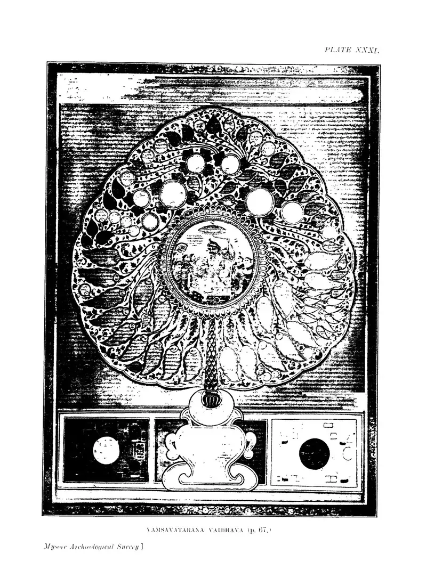
- VAMSAVATARANA VAIBHAVA (p. 67)
Each leaf and each lotus is numbered and labelled with the help of which it has been possible to prepare the following table :—
1. ಪಟ್ಟಮಹಿಷಿ ದ್ಯಾವಾಜಾಂಬಾ (No issue).
2. ರಕ್ಷ್ಮೀವಿರಾನದ ದೇವಾಂಬಾ ( do ).
3. ರವಾವಿರಾನದ ಚಲುವಾಂಬಾ daughter ಕೆಂಪಚಾಮಂಮಂಣಿ.
4. ಕೃಷ್ಣವಿರಾನದ ಲಿಂಗಾಜವಣಂಬಾ.
5. ಸೀತಾವಿರಾನದ ದೇವಾಜಾಂಬಾ
6. ರಕ್ಷಾಂಬಾ.
7. ಹೊಕ್ಕನ ತೊಟ್ಟಿ ಪುಟ್ಟ ಗೌರಾಂಬಾ
Son 1 (No name).
8. ಚಂದ್ರಶಾರಾ ತೊಟ್ಟಿ ಮಲ್ಲಿಗಾಂಬಾ.
9. ಮದನವಿರಾನ ತೊಟ್ಟಿ ಮುದ್ದಲಿಂಗಾಂಬಾ
Daughter ವ್ಯಾವಾಜಂಮಂಣಿ ನಷತ್ತಿ ಸಾಕುಪುತ್ರಿ ದ್ಯಾವಾಜಂಮಂಣಿ Son ಸೇನಾಪತಿ ಚಾಮರಾಜ ಬಹದರ್ (Born 3' 1738
Yuva Phāl. ba. 10 Su
Wives 4, Sons 4, Daughter 1.
ದ್ಯಾವಾಜಂಮಂಣಿ Son Son Son Son
Wife 1 :- ಕೆಂಪನಂಜಂಮಂಣಿ- 2 Sons-ಸೇನಾಪತಿ ನಂಜರಾಜ ಬಹದ್ದರ್ and ದೇವರಾಜ ಬಹದರ್.
(Born S' 1756 Vijaya) Wives 4, Sons 2, daughters 2.
Wives 2, sons 4, daughters 7 Wife 1 :-ಕೆಂಪನಂಜಂಮಂಣಿ-
Wife 1 :-ಕಾಂತಂಮಂಣಿ-Sons daughters 2, son 1 ಶಿವರಾಮರಾಜ.
ಚಾಮಂಡಿರಾಜ, ಶ್ರೀಕಂಠರಾಜ Wife 2 :-ದ್ಯಾವಾಜಂಮಂಣಿ- daughters-ಬೆಟ್ಟತಾಯಂಮಣಿ and 6 others. Son 1 ಚಾಮರಾಜ.
Wife 2 :-ಸುಬಂಮಂಣಿ-Son Wife 3 :-ನಂಜಂಮಂಣಿ.
ಯದುದೇವರಾಜ, daughters 2. Wife 4 :-ಕೃಷ್ಣಾಜಂಮಂಣಿ.
Wife 2 :-ಕೆಂಪದ್ಯಾವಾಜಂಮಂಣಿ-daughter ಬೆಟ್ಟದಂಮಂಣಿ.
Wife 3 :-ಪುಟ್ಟಗೌರಂಮಯ್ಯ-Son ಕೆಂಪಿನಪುಟ್ಟಸಾಮಿ ಚಾಮರಾಜಬಹದರು.
Born S' 1757 Jaya. Wives 2-daughters 2.
Wife 1 :-ಚಾಮಂಮಂಣಿ-daughter ದ್ಯಾವಾಜಂಮಂಣಿ.
Wife 2 :-ನಂಜಂಮಂಣಿ-daughter ಜಯಂಮಂಣಿ.
Wife 4 :--ಕೆಂಪಲಕ್ಷಂಮಯ್ಯ-Son ಸಂ|| ತೊ|| ದ್ಯಾವರಾಜ ಬಹದರ್ Born § 1757 Jaya.
10. ಪುಟ್ಟರಂಗಂಮಾಂಬಾ-Son ಯುವರಾಜ ನಂಜರಾಜ ಬಹದರ್.
Born S' 1743 Vikrama.
Wives 5, Sons 2, daughters 8.
Wife 1 :-ಪುಟ್ಟಗೌರಂಮಯ್ಯ-daughter 1.
Wife 2 :-ದೇವಿಲರಂಮಂಣಿ-daughters 2.
Wife 3 :-ನಂಜಂಮಂಣಿ-daughter
Wife 4 :-ಬಿರಸಪುತ್ರಿ ಚಂನಗೌರಂಮಂಣಿ
ದ್ಯಾವಾಜಂಮಂಣಿ
- Wife 5 :-ಚಾಮಂಮಂಣಿ.
11. ೨ನೇ ಬೊಕ್ಕನದ ಶೊಟ್ಟ ಗುರುಸಿದ್ದ ಮಾಂಬಾ --daughter ದಿಳ್ಳವಾಹಂಮಾಣಿ
12. ಚಂದ್ರವಿರಾನದ ಬನವಾಹಂಬಾ --daughter
ದೊಡ್ಡ ಪುಟ್ಟಂಮಾಣಿ ಪುಟ್ಟಶಾಮಾಮಾಣಿ alhas ಚಾಮಾಮಾಣಿ ನಂಹಂಮಾಣಿ
ಕೆಂಪನಂಹಂಮಾಣಿ. ಕೆಂಪದಿಳ್ಳವಾಹಂಮಾಣಿ daughter ವಿರಾಹಂಮಾಣಿ ಗೌರವಾಣಿ ಬನವಾಹಂಮಾಣಿ ನಂಹಂಮಾಣಿ
ಕೆಂಪನಂಹ ಲಂಗಾಹಂಮಾಣಿ ವಿರಾಹಂಮಾಣಿ Son Gon
ಪುಟ್ಟಲಂಗರಾಜೇ ಅರಸು.
13. ಮನೋವಿರಾನ ಮರಿವೇವಾಂಬಾ
14. ಕಮಾಂ ಶೊಟ್ಟ ನಿದ್ದ ಲಂಗಮಾಂಬಾ
15. ಕಮಾಂ ಶೊಟ್ಟ ಬಿದ್ದಮಾಂಬಾ daughter ಚಾಮಾಮಾಣಿ.
16. ಕೆಂಪನಂಹಂಮಾಂಬಾ
17. ಮರಿನಂಹಂಮಾಂಬಾ
Son ಚಾಮರಾಜರಸು
14. ದೇವಿರಾಂಬಾ daughter ಮನೋವಿರಾನದ ಬಿಕ್ಕದ್ದಟ್ಟಂಮಾಣಿ
Son ನಂಹರಾಜೇ ಅರಸ. Son ನಿದ್ದರಾಜೇ ಅರಸು
19. ಕರ್ಳಾಣಾಂಬಾ.
20. ನಮೂ ಶೊಟ್ಟ ಮುಮ್ಮಕ್ಕ ಪಾಳ್ಯಮಾಂಬಾದೇವಿ
East wall of the Southern room
Here is painted a highly interesting Vasantōtsava celebration which, traditionally, marks the end of festivities in temples or in marriages. In the background is the palace. Some of the queens stand on the terrace. In the upper storey of the building the rest wait upon the Mahārāja who is shown as sitting on his swan couch.
Along the pathway edging the two ponds in the foreground stand in two groups the lady musicians singing to the accompaniment of several instruments consisting of the mridanga, the sruti shaped like a bagpipe, the violin, the cymbals and the tambūra, on the left and of the mridanga, the cymbals, the maurching, the tambūra and the vipā on the right. Moved to great action and excitement by this music the dainsels carry vasanta in quick succession, to store which huge vessels are kept here and there in the courtyard where the game is already in good progress. The Mahārāja stands in the middle of the courtyard under the royal umbrella held by a maid servant. While one offers him the betel from behind, another stands with pipdan in front. A maid stands before him with a pot of vasanta. The filled piston is directed towards one of his queens who stands in the verandah of the ground floor on the left, while she, in her turn, syringes in his direction. The other queens standing in the different parts of the verandah are also similarly engaged. Some of those around him in the courtyard turn out pots full of vasanta on their comrades here and there. While the maids run for supply, their mistresses shout out to hurry them up. Some are engaged in directing the course of the vasanta. The whole is a scene of gaiety and movement, and seems to be in tune with the ordered concert that heightens the effect of the murth of the Vasantötsava.
Part III: Numismatic
During the year under report about 137 coins in all were studied. Of these 84 were acquired for the Archaeological Museum, while the remaining 52 coins were received for study from private collectors.
Among the 84 coins acquired for the Museum there are three silver coins of Aurangzeb, which were obtained gratis by the Mysore Government from the Bombay Branch of the Royal Asiatic Society, Bombay. They are as under :—
1. Provenance : Kalthan. Mint : Surat. Bears the date 1096-28 (cp. Catalogue of the Coins in the Punjab Museum, Lahore Vol. II, No. 1707).
2. Same as above, but bears the date 1097-29. (cp. Catalogue of the Coins in the Punjub Museum, Lahore, Vol. II, No. 1709).
3. Provenance : Akola. Mint : Bijapur. Bears the date 1116-48 (cp. Ibid No. 1641).
Five coins were purchased from the Central Museum, Lahore, of which one is silver and the others are billons. The silver coin is an issue of Alamgir II and is published in I. M. C. Vol. III as No. 2251. It bears the date of which the first two digits only are clear : 11 . . . The billons are as follows :—
1. Muhammad Bin Sam (1193-1205 A. D.) wt. about 56 grains. cp. I.M.C. Vol. II, p. 18, No. 12. Bears no date.
2. Shamsu-d-Din Altamsh (1210—1235 A. D.) cp. I. M. C. Vol. II. p. 24, No. 79 and p. 26. No. 92.
3. Nasiru-d-Din Qubácha (c. 1228) cp. Ibid p. 184, Nos. 5, 6, and 7.
4. A coin said to be of Nasiru-d-Din Qarlagh who reigned in Sind from A.D. 1249 and whose date of death is not certain. The type, however, seems to be different from those published in I.M.C. Vol. II.
A collection of 75 coins (including specimens of copper and silver. and 5 medals) was purchased from a private person. These are being studied.
About 40 copper coins and one of silver were received from a private collector at Haveri for study. The silver coin is an issue of the Bijapur Sultanate. About 10 copper coins are the issues of Tipu. All of them are published in Henderson's Catalogue, excepting only one which appears to be a new specimen so far as the Persian legend on the reverse is concerned, though it belongs to the well known Elephant type. Four copper coins are of the Gaṇdabhēruṇḍa type issued by the Vijayanagar dynasty and four others of the Garuḍa type of the same dynasty. Of the latter, however, two specimens have not been well known till now. They have the standing figure of a Garuḍa with folded hands on the obverse. The reverse of one of them has the legend 'Pratāpa Krīshṇarāya,' while that of the other appears
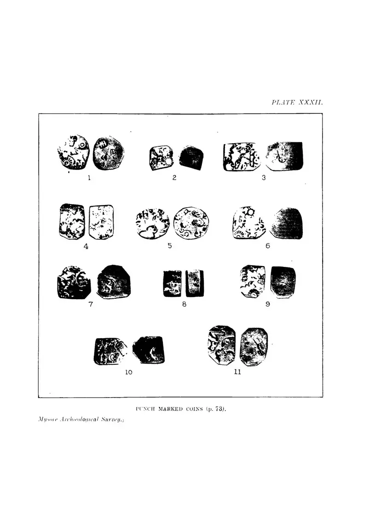
- PUNCH MARKED COINS (p. 73)
to have the legend 'Pratāpa Sadāśivarāya.' One copper coin of the collection is of the East India Company. The remaining 20 copper coins belong to the mediaeval Mussalman series, most of them being the issues of the Bijapur dynasty.
Some Punch-marked coins
No heading in the body: this section starts at its printed page (73-76).
Eleven punch-marked coins of silver were received from Dharwar. Most of them are roughly rectangular in shape, only two being irregularly circular. The greatest weight among these specimens is 50·2 grains, while the lowest is 46·5. We may therefore take the coins to be specimens of the Puranas, though their weight is not uniform and cannot come up to the full normal weight of 58 grains suggested by Smith' and other numismatists. Perhaps this inequality of weight is due to the different proportions of silver that these coins contain. It is also possible that no definite rule was followed in regard to their weight.
Almost all the coins bear marks both on the obverse and the reverse. While the marks on the obverse are deep and bold, those on the reverse are smaller and faint. The obverse contains generally five or more symbols. But the reverse has fewer marks, though in the case of 5 only, the reverse has as many as six marks. Among the most common symbols appearing on the coins may be mentioned the hill, the sun and the bull marks as also a circle with pellet in centre and arrow-heads and taurine symbols around. The solar mark and the taurine symbol appear on all the issues. Among the animals figured on the coins the bull has been mentioned above. The elephant appears on coins Nos. 5 and 10. The jackal surmounts the hill on coins Nos. 1, 6, 7, and 9. while it appears independently on coin No. 11. A frog appears on coin No. 6. The river mark appearing on coin No. 4 may be compared with that appearing on the obverse of No. 2 plate XXI, M.A.R. 1936. It is possible that it perhaps refers, like the hill and fortress marks, to the localities where they were issued.
The specimens are described below :—
1. Ag. Shape : Irregularly circular. Size : 1·9 × 1·68 × 134 cms. Weight 48·6 grs.
Obverse :—
(a) Mountain with dog or jackal on top 2 .
(b) Solar symbol.
(c) Uncertain mark in an oval (cp. pl. I, 27—Allan's Catalogue of Ancient Indian coins).
1. Catalogue of the Coins in the Indian Museum. Vol. I p. 134
2. 19 punch-marked coins were published with description in the Mysore Archæological Report for 1936. Since that time Mr. J. Allan's 'Catalogue of the Coins of Ancient India' has been received. Since it is a classic on the subject, the terminology for various symbols accepted in that book has been adopted here, the older terms like the 'Troy' mark. Chaitya, etc., being given up wherever possible.
10 (d) A circle with a pellet in the centre and arrow-heads around.
(e) Head of bull.
(f) Circle with pellet in centre and an uncertain fragmentary symbol by its side (? taurine).
Reverse :—
(a) Solar symbol.
(b) Two umbrellas, one above the other. (This symbol is not to be found in Allan's Catalogue).
(c) Tree or branch.
(d) An arc. (Perhaps a crescent).
(e) A square with four dots. (Not a common symbol a ccording to J. Allan. Catalogue of the cions of Ancient India Intro. XXXIV).
2. Ag. Shape : irregularly square. Size : 1'31 × 1'22 × '270 cms. Weight 49'9 grs. The specimen requires cleaning. Among the symbols only the solar mark on the obverse is distinctly visible.
3. Ag. Shape : Oblong. Size : 2'5 × 1'52 × '126 cms. Weight 48'8 grs.
Obverse :—
(a) Solar symbol.
(b) Bull (?)
(c) Circle with 3 arrow-heads and 3 taurine symbols in ovals around, of which 2 taurine symbols and one arrow-head are visible and 2 arrow-heads are partly visible.
(d) A group consisting of taurine symbols arranged round two circles placed one above the other.
(e) A post (?) with a taurine symbol on either side below. (Prinsep calls it jayadhvaja . See Allan's Catalogue, pp. XXXIII and XXXIV. Intro.)
Reverse :—
(a) Tree or branch mark.
(b) A pellet surrounded by four semicircles (Cp. Allan's Catalogue, Intro. p. XXXVIII).
4. Ag. Shape : Oblong. Size : 1'85 × 1'38 × '147 cms. Weight 46'5 grs.
Obverse :—
(a) Solar symbol with 2 taurine symbols to right.
(b) A circle with pellet in centre and perhaps three arrow-heads and three taurine symbols around. But the marks are not distinctly visible.
(c) Bull (?)
(d) River mark or cobra (? see Allan p. XXIX).
Reverse :—
Bears five marks of which the following three only are distinctly visible :—
(a) Hill mark with crescent on top.
(b) Tree or branch mark.
(c) Solar mark.
(d) There appears to be also a railing surmounted by a taurine symbol.
5. Ag. Shape : Roughly circular. Size : 1'89 \times 1'71 \times 1'34 cms.
Weight 47'5 grs.
Obverse :—
(a) Tusker to right.
(b) A post, as in 3 obverse above, with a pair of taurine symbols on either side.
(c) A circle with pellet in centre and arrow-heads and taurine symbols in ovals around.
(d) Solar symbol.
(e) Indistinct—Hill mark (?)
(f) Indistinct—two horns are visible.
Reverse :—
(a) Taurine in a circle.
(b) Indistinct. Nandipāda (?)
(c) A pellet.
(d) A svastika.
(e) A circle with a pellet inside and a taurine symbol to its left.
(f) A curious bird or horse doubtfully.
6. Ag. Shape : Irregularly oblong. Size : 1'78 \times 1'73 \times 1'39 cms.
Weight 47'35 grs.
Obverse :—
(a) Solar mark.
(b) Mountain with jackal on top as on 1 obverse.
(c) A group of four taurine symbols arranged round a pellet.
(d) Circle with pellet in centre and three arrow-heads and three taurine symbols around.
(e) A frog (see Allan's Catalogue of the Coins of Ancient India, p. XXX Intro.)
Reverse :—
Has only one mark which is indistinct.
7. Ag. Shape : Irregularly oblong. Size : 1'79 \times 1'83 \times 1'26 .
Weight 47 grs.
Obverse :—
(a) Circle with pellet in centre and arrow-heads and taurine symbols in ovals around.
(b) Mountain with jackal on top.
(c) Solar mark.
(d) Tree mark. (?)—It looks more like a lizard.
(e) Bull.
The reverse has a tree mark and doubtfully a crescent mark.
8. Ag. Shape : Oblong. Size : 1'37 \times 1'98 \times 1'39 cms. Weight 50.2 grs. The obverse has two or three marks which are not distinctly visible.
9. Ag. Shape : Oblong. Size : 1'7 \times 1'85 \times 1'177 cms. Wt. 50 grs.
Obverse :—(a) Solar mark.
(b) Bull.
(c) A pair of fish arranged side by side.
(d) Mountain with jackal on top as in 7 obverse.
(e) Indistinct with a pair of fish to the right.
(f) Part of a circle with pellet in the centre and arrow-heads and taurine symbols around.
Reverse :—Has two or three marks of which the solar symbol only is clearly visible.
10. Ag. Shape : Roughly oblong. Size : 1'73 \times 1'44 \times 1'161 cms. Wt. 49.2 grs.
Obverse :—(a) Part of a circle with taurine symbols and arrow-heads around.
(b) Pellet with arrow-heads (?) around.
(c) A post, as in 3 obverse, with taurine symbols on either side.
(d) Solar mark.
(e) Elephant.
Reverse :—Has an indistinct mark.
11. Ag. Shape : Oblong. Size 2 \times 1'45 \times 1'29 cms. Wt. 48.2 grs.
Obverse :—(a) Solar mark.
(b) Bull.
(c) A pellet with a taurine symbol by its side.
(d) Jackal.
(e) Part of a circle with arrow-heads and ovals around.
Reverse :—(a) Circle with pellet in centre and a taurine symbol to the right.
(b) Five dots and two arcs.
Part IV: Manuscripts
Sachchūdrāchāra-Nairṇayam
Transcript; Manuscript; The Author; Importance; King Dēvarāja; uncle of Chikkadēvarāja ; Contents of the work; Colophon
The transcript of this work which is in Sanskrit verse and prose, was prepared by this Department and sent to the Government Oriental Library as early as 1910. It was also mentioned among the other works of Chikka Dēvarāja Vođeyar in para 101, M.A.R. 1908-9.
The manuscript contains 14 chapters with a prefatory extract from the 12th chapter of Śivamāhātmya-khaṇḍa, which dwells on the determination of castes by birth and by the various modes of inter-relationship among the castes by matrimony and otherwise. The work is written on the basis of the Śāstras. Passages from Vishṇupurāṇa, the Bhagavadġitā and the tenets of Manu are freely drawn upon with a view, mainly, to determine the rights and the privileges as also the limitations and, generally, the status of the Śūdras who are said to have originated from out of the feet of the Lord, the Creator.
The colophon at the end of every chapter gives us the information that the author of the work is Chikkadēvarāja Vođeyar, the Mysore king (1673-1704 A.D.). Though the Annals of the Mysore Royal Family do not mention anything about the king's high accomplishments as a scholar as much as he was a great patron of learning, we know from other sources that he was the author of several Sanskrit and Kannaḍa works known for their high standard of literary merit. The king was too eager to inaugurate in his kingdom an organised system of administration which could secure a consolidation not merely in the political but also in the social sphere. Such a desire must have prompted him to define and determine the rights of the fourth caste at a time, perhaps, when he also laid upon himself the task of introducing various social reforms in the Arasu community to which he himself belonged. It would appear that he was very keen in observing the institution of caste in the society of his days.
The present manuscript is thus valuable from the standpoint of the social history of the times, while it gives us also some idea about the king's literary talents in Sanskrit. The introductory chapter particularly is interesting from the point of view of political history. It gives a succinct account of the early kings of Mysore. While several of the passages occurring in the chapter are, with some minor differences, drawn from early inscriptions like Kg. 37 of 1662 and Tn. 23 of 1663, such of them as pertain to the reign of Chikkadēvarāja are to be found also in his other inscriptions: for instance, Sr. 14 of 1686. Later inscriptions like Sr. 64 of 1729 contain also the same passages and thus most of them may be found translated in the Epigraphia Carnatica series and elsewhere.
A point of great importance to note is that Dodđadēvarāja seems to have been succeeded on the throne by his younger brother Dēvarāja King Devaraja, Uncle of Chikkadevaraja. and not directly by Chikkadēvarāja Vođeyar, his eldest son. Dēvarāja and the latter are known to have been both about 32 years of age at the time when Dodđadēvarāja is said, in the Chikkadēvarāja Vamšāvaļi, to have placed Dēvarāja on the throne, making his own son the Crown Prince (Yuvarāja). Facts seem to indicate that Chikkadēvarāja was in disfavour with his father for a time and that the latter selected his brother as his immediate successor. The fact of Chikkadēvarāja's confinement at Hangaļa was also, perhaps, due to this. Thus it appears that Dēvarāja, younger brother of Dodđadēvarāja, ruled for a time before Chikkadēvarāja came to the throne in 1673 A.D. But his rule has not been mentioned in the Annals of the Mysore Royal Family. Nor has Wilks or Rice mentioned the rule of this Dēvarāja. The evidence of Chikkadēvarāja himself is enough however to show that he succeeded his uncle Dēvarāja (See Sr. 14 of 1686). The Chikkadēvarāja Vamšāvaļi greatly supports that evidence. The manuscript under review confirms the information collected from the inscriptions and the Vamšāvaļi. It contains, like Sr. 14 of 1686, passages describing the conquests of Dēvarāja and then says:
Asyāgrajanmanō Dodđadēvarāja mahībhrītah
Dharmpatny-anurūpāsīd Amrītāmbā yaśasvini etc.
Next follow the lines describing the birth of Chikkadēvarāja and Kanṭhīrava to King Dodđadēvarāja. The subsequent passages eulogise the person of Chikkadēvarāja and his exploits. There is a great similarity between the manuscript under review and Sr. 14 which is an inscription of Chikkadēvarāja. Sr. 64 of 1729 quotes freely passages from the manuscript and Sr. 14.
Contents of the work.
Chapters 2 to 14 deal with the subject proper in the following order:—
CHAPTER 2. Šūdrāchāra —The customs and usages of the Šūdras.
CHAPTER 3. Šāstra-Vaśyatram —The applicability of the Šāstras to the Šūdras.
CHAPTER 4. Vidyādhikārānadhikārah .—The right and restriction in respect of education.
CHAPTER 5. Šūdra-Dharmāh .—The duties of the Šūdras.
CHAPTER 6. Āpaddharmāh .—The laws of exigency.
CHAPTER 7. Nishḥkādikarmasu-adhikāranadhikāraḥ. —The right and restriction in respect of customs relating to marriage, etc.
CHAPTER 8. Drikshādishu-adhikāraḥ. —The right pertaining to initiation.
CHAPTER 9. Brahmajñānādhikāraḥ. —The right of attaining spiritual knowledge.
CHAPTER 10. Sandhyākarmānadhikāraḥ. —The limitation in respect of performing sandhyās .
CHAPTER 11. Sachchhūdra-bhẸda. —The several classes among the Śūdras.
CHAPTER 12. Āhnika-bhẸda. —Differences in the daily ceremonies
CHAPTER 13. Āśaucha. —The period of pollution.
CHAPTER 14. Karmayôga-paddhati. —Religious rites.
At the end the manuscript contains a colophon which details the accomplishments of Chikkadēvarāja and gives a list of his conquests among which are mentioned the following places : Chedamaṅgala, Maḥali, Paramati, Salem, Koṅgu, Dhārāpura. Māvaḥi, Dharmapurī, Kengēri, Vāmalūru, Bēvuhaḥli, Kunnattūru, Keḥadi, Kandikere. Chikanāyakanabaḥli, Honnavaḥli, Sāratavaḥli, Turugere, Jaḥakadurga, Bijjāvāra. Maddagiri, Chennarāyadurga. Vīraṇadurga. and Beṅgalūru.
Colophon.
Footnotes
p. 30 1. M. A. R. 1912, p. 16.
p. 34 1 M. A. R. 1937, p. 46, pl. XIV, 2.
All plates (34)
Click a plate to go to its place in the text; each plate there has links to the previous and next plate and back to this list.